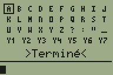
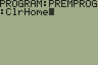
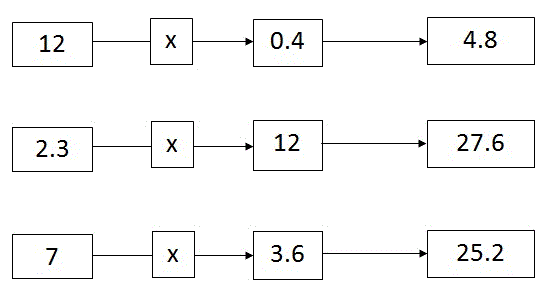
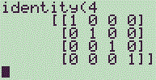
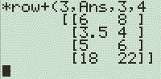
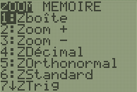
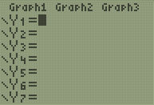
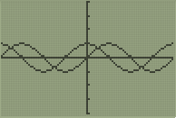
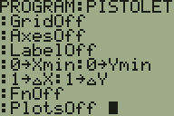

Vous possédez une TI graphique, et vous voudriez faire plus de choses avec ? Vous avez entendu parler du TI-Basic, mais vous aimeriez bien savoir comment ça marche ? Ou encore, votre professeur de Mathématiques vous demande d'apprendre ce langage ?
Mon tutoriel est alors fait pour vous, car il va vous permettre d'apprendre facilement ce langage, de A à Z.
Pour toutes questions/remarques concernant le tutoriel et ce qu'il enseigne, le sujet Apprenez à programmer en TI-Basic ! est à votre disponibilité. Et n'oubliez pas les annexes qui sont à la fin, elles vous seront utiles.
Bonjour à vous, chers heureux lecteurs ! Si vous êtes sur ce tutoriel, c'est probablement que vous avez reçu récemment une calculatrice graphique Texas Instrument, TI pour les intimes. Vous savez faire des calculs dessus, mais cela ne vous suffit pas : vous aimeriez bien faire des programmes, comme par exemple des jeux. :p
Ou encore, vous devez apprendre le TI-Basic parce-que votre professeur vous le demande.
Je considérerai dans ce tutoriel que vous ne connaissez aucun langage, et que d'ailleurs, vous ne savez même pas ce qu'est un langage... Je vous instruirai tout cela !
La disposition des touches diffère quelque peu avec les autres modèles, comme la TI-82 stats. Ne vous inquiétez pas, je vous indiquerais ces différences.
Le TI-Basic est un langage de programmation comme un autre. Ce n'est rien d'autre qu'une syntaxe inventée par les gars de Texas Instrument qui permet de demander à la calculatrice d'effectuer des actions précises. Par exemple, afficher du texte, faire des calculs, demander à l'utilisateur un nombre etc.
Ce langage est très facile à apprendre, mais pas extrêmement puissant... cela reste néanmoins un langage idéal pour débuter, et avec lequel vous pourrez très vite arriver à de bons résultats. Et regardez d'ailleurs un Worms de ma composition qui accepte jusqu'à 6 joueurs, où chaque joueur peut-être un humain ou une intelligence artificielle :
(Si l'image est très lente, c'est sûrement votre navigateur qui supporte mal les gif animées)
Il existe un langage qui est similaire en certains points : le CASIO-BASIC. C'est aussi du Basic, mais pour les casios ! Et la syntaxe est bien sûr différente.
Vous pourrez programmer de ce langage directement sur la calculatrice, donc, pas besoin de PC pour son édition !
Le TI-Basic : comment ça marche ?
Le TI-Basic, c'est une liste de courses... c'est à dire qu'il ne fait qu'indiquer des tâches à exécuter, les unes après les autres :
Demander un nombre et le stocker dans R
Afficher : « L’AIRE EST »
Afficher : πR²
En TI-Basic, ça donne ça :
:Input R :Disp "L'AIR EST :" :Disp πR²
Plutôt simple, non ? La calculatrice va donc analyser une par une les instructions que l'on lui donne et les exécuter chacune à son tour.
L'écran principal permet de faire des calculs. Pour faire un calcul, il suffit de le taper grâce au clavier, et de valider avec
. Il est constitué de 8*16 caractères. Dans les calculs, des fonctions comme cosinus, logarithme etc. peuvent être utilisées. Il suffit pour cela de presser
,
etc.
Grâce à la touche
, il est possible d'accéder à des fonctions supplémentaires, celles qui se trouvent en haut à gauche de chaque touche. Par exemple, il faut faire
pour entrer le fameux π.
Voici les touches qui permettent d'éditer convenablement une expression :
: efface tout le calcul en cours. S'il n'y en a pas, efface tout l'écran.
: déplace le curseur d'un cran vers la gauche.
: déplace le curseur d'un cran vers la droite.
: supprime le caractère à l'emplacement du curseur.
: met le curseur en mode d’insertion : ainsi, lorsque vous tapez un caractère et qu'il y en a déjà un à l'emplacement du curseur, il est inséré à la place d'écraser le précédent.
Il est également possible de taper du texte. Chaque lettre de l'alphabet se retrouve en haut à droite de chaque touche, et on peut y accéder en pressant
. Pour verrouiller le mode ALPHA (ce qui permet de taper plusieurs lettres), il faut presser
, et pour revenir en mode normal, il faut à nouveau presser
.
Pour les TI-76.fr, la touche
n'existe pas mais se voit remplacée par la touche
permettant d'accéder à un clavier virtuel pour taper du texte :

Il faut alors utiliser les touches directionnelles pour sélectionner des caractères et
pour les insérer. Pour terminer, il faut choisir l'option ">Terminé<".
Les menus
Certaines touches du clavier permettent l'accès à des menus. Par exemple, le menu MATH en est un et se trouve en pressant
. Les menus sont souvent séparés en plusieurs colonnes ; pour passer de l'une à l'autre, il faut presser
ou
. Pour monter ou descendre, il faut presser
ou
. Pour insérer un élément du menu, il faut soit presser
, soit taper le caractère qui correspond à l'élément.
Exemples :
ou
pour insérer la fonction abs(
ou
pour insérer la fonction Matr►list( (que nous verrons plus tard)
Pour quitter un menu sans rien insérer, et retourner là où vous étiez, il faut presser
.
Le catalogue
Le catalogue est un menu qui permet de retrouver quasi toutes les fonctions de la calculatrice. Pour y accéder, on tape
. On utilise les touches directionnelles pour sélectionner une fonction et
pour valider. Pour annuler et quitter le menu, on presse
ou même
pour se retrouver sur l'écran principal.
Pour trouver plus rapidement une fonction, il est possible d'indiquer par quelle lettre elle commence. Par exemple, si on veut chercher la fonction cos (ce qui serait un tantinet insoucieux car une touche existe pour cela, mais c'est juste pour l'exemple), on va dans le catalogue puis on tape
(ALPHA étant automatiquement activé), et on descend jusqu'à trouver la fonction puis on valide.
Il vous est peut-être déjà arrivé de taper un calcul erroné. Dans ce cas, un menu composé de deux choix s'est offert à vous : Goto pour amener le curseur au niveau de l'erreur, et Quit pour annuler le calcul. Voici un petit récapitulatif des erreurs, il n'est pas exhaustif car il y a beaucoup d'erreurs différentes, je mets donc ici les principales. Si vous tombez sur une erreur non mentionnée ici, vous pouvez consulter le manuel.
ARGUMENT
Vous avez utilisé une fonction sans donner le bon nombre d'arguments.
BREAK
Vous avez stoppé un calcul trop long en pressant la touche ON.
DIVIDE BY 0
Vous avez tenté de diviser un nombre par zéro, où mis des valeurs dans des fonctions qui les a ramenées à effectuer ce calcul. Vérifiez alors que la valeur que vous avez mise est bien prise en charge par la fonction.
DOMAIN
Vous avez spécifié une valeur dans une fonction en dehors de l'intervalle autorisée.
MEMORY
La mémoire restante de la calculatrice est insuffisante pour terminer le calcul. Vérifiez que vous n'avez pas fait un erreur dans celui-ci obligeant la calculatrice à recalculer en boucle la même chose sans s'arrêter.
OVERFLOW
Le résultat du calcul ou d'une portion du calcul donne une valeur plus petite que -9.999999999 imes 10^{99} ou plus grande que 9.999999999 imes 10^{99}.
SYNTAX
Vous avez commis une erreur de syntaxe. :p C'est à dire que vous avez mis des parenthèses en trop, des virgules mal placées etc. etc.
Ou alors vous avez tenté d'exécuter sur l'écran principal une commande réservée aux programmes.
Allez, on peut s'attaquer aux bases du langage. :ninja:
C'est donc ici que vous allez faire vos premiers pas en TI-Basic. Ne vous inquiétez pas, tout est détaillé et facile à comprendre, mais n'hésitez pas à relire plusieurs fois si nécessaire pour les plus coriaces d'entre vous. :pirate: De plus, n'oubliez pas que le sujet Apprenez à programmer en TI-Basic ! est là pour vous si vous avez des questions (il faut naturellement être inscrit au site).
Bien, prenez votre calculatrice dans les mains, allumez-là, et calculez-moi 78 imes (54+7). Allez, et que ça saute !
La combinaison de touches est :
Je suppose que vous ne serez pas très étonnés d'avoir en face de vous l'écran suivant :
Pourtant, pour calculer cette expression, la calculatrice a dû l'interpréter afin de donner le résultat souhaité. Notez bien que cette expression peut aussi s'appeler une instruction.
Maintenant, admettons que vous vouliez calculer \sqrt{78 imes (54+7)} + 78 imes (54+7). On a une même expression qui apparait deux fois. Mais il serait trop fatiguant de la taper les deux fois, non ? Lorsqu'une expression est calculée, le résultat est mémorisé dans quelque chose de spécial se nommant Ans. Et nous allons utiliser ce Ans qui remplacera le résultat de la dernière expression.
Il va alors nous suffire de taper sur l'écran principal √(Ans)+Ans puis ENTER et de lire le résultat :
Mais admettons à présent que vous en ayez rien à faire du résultat de 78 imes (54+7) mais que vous vouliez seulement celui de \sqrt{78 imes (54+7)} + 78 imes (54+7). Commencez alors par taper la première expression, ensuite, insérez les deux-points avec
puis tapez la seconde expression, et enfin, validez avec ENTER :
Que s'est-il passé ? Vous avez tout simplement demandé à la calculatrice de calculer plusieurs expressions, les unes à la suite des autres. Et c'est bien sûr ce qu'elle a fait. La première expression a affecté la valeur de Ans, et cela a permis à la seconde de faire son boulo.
Vous pouvez vous amuser à taper autant d'expressions que vous le souhaitez, du moment que vous les séparez à chaque fois par ":". On appelle ça un groupe d'instructions.
Voici un exemple où l'on calcule \left ( \sqrt{78 imes (54+7)} + 78 imes (54+7) ight ) ^2 + \left ( \sqrt{78 imes (54+7)} + 78 imes (54+7) ight ) ^3 :
La suite d'expressions est ici : 78*(54+7):√(Ans)+Ans:Ans²+Ans³
En encadrant les différentes expressions chacune par une couleur, ça donne ça :
En effet, Ans remplace la valeur de la dernière expression calculée. Donc, si on remplace la première expression par une boîte bleue, on peut se permettre dans l'expression suivante d'utiliser la boite bleue sans se préoccuper de ce qu'il y a dedans. De même, en mettant le tout dans une boîte rouge, on peut se permettre de l'utiliser.
Comme vous êtes à présent des AS des groupes d'instructions, on peut s'attaquer aux résultats et nous pourrons enfin en arriver aux programmes !
Avant de s'attaquer enfin aux programmes, abordons les résultats. Dans nos exemples précédents, les résultats des expressions étaient 4758, 4826.978257, et 1.124905372*1011. Le plus souvent, un groupe d'instructions retournera un résultat.
Quoi !? Parce-qu'un calcul, ça peut retourner... rien du tout ?
Souvenez-vous, je vous ai dit qu'une expression pouvait aussi être appelée une instruction... mais une instruction n'est pas forcément un calcul. Elle peut simplement demander d'effectuer quelque chose de précis sans renvoyer de valeur. Par exemple, entrez la chose suivante sur l'écran principal puis validez (en utilisant le catalogue, détaillé dans le premier chapitre) :
Clear Entries ou Efface entrées
Vous obtenez alors l'écran suivant :
Calculatrices anglaises
Calculatrices françaises
Le Done (ou Fait) indique que l'instruction a bien été exécutée, mais sans rien retourner. Par ailleurs, la valeur de Ans n'a pas été modifiée.
Essayez d'ailleurs de n'entrer que les deux-points :
Là aussi, il n'y a pas de résultat. Et s'il y a au moins deux instructions vides après une expression, il n'y a de même pas de résultat :
Cependant, la valeur de Ans a été modifiée.
Avec un programme
Enfin ! :p Alors, pour créer un programme, pressez d'abord
, puis allez dans la colonne NEW ou NOUV et validez. Tapez le nom du programme (ALPHA est activé par défaut), et validez. Voici ce que vous obtenez (selon le nom que vous avez choisi) :
Vous pouvez voir tout en haut de l'écran le nom de votre programme, et à la ligne d'en dessous, deux-points ":" suivis du curseur. Ne rentrez rien mais sortez plutôt du programme en faisant
. Exécutons le programme. Il faut pour cela mettre son identification sur l'écran principal. Allez dans le menu
, placez le curseur sur votre programme (dans la colonne EXEC) et pressez
. Voici alors ce que vous pouvez observer :
La mention prgm indique que l'on veut exécuter un programme, et le nom doit suivre cette mention. Pressez à nouveau
:
Visiblement, il ne s'est rien passé : logique, puisqu'il n'y a pas de contenu. Le Done indique que le programme s'est bien exécuté mais que celui-ci n'a rien renvoyé.
Maintenant, on va lui mettre du contenu, dans ce programme. On va éditer le programme en faisant
puis en sélectionnant le programme (dans notre exemple : PREMPROG). Pour le contenu, c'est un jeu d'enfant, car toute instruction valable sur l'écran principal marche également dans un programme. On peut par exemple y mettre un calcul, comme "58*74+23". Ensuite, on quitte le programme et on l'exécute :
Code du programme
Résultat du programme
Il s'est passé exactement la même chose que si vous l'aviez tapé sur l'écran principal. Pour l'instant, cela peut paraitre inutile. Nous verrons dans la sous-partie suivante quelques commandes qui nous permettent d'améliorer cela.
Dans un programme, comme sur l'écran principal, il est possible d'entrer plusieurs instructions. Pour cela, on peut soit les séparer par ":" (comme avec l'écran principal), soit passer à la ligne suivante avec
. Notez d'ailleurs qu'une ligne commence toujours par ":". S'il n'y en a pas, c'est alors ce qui déborde d'une autre ligne.
Les programmes suivants sont ainsi identiques :
:78*(54+7):√(Ans)+Ans
:78*(54+7) :√(Ans)+Ans
Pour insérer à quelque endroit du programme une nouvelle ligne, il suffit de faire
. Pour effacer le contenu d'une ligne, il faut faire
. Pour supprimer une ligne, il faut soit que celle-ci soit vide puis taper
, soit être à la fin de la ligne précédente puis taper
.
Un petit exo
Sans pratique, on ne retient rien. Nous allons donc ici faire un mini-exo qui consiste à automatiser le calcul de l'image d'une fonction. L'interface ne sera pas extra, mais nous verrons comment changer cela plus tard.
Soit la fonction f définie par f(x) = \sqrt{x - 5} + x^3 - 78x Si l'on veut calculer des images par f, il ne serait pas très confortable de les calculer une par une à la main. Nous allons automatiser cela.
Créer un nouveau programme se nommant CALCFN, et y mettre le contenu suivant :
:√(Ans-5)+Ans³-78Ans
Ans remplace donc ici x. Pour calculer des images, il suffit donc de mettre dans Ans leur antécédent puis l'exécution de prgmCALCFN sur l'écran principal, en validant à chaque fois :
Dans chacun des cas, la première valeur sera placée dans Ans qui lui-même sera utilisé par le programme. À chaque validation, le résultat sera affiché. Les deux derniers exemples montrent que nous ne sommes pas limités à de simples valeurs, mais également aux expressions, ou aux appels de programmes... (ici, PREMPROG que nous avons auparavant construit, met 4315 dans Ans, mais il pourrait tout aussi bien ne pas changer sa valeur)
Jusqu'à présent, toutes les instructions de nos programmes étaient uniquement composées d'expressions. Mais une instruction peut contenir autre chose : une commande d'exécution (ce que nous allons voir ici), une commande de structure (qui sert pour les boucles que nous verrons plus tard) ou une commande de stockage (servant pour les variables que nous étudierons également plus tard).
Voici une commande que nous avons déjà rencontrée :
Clear Entries ou Efface entrées
Comme de nombreuses commandes d'exécution et de structure, cette commande ne renvoie rien : elle ne change donc pas non plus Ans. Les commandes permettent de faire diverses choses, comme afficher du texte, par exemple, ou encore demander un nombre à l'utilisateur. Mais ça peut aller beaucoup plus loin ! Nous ne verrons ici que quelques commandes d'exécution basiques. Mais attention ! Les commandes que nous allons voir ne sont pas exécutables à partir de l'écran principal. Eh oui, celui-ci est bien limité...
Pour les trouver, aller dans le menu
à partir de l'édition d'un programme.
Effacer l'écran
Voici la commande : ClrHome ou EffEcr Elle ne fait qu'effacer l'écran, l'historique des entrées est donc conservé. La valeur de Ans n'est pas modifiée.
Voici les étapes détaillées pour accéder à cette commande :

Il faut être dans l'édition d'un programme.
Appuyer sur
Appuyer sur
Trois possibilités :
*8
*5
Avec un peu d'habitude, vous connaitrez la position des commandes par cœur, et il sera plus rapide de les insérer en utilisant la première méthode (plutôt que d'appuyer plein de fois sur les touches directionnelles). Je ne détaillerais pas l'emplacement pour les autres commandes, à vous de vous balader dans le menu pour les trouver. Vous trouverez en annexe du tutoriel une liste des commandes de la TI (non exhaustive) qui renseigne à chacune d'entre elles la séquence de touches pour l'insérer ainsi que la correspondance anglais <=> français.
L'affichage
Disp
Jusqu'ici, nous ne pouvions afficher qu'une seule chose dans un programme, grâce au résultat de celui-ci. Voici donc une commande qui permet d'afficher ce que l'on veut, et quand on veut : Disp Il suffit de la faire suivre par ce que l'on veut afficher. Exemple :
Le Done est logique : notre programme ne retourne pas de résultat ! Il a cependant affecté Ans.
Il est possible d'afficher plusieurs choses avec Disp en séparant les différents éléments avec la virgule de séparation (et non le point) qui se trouve ici :
Notre programme peut donc se simplifier comme ceci :
:25*35 :Disp Ans,2Ans
Le résultat est exactement le même. Notez que l'on peut aussi afficher du texte, il suffit pour cela de mettre l'élément entre guillemets :
:Disp "HELLO !"
Voici le résultat :
Vous pouvez aussi mettre plusieurs éléments lorsque vous affichez du texte. Une p'tite restriction : chaque portion de texte ne doit excéder 16 caractères (la largeur de l'écran). Il faut donc diviser un long texte en plusieurs parties :
Ne faites pas ceci :
:Disp "SALUT, COMMENT VAS-TU ?"
Mais :
:Disp "SALUT, COMMENT","VAS-TU ?"
Un affichage avec Disp ne modifie pas la valeur de Ans.
Output
La commande Output( permet d'afficher du texte à un endroit localisé. Elle prend trois arguments : le premier, le numéro de ligne, le deuxième, le numéro de colonne, et le troisième, le texte. Un petit exemple :
:Output(5,2,"HELLO !!")
Résultat :
Comme vous pouvez le voir, cela ne change pas le curseur d'emplacement. Les numéros de ligne et de colonne peuvent également être des expressions. Exemple :
:Output(Ans+3,4*2,"HELLO !!")
Mais le résultat doit être un entier strictement supérieur à 0, et inférieur ou égal à 16 pour la colonne et 8 pour la ligne. Le texte peut être aussi long que l'on veut. S'il sort de l'écran, il déborde sur la ligne d'après :
:Output(5,7,"HELLO WORLD !!")
Résultat :
On peut également afficher un nombre avec Output, par exemple : Output(5,2,4Ans-5).
Remarque : il n'y a pas de "Done" lorsque la dernière instruction exécutée fait usage de la commande "Output".
Un affichage avec Output ne modifie pas la valeur de Ans.
Les pauses
Ouf ! après tout ce boulo, je ferai bien une pause ! Malheureusement, ce n'est pas de cela que nous allons parler. >_
Voici la commande : Pause Elle permet de marquer une pause. Des petits pixels clignotent en haut à droite en attendant que l'utilisateur presse ENTER.
Notez qu'il est également possible d'ajouter quelque chose après cette commande : un élément à afficher. Mais un seul. Pour le texte, vous pouvez alors le faire de la longueur que vous souhaitez, l'utilisateur n'aura qu'à le faire défiler avec
et
.
Un affichage avec Pause modifie la valeur de Ans.
En résumé : les commandes d'exécution servent à effectuer des actions précises comme par exemple effacer l'écran avec ClrHome ou EffEcr, afficher du texte ou des nombres avec Disp, ou encore marquer une pause avec Pause. Parfois, elles ne nécessitent pas d'arguments, parfois, il faut en mettre, et parfois, on peut choisir d'en mettre ou pas.
Votre TI n'a pas beaucoup de mémoire RAM dispo (à peine plus de 20Ko). Il serait donc bien de rendre chaque programme le plus léger possible afin qu'il ne prenne pas trop de place dans la mémoire. À votre niveau, je ne peux que vous apprendre quelques techniques bien précises. La première et la plus connue est de ne pas fermer les parenthèses (à la fin d'une instruction). Par exemple :
:Output(1,1,"HELLO !")
devient :
:Output(1,1,"HELLO !"
De plus, il est également possible de ne pas fermer les guillemets. On peut donc même écrire :
:Output(1,1,"HELLO !
En revanche, la fermeture des guillemets reste obligatoire si le changement d'instruction se fait via ":" et non un retour à la ligne. Donc le code suivant :
:Output(1,1,"HELLO !:ClrHome
affiche exactement "HELLO !:ClrHome". On peut en effet afficher en tant que texte des commandes. Si vous ne voulez pas afficher ":ClrHome" mais effacer l'écran, il faut donc passer à la ligne :
:Output(1,1,"HELLO ! :ClrHome
D'autre optimisations sont possibles pour gagner de la place. Par exemple :
Ans/10
devient :
.1Ans
car il est possible de ne pas spécifier le "0" avant la virgule d'un nombre ne possédant pas de partie entière. Ici, non seulement on gagne un octet, mais en plus de la vitesse car les multiplication sont plus rapides que les divisions. Si une même expression est utilisée plusieurs fois, il faut la mettre dans Ans pour l'utiliser par la suite :
:Output(2Ans+5,2Ans+5,"HELLO !
devient :
:2Ans+5 :Output(Ans,Ans,"HELLO !
On gagne des octets et de la rapidité. Ah, au fait, beaucoup de caractères et commandes ne prennent que un octet, mais certaines en prennent 2. C'est le cas de Clear Entries. Essayez donc toujours de grappiller dans la mesure du possible des octets par ci par là, c'est toujours ça de gagné.
Après toutes ces choses que vous avez apprises, vous avez maintenant le niveau pour l'utilisation des variables ! Nous ferons au fur et à mesure du tutoriel des choses de plus en plus avancées.
PS : je vous conseille de pratiquer dès maintenant, c'est-à-dire de faire votre propre programme avec ce qu'on vient d'apprendre histoire de s'en souvenir : afficher des nombres, du texte, marquer une pause...
Les variables, on n'y échappe jamais en programmation. Sans elles, on ne peut pratiquement rien faire. Comme plusieurs types de variables existent, nous verrons ici celles qui servent à stocker un nombre.
Une variable est destinée à contenir une information, comme un nombre, du texte ou encore une image. Elle sera contenue dans la mémoire de la calculatrice et permettra, dans le cas des nombres, de stocker des valeurs tout au long du programme, comme par exemple le nombre de vies du joueur.
En TI-Basic, il y a 28 variables destinées au stockage de valeurs pour le programmeur : cela va de A à Z en finissant par Ɵ et n. Elles se comportent en fait comme des étiquettes qui vont pointer vers un endroit de la mémoire, comme vous pouvez le voir avec ce schéma vraiment moche :
Nous n'aurons pas à nous soucier de la gestion de la mémoire, il nous suffira de spécifier le nom de la variable à utiliser et la calculatrice fera le reste.
Mais alors !? Il sert vraiment à rien ton vieux schéma pourri !
Nooon ! Pas les tomates ! :waw: Comme vous le montre le schéma, à un instant donné, toutes les variables n'ont pas forcément de valeur. Quand on la demande, elle sera alors 0. Mais ce n'est pas pour ça qu'une variable ne peut pas pointer sur un zéro comme le montre Ɵ sur le schéma.
Et si l'on veut changer la valeur d'une variable sans valeur ?
Dans ce cas, celle-ci sera automatiquement créée et contiendra la valeur que vous aurez spécifiée.
Ce schéma vous montre aussi qu'au lancement de votre programme, toutes les variables ne contiennent pas forcément 0. Il faudra donc les initialiser correctement.
Malgré le titre compliqué, ce que nous allons faire va être très simple : stocker et récupérer les valeurs des variables.
Stockage
Pour le stockage, il n'y a pas plus simple. Voici la syntaxe à respecter :
VALEUR→VARIABLE
Facile, hein ? Cette syntaxe marche pour tous les types de variables. Dans notre cas des nombres, VALEUR correspond à n'importe-quels nombre ou expression, par exemple 36*78+45. Le → s'insère en pressant
et indique le sens de déplacement des données : de gauche vers la droite. Et enfin, VARIABLE désigne le nom de la variable de destination.
Voici par exemple une instruction qui place 5 dans C :
:5→C
Pour ceux qui ne sauraient pas où on trouve les variables destinées à contenir un nombre, il suffit de savoir taper du texte. Par exemple, pour obtenir C, il faut faire
Si C n'existe pas, il est créé et initialisé à 5. S'il existe déjà, on remplace son ancienne valeur par 5.
Notez que vous pouvez ne pas fermer les parenthèses avant le "→" comme pour un retour à la ligne. Ceci est donc juste :
:cos(Ans→F
Extraction
L'extraction de la valeur d'une variable se fait de la même manière qu'avec Ans. Par exemple, pour calculer 3*C+5, on peut procéder ainsi :
3C+5
Nous avons ici fait usage de la multiplication implicite, c'est-à-dire une multiplication où l'on ne précise pas l'opérateur de multiplication. Pour placer une valeur dans une variable, il est possible d'utiliser la valeur d'autres variables, ou encore de la même. Voici un exemple de programme qui affiche 235 :
:24→A :10→B :AB-5→B :Disp B
Destruction
Il suffit pour cela d'utiliser la commande DelVar en la faisant suivre de la variable à détruire. Voici un exemple qui supprime F de la mémoire :
:DelVar F
Si la variable n'existe déjà pas, cette commande n'a aucun effet. Mais si elle existe, le contenu ET l'étiquette seront supprimés. Donc une utilisation future de F renverra 0 car F n'existe plus. Pour ceux qui apprennent le TI-Basic juste pour les Maths, préférez faire :
0→variable
Les autres, si vous voulez optimiser, préférez détruire la variable car cela libère de la mémoire.
Nous allons ici apprendre à récupérer la saisie d'un nombre par l'utilisateur de différentes manières. Vous pourrez par exemple lui demander son âge, ou le niveau auquel il désire jouer. La récupération d'une valeur se fait grâce à des commandes : il en existe deux différentes pour mener la tâche à bien.
Prompt
C'est la commande la plus utilisée par les débutants. Elle permet de demander facilement une saisie et d'indiquer dans quelle variable le résultat est stocké. L'unique argument à renseigner est la variable de destination. Ainsi, si l'on veut récupérer un nombre tapé par l'utilisateur et le stocker dans K, il faut faire comme ceci :
:Prompt K
Et voici ce que voit l'utilisateur :
Input
Cette commande peut accepter 0, 1 ou 2 arguments. Nous étudierons le cas de l'absence d'arguments dans le chapitre sur les graphismes.
Avec 1 argument
Il faut faire suivre la commande par la variable de destination. En reprenant l'exemple utilisant Prompt :
:Input K
Cette fois, l'utilisateur ne voit pas dans quelle variable la valeur entrée sera stockée :
Avec 2 arguments
Ici, c'est VOUS qui choisissez le texte qui s'affiche juste avant l'invite d'entrée. Cela permet d'expliciter ce qui est attendu. Voici le contenu d'un programme :
:Input "AGE:",R
Et voici le résultat :
Remarque : si l'utilisateur commet une faute dans son entrée, une erreur sera indiquée et il devra la rectifier.
Faisons un petit exercice qui demande à l'utilisateur son âge, qui efface l'écran, puis qui l'affiche :
:Input "AGE:",A :ClrHome :Disp "OK, TU AS",A
Et voici le résultat si l'utilisateur répond "25" :
J'espère que vous avez bien suivi, car nous utiliserons très souvent les variables : elles sont incontournables. Et comme je l'ai dit dans le chapitre précédent : faites de la pratique, sinon, vous ne retiendrez rien !
Les étiquettes permettent de localiser un endroit du programme, et elles occupent chacune la place d'une instruction. Voici comment faire une étiquette : il faut commencer l'instruction par Lbl , puis faire suivre cette commande un peu spéciale par le nom de l'étiquette. Ce nom doit faire entre 1 et 2 caractères, chacun étant une lettre ou un chiffre.
Voici un exemple d'étiquette :
:Lbl XP
Elle peut se loger n'importe-où dans un programme :
:Disp "HELLO WORLD !",3F :Lbl XP :Disp "BONJOUR !" :35*8
Une instruction qui spécifie une étiquette n'a aucun effet sur le déroulement du programme. Leur avantage est que l'on peut faire une redirection vers une d'elles, en tant qu'instruction, c'est-à-dire que l'on va demander de poursuivre l'exécution du programme autre part. Il faut pour cela utiliser la commande Goto à laquelle on fournit le nom de l'étiquette vers laquelle on veut aller. Exemple de redirection :
:Goto XP
Voici un petit exemple qui illustre cela :
:Input "AGE:",A :Goto AF :Disp "YOUPI" :Lbl AF :Disp "TON AGE :",A
Ce programme n'affichera pas "YOUPI" car l'instruction correspondante ne sera pas lue. Les étiquettes peuvent pour l'instant paraitre inutiles, mais elles prendront leur signification avec les Menus.
Au fait : si vous essayez de faire une redirection vers une étiquette inexistante, vous aurez droit à un ERR:LABEL.
En TI-Basic, il existe une commande très pratique pour demander à l'utilisateur de faire un choix. Ce sont les menus, auxquels il faut faire correspondre un titre, les différents choix possibles et l'identité des étiquettes. La commande se nomme Menu(.
Le premier argument à renseigner est le titre du menu (maximum 16 caractères) qui doit être du texte. Ensuite, pour chaque choix, il faut d'abord mettre la description du choix (texte de maximum 14 caractères), puis l'identité de l'étiquette de redirection. Il est possible de mettre de 1 à 7 choix. Un petit exemple ne fera pas de mal :
Les mentions JA, NO et RT sont des étiquettes vers lesquelles rediriger. Par exemple, si l'utilisateur choisit "NON", l'exécution du programme se poursuivra à l'étiquette NO. Voici ce que voit l'utilisateur avec notre premier menu :
L'utilisateur doit alors faire un choix de la même manière qu'il aurait dû le faire sur n'importe-quel autre menu de la calculatrice. Voici un petit exemple de programme qui illustre l'utilisation des redirections et des menus :
:Lbl 0 :Menu("CALCULER :","√(X)+X²",A,"X³-24X²",B) :Lbl A :Input X :Disp √(X)+X² :Goto C :Lbl B :Input X :Disp X³-24X² :Lbl C :Menu("CONTINUER ?","OUI",0,"NON",1) :Lbl 1
Vous avez compris le système ? Si oui, nous allons pouvoir passer à la gestion des procédures. Si vous avez encore un peu de mal avec ça, relisez autant de fois que nécessaire et faites des tests sur votre calculatrice par vous-mêmes.
Également appelées routines ou encore sous-programmes, les procédures sont des groupes d'instructions qui peuvent êtres appelés depuis un programme. La différence avec les redirections, c'est qu'une fois que le code est lu, l'exécution reprend là où elle en était. De plus, vous les avez déjà utilisés sans vous en rendre compte : si vous voulez exécuter un programme :
prgmPROG
Le programme a été appelé depuis un autre groupe d'instructions. Vous pouvez d'ailleurs mieux le voir à travers ce groupe que l'on a déjà utilisé :
10:prgmCALCFN
Vous auriez pu aussi taper ceci :
10:prgmCALCFN:2Ans
Le résultat aurait été alors 2 fois supérieur par rapport à ce qui est retourné par le programme. Et comme tout ce que l'on peut faire sur l'écran principal, on peut aussi le faire dans un programme, l'instruction suivante est tout à fait juste :
:prgmROUTINE
Faisons un exemple de programme utilisant les routines :
En ayant en tant que contenu du programme de nom DISPFN :
:Disp "X²-25X =",Ans²-25Ans
Cette routine prend en paramètre le nombre auquel il faut associer l'image. Elle prend ce paramètre à travers Ans afin d'effectuer des calculs dessus.
Les retours
Jusqu'à présent, un programme se terminait quand on arrivait à la fin du programme. Il est possible de forcer le programme à s'arrêter à travers deux commandes différentes. La commande Return agit exactement comme si l'on se trouvait à la fin du programme, mis à part que celui-ci ne fournira pas de résultat. Si le programme a joué le rôle de routine, l'exécution se poursuit là où elle en était juste avant.
Il existe une autre commande : Stop : elle force l'arrêt complet de toute lecture d'instructions. Le programme ne reprend donc pas son cours, là où il avait commencé. Même les instructions placées après la demande d'exécution du programme, sur l'écran principal, ne sont pas lues.
Un petit exemple, pour la route :
:Lbl 0 :Menu("CALCULER :","√(X)+X²",A,"X³-24X²",B) :Lbl A :Input X :Disp √(X)+X² :Return :Lbl B :Input X :Disp X³-24X²
Vous le verrez lorsque nous ferons les boucles, la seule utilité des étiquettes est en fait de faire des menus. Les Goto, on s'en passera bien vite.
Les conditions, vous savez ce que c'est, eh bien, en programmation, elles sont essentielles car permettent de modifier le déroulement du programme en fonction de certains critères, comme par exemple si le joueur n'a plus de vies, ou encore s'il presse la touche de droite ... alors il faudra décaler le personnage vers la droite.
Contrairement à de nombreux cours, et pour bien poser les bases et éviter toute confusion, nous commencerons par voir toutes les conditions et ce qu'elles retournent, pour ensuite en arriver à l'instruction IF.
Une qui comporte les signes de comparaison =, ≠, >, ≥, <, ≤.
Une qui contient les opérateurs logiques and, or, xor, not( ; et pour les calculatrices françaises et, ou, ouExcl, non(.
C'est ici que nous allons travailler. Tout comme ce menu est séparé en deux, cette sous-partie sera séparée en deux.
Les signes de comparaison
Vous l'aurez deviné, ils permettent de comparer deux expressions. Si l'égalité ou encore l'inégalité que l'on spécifie est vraie, cela renvoie 1, sinon, cela renvoie 0. Exemples : 5 > 7 renvoie 0 ; 7 ≠ 10 renvoie 1 ; 8 ≤ 8 renvoie 1 ; 9 = -18 renvoie 0.
Ce qu'il faut donc retenir, c'est que 0 veut dire FAUX, et que 1 veut dire VRAI.
Une règle très importante est le fait que ces opérateurs possèdent une priorité opératoire très faible, et seront donc exécutés dans les derniers. Vous pourrez ainsi facilement comparer des expressions, comme par exemple : 7A = B+7 ; E+20 > U^12
Exercice : fabriquer l'expression qui permet de voir si le joueur dispose de suffisamment d'argent (nommée A) pour s'acheter X produits de prix P.
A≥XP
Si le joueur a suffisamment d'argent, l'expression renverra 1, sinon elle renverra 0.
Les opérateurs logiques
Tout comme les signes de comparaison, il admettent deux arguments : un à gauche et un à droite (sauf le not). Le plus souvent, ces arguments seront 0 ou 1, mais nous verrons que cela n'est pas forcément toujours le cas. Chacun de ces opérateurs vont renvoyer, comme l'on peut s'y attendre, soit 0, soit 1.
"and" renvoie 1 si les deux arguments sont vrais, sinon, si au moins un des deux arguments est faux, il renvoie 0. "or", renvoie 1 si au moins un des deux argument est vrai, sinon, si les deux sont faux, il renvoie 0. "xor" renvoie 1 si un des deux arguments est vrai et que l'autre est faux, sinon, si les deux arguments sont tous les deux vrais ou tous les deux faux, il renvoie 0.
Ces opérateurs ont une moins grande priorité opératoire que les signes de comparaison, donc, par exemple, D>F and 7≤10 et (D>F) and (7≤10) signifient la même chose.
Un petit exercice : admettons que, pour le jeu que vous fabriquez, le joueur ne peut avoir plus de 5 objets sur lui à la fois. Le but est donc de vérifier si le joueur a non seulement suffisamment d'argent, mais en plus s'il reste de la place dans son sac. Nous supposerons que le nombre d'objets dont dispose le joueur se trouve dans N, et, pour les autres variables, nous reprenons l'exercice précédent. (Allez, creusez-vous un peu les méninges)
A≥XP and N+X≤5 Il faut que le joueur ait assez d'argent et que le nombre d'objets qu'il possède déjà augmenté du nombre d'objets qu'il achète ne dépasse pas 5.
Mais, juste comme ça, ça me renvoie quoi si je fais par exemple : 2 and -0.4 ?
Au lieu de me demander, vous n'avez qu'à essayer ! :lol: Cela renverra 1. Pas d'erreur ? Eh non, ce que je ne vous avais pas encore dit, c'est que en fait, tout nombre différent de ZÉRO est considéré comme vrai. Donc par exemple, 41, 0.004, -784434 et 9.99E99 seront considérés comme vrais.
Allez, un petit quelque chose que vous avez certainement deviné : on peut multiplier le résultat puisque c'est un nombre ! (Par exemple, 3(D<7 renverra 0 si D≥7 et 3 si D<7) L'utilité ? Cherchez un peu ce qui permet de retirer 2 vies au joueur s'il n'a pas mangé depuis au moins 4 jours... (En prenant V le nombre de vies et J le nombre de jours qu'il n'a pas mangé)
:V-2(J≥4→V
Une petit fonction dont je n'ai pas encore parlé : "not(" ("non" en français). Elle renvoie 0 si l'expression est vraie et 1 si elle est fausse. Exercice : trouver l'expression qui permet de renvoyer 0 si A=0 et 1 dans tous les autres cas.
not(not(A
À travers cette sous-partie, nous avons vu quelques exemples d'utilisation possibles, mais cela va se montrer encore plus concret avec les boucles conditionnelles.
La dangerosité des priorités opératoires
Nous avons déjà vu que "and", "or" et "xor" n'ont pas la même priorité opératoire (relisez la sous-partie si ce n'est pas clair pour vous). De plus, il sont moins prioritaires que les signes de comparaison, cela permet de faire des expressions comme :
A≥XP and N+X≤5
car elle est ainsi équivalente à :
(A≥XP) and (N+X≤5)
Jusque là, ça va, pas de danger. Mais essayons autre chose :
5<4<6 renvoie 1 12>4>2 renvoie 0
Gné ? C'est n'importe quoi ! o_O
Pas tant que ça ! Essayons de calculer cela à la main. Comme les signes de comparaison ont la même priorité, on effectue les calculs de gauche à droite :
Il faut donc faire très attention ! On ne peut pas tester si X appartient à [2;4] en faisant 2≤X≤4, c'est faux ! On est obligé de faire X≥2 and X≤4, ou une expression équivalente.
C'est ici que les conditions vont révéler leur plus grande utilité. Le principe de ce que nous allons voir est d'exécuter certains bouts de code seulement si la condition spécifiée est vérifiée.
Les If ...
Voici un petit schéma :
Si la condition est vérifiée, l'instruction située juste après celle-ci sera exécutée, sinon, elle sera sautée. Vous êtes donc capables, en relation avec les exercices d'achat de l'objet précédent, de reprendre l'expression que vous avez faite pour faire un groupe d'instructions qui permet d'afficher "ACHAT REUSSIS" si le joueur a suffisamment d'argent et de place.
:If A≥XP and N+X≤5 :Disp "ACHAT REUSSIS
Et voilà, grâce à la sous-partie précédente, maintenant, ça avance comme sur des roulettes.
Les If ... Then
Cette boucle va nous permettre quand à elle d'exécuter plusieurs instructions si une condition est vérifiée. Il suffit pour cela de placer juste après l'instruction If, avec le test, un Then comme si c'était une instruction, de placer le groupe de commandes, puis de marquer la fin de la boucle par End.
Nous allons donc pouvoir ajouter à l'exemple précédent deux instructions : celle qui incrémente le nombre d'objets que le joueur possède, et celle qui diminue l'argent du joueur.
Une particularité des boucles est qu'elles peuvent s'imbriquer, c'est-à-dire que dans l'une, vous pouvez en ajouter une autre :
:If // condition :Then
// instructions
:If // condition :Then
// instructions
:End// fin de la boucle imbriquée
// instructions
:End// fin de la boucle extérieur
Pour vérifier que vous avez bien compris, ajoutez ce qui permet de prévenir au joueur qu'il n'a désormais plus de place (uniquement si l'achat a marché).
:If A≥XP and N+X≤5 :Then :N+X→N :A-XP→A :Disp "ACHAT REUSSIS :If N=5 :Disp "IL N'Y A MAINTE-","NANT PLUS DE","PLACE :End
Les If ... Then ... Else
Il existe un troisième mot-clé utilisable dans le cadre des conditions, et délimite ce que l'on appelle l'alternative. Celle-ci se caractérise par l'évènement "La condition est fausse". Nous mettions en effet après le Then les instructions à exécuter si la condition est vérifiée, nous pourrons maintenant mettre en plus après le "Else" les instructions à exécuter si la condition n'est pas vérifiée. Et cela donne la syntaxe suivante :
:If // condition :Then
// groupe d'instructions à exécuter // si la condition est vérifiée
:Else
// groupe d'instructions à exécuter // si la condition n'est pas vérifiée (si elle est fausse)
:End
Remarque : il est impossible de ne mettre que un Else, il faudra toujours le Then. Il n'est ainsi pas possible de réduire la syntaxe dans le cas de la présence d'une seule instruction.
Faire une reprise du cas précédent en ajoutant l'affichage du message "ACHAT IMPOSSIBLE" si l'achat n'a pas réussis.
:If A≥XP and N+X≤5 :Then :N+X→N :A-XP→A :Disp "ACHAT REUSSIS :If N=5 :Disp "IL N'Y A MAINTE-","NANT PLUS DE","PLACE :Else :Disp "ACHAT IMPOSSIBLE :End
Afin de mettre en pratique les conditions, concoctons-nous un programme de Maths. Il permettra de calculer la ou les solutions d'une équation du second degré. Ce n'est pas grave si vous ne connaissez pas les équations du second degré, nous allons juste travailler sur les formules.
Prenons l'équation : ax² + bx + c = 0
Il faut d'abord calculer : \Delta = b^2 - 4ac
Si le résultat est négatif, il n'y a pas de solution, s'il est nul, il n'y a qu'une seule solution, sinon, s'il est positif, il y en a deux.
S'il y a deux solutions, celles-ci sont calculées par les formules : \frac{- b - \sqrt{\Delta}}{2a} et \frac{- b + \sqrt{\Delta}}{2a}
S'il n'y a qu'une seule solution, celle-ci est calculée par la formule : - \frac{b}{2a}
Pour faire ce programme, il va d'abord falloir demander la valeur de a, b et c, puis regarder le signe de \Delta (ça sent le besoin d'utiliser les tests, non ?), et enfin donner les résultats en conséquence. N'oubliez pas de préciser s'il n'y a pas de solution.
Ne regardez pas la solution tout de suite, et essayez plutôt, cet exercice est fait pour vous entrainer. Au pire, si vous avez la flemme de le faire maintenant ( :-° ), ne regardez pas la solution afin de pouvoir le faire plus tard. ;)
:Input "A=",A :Input "B=",B :Input "C=",C :B²-4AC→C // on n'a plus besoin de C, donc on y stocke le résultat :If C<0 // si C négatif :Then :Disp "PAS DE SOLUTION :Else// sinon :If C // si C non nul, donc strictement positif car il ne peut plus être négatif :Then :√(C // pour des raisons d'optimisation, car on l'utilise 2 fois :Disp .5(-B-Ans)/A,.5(-B+Ans)/A :Else :Disp -.5B/A :End :End
Voilà, j'espère que vous avez bien tout compris, car les conditions sont très importantes. Je sais que ça parait bizarre qu'une condition renvoie un 0 ou un 1, mais croyez-moi, c'est parfois très utile. ;)
Vous connaissez déjà la boucle IF, mais ces boucles ci seront bien différentes puisque leur contenu pourra être exécuté plusieurs fois. Ce n'est pas forcément évident, donc n'hésitez pas à relire jusqu'à comprendre. À partir de maintenant, n'utilisez plus les étiquettes (sauf pour la commande Menu) ! En effet, les boucles sont plus rapides, plus claires et plus logiques.
Penchons-nous sur la première ligne : elle commence par le mot-clef "While" (qui signifie en quelque sorte "tant que"), auquel on ajoute une condition (par exemple A=7). Ensuite se trouve le corps, qui contient des instructions, et enfin le mot-clef "End" qui indique la fin de la boucle.
Lorsque l'on entre en boucle, la condition est analysée, si elle est fausse, l'exécution saute directement juste après le End, sinon le corps de la boucle est exécuté, et on recommence. Voici un petit exemple avec la condition toujours vérifiée :
:While 1 :Disp "HELLO WORLD ! :End
Vous pouvez voir que le code que ce programme contient est sans arrêt exécuté, le seul moyen de sortir du programme est de presser ON.
Voyons maintenant lorsque la condition n'est jamais vérifiée :
:While 0 :Disp "HELLO WORLD ! :End
Le code n'a pas été exécuté, pas même une seule fois, ce qui est normal puisque la condition était fausse.
Essayons maintenant autre chose :
:1 :While Ans<20 :Disp Ans :2Ans :End
Vous pouvez remarquer que Ans a pris successivement les valeurs 1, 2, 4, 8 et 16. Sa valeur a à chaque tour de boucle été multipliée par deux, après avoir été affichée. Lorsque cette valeur a excédé 20, on est sorti de la boucle.
La syntaxe est la même sauf que l'on remplace le mot-clef "While" par "Repeat" :
:Repeat condition //instructions :End
Cette boucle est différente de While en deux choses :
elle attend que la condition soit vérifiée pour sortir de la boucle (alors que While attendait qu'elle soit fausse)
au premier tour de boucle, la condition n'est pas évaluée si bien que les instructions seront exécutées au moins une fois
Par exemple, soit le programme suivant :
:1→A :Repeat A :Disp A :End
Il nous affichera 1 et c'est tout, car tout d'abord les instructions sont exécutées (ici, le Disp), et ensuite la condition est analysée : ici, elle est vérifiée donc on sort de la boucle.
Voici un petit exemple qui attend que vous tapiez le code secret :
:Repeat C=1458 :Input "CODE:",C :End :Disp "CODE TROUVE !
Dans ce dernier cas, l'utilisation de Repeat est plus appropriée que celle de While car cela permet de demander à l'utilisateur au moins une fois le code : imaginez si au lancement du programme on avait déjà C=1458 ! Certes, nous aurions pu initialiser C à par exemple 0, mais cela aurait été moins optimisé et moins clair.
Elle va en fait agir sur une variable : elle va tout d'abord l'initialiser à la valeur "debut". Ensuite, elle va vérifier que la valeur de la variable n'excède pas "fin" (si celle-ci l'excède, l'exécution saute au End) puis le contenu du corps sera exécuté. Après cela, la variable donnée se voit augmentée du pas et on reprend au début (au test puis à l'exécution).
Par exemple :
:For(A,1,5,1 :Disp A :End
Le programme a affiché les valeurs allant de 1 à 5, puis il s'est terminé. Notez que si le pas est de 1 par défaut, il n'est pas obligatoire de l'indiquer. Ainsi le code suivant fait la même chose :
:For(A,1,5 :Disp A :End
Vous pouvez tout à fait mettre un pas négatif, dans ce cas la boucle s'arrêtera lorsque la valeur de la variable sera plus petite que la valeur de fin. Exemple :
:For(A,5,1,-1 :Disp A :End
Ici, ce sont les valeurs allant de 5 à 1 qui ont été affichées.
Notez qu'il est tout à fait possible de modifier la valeur de la variable dans la boucle, cet exemple montre ainsi un changement de cette valeur à travers une autre boucle For à l'intérieur :
:For(A,1,50,10
:For(A,A,A+5 :Disp A :End
:Pause :End
Cet exemple montre quelque chose d'intéressant : on peut imbriquer les boucles !
En revanche, si vous mettez des variables dans les valeurs de départ, arrivée ou encore de pas, les modifier n'affectera pas le déroulement de la boucle car celles-ci auront été pré-enregistrées :
:5→B :For(A,1,B :50→B :Disp A :End
Le changement de la valeur de B n'a aucune influence sur la valeur de fin que doit atteindre A dans la boucle.
Le contenu d'une boucle For, au même titre que celui d'une boucle While, peut ne pas être exécuté si dès le début la valeur de la variable excède celle d'arrivée. Deux exemples où le code n'est pas exécuté :
:For(A,5,3 // code :End
:For(A,3,40,-1 // code :End
En ce qui concerne le premier exemple, il faut savoir que c'est une source d'erreur fréquente : ce n'est pas parce que la valeur d'arrivée est inférieure à celle de départ qu'automatiquement la variable sera décrémentée à la place d'incrémentée. Il faut bien penser à préciser un pas négatif pour imposer ce comportement !
Voici quelques exercices d'applications, qui vous permettront de pratiquer l'utilisation des boucles dans vos programmes !
Note : sachez qu'il n'y a pas qu'une seule solution à chacun de ces petits problèmes. Par conséquent, les solutions que je donne sont des solutions possibles, mais ne sont pas les seules ! Il est fort possible que vos boucles soient différentes des miennes, mais fonctionnent tout de même.
Faire un programme qui affiche les 20 premiers nombres triangulaires.
Ce schéma montre 4 nombres triangulaires qui ont pour valeur 1, 3, 6 et 10.
Ce schéma montre 4 nombres triangulaires qui ont pour valeur 1, 3, 6 et 10.
Le jeu de "plus ou moins", vous le connaissez peut-être déjà. Le but du jeu est de deviner le nombre mystère. Pour cela, on donne un nombre et l'autre dit si c'est plus ou moins. Quand au jeu du "froid ou chaud", c'est une invention de ma part (mais peut-être que ça existe déjà) : l'autre dit "tu chauffes" si on se rapproche du nombre et "tu refroidis" si on s'en éloigne.
Nous allons donc programmer ces deux jeux sur calculatrice pour pouvoir en faire avec elle.
La première chose à faire dans ce jeu, c'est que la calculatrice choisisse d'elle même un nombre au hasard. Et le problème, c'est qu'en informatique, le hasard n'existe pas. o_O
Pour faire générer un semblant de hasard à la TI, il a donc fallu ruser. Les programmeurs ont stocké dans la calculatrice une très grosse suite de nombres à partir desquels ils ont réussis à créer une simulation de hasard. Et ce hasard est très facile à générer en TI-Basic !
Il existe pour cela une variable un peu spéciale, qui se nomme : rand (ou NbrAléat). Elle contient à chaque fois un nombre décimal compris entre 0 et 1. À chaque fois que l'on l'utilise, elle change de valeur :
Et on peut même changer sa valeur :
Si vous voulez initialiser rand à la même valeur que à l'achat de votre calculatrice, il faut mettre 0 dedans.
Pour obtenir un nombre compris entre deux entiers, il existe une fonction : randInt. Elle prend deux arguments : les valeurs minimale et maximale. Exemple de simulation d'un dé :
Et nous, comme on veut un nombre compris entre 0 et 10000, on va taper : randInt(0,10000
Les indices
Une fois que l'on a demandé une saisie à l'utilisateur, il faut lui dire si c'est trop, pas assez ou si c'est bon. Vous utiliserez donc les conditions selon les cas. Et si c'est pas bon, on recommence (ça ne vous fait pas penser aux boucles, ça ?). Voici donc l'architecture de votre programme :
>> Choisir une valeur comprise entre 0 et 10.000
>> On fait ce qui suit jusqu'à que la saisie de l'utilisateur soit bonne
>> Saisir
>> Si c'est trop, patati
>> Si c'est pas assez, patata
À partir de ça, vous devriez être capables de faire tout seul votre programme : vous savez comment afficher du texte, comment faire saisir une valeur, les conditions et les boucles...
Quand vous aurez réussi ou que vous aurez bien cherché sans trouver, vous pourrez regarder la correction.
Si vous lisez ces lignes, vous devez avoir fait votre programme, ou du moins avoir bien cherché. Car on apprend la programmation en faisant de la pratique, il n'y aurait donc aucun intérêt de lire tout ceci sans avoir cherché, même si je ne peux pas vous en empêcher.
Je tiens à vous dire d'avance qu'il est possible que votre programme marche très bien mais ne soit pas exactement pareil que le mien. Il n'y a jamais une seule façon de faire un programme, le code dépend donc de la façon de chacun de programmer !
La première ligne de code du programme est très simple :
:randInt(0,10000→N
Ensuite, on utilise Repeat pour arrêter le programme quand le nombre mystère est trouvé :
:Repeat N=S // jusqu'à ce que le nombre mystère soit trouvé
// contenu de la boucle
:End
On demande à l'utilisateur de saisir un nombre :
:Input S
Et on affiche le texte qui correspond à chaque cas :
:If S<N:Disp "C'EST PLUS :If S>N:Disp "C'EST MOINS
Et si le nombre mystère a été trouvé, on se fait plaisir :
:Disp "BRAVO !! TU AS","TROUVE LE NOMBRE","MYSTERE !!
Ce qui donne au final :
:randInt(0,10000→N :Repeat N=S :Input S :If S<N:Disp "C'EST PLUS :If S>N:Disp "C'EST MOINS :End :Disp "BRAVO !! TU AS","TROUVE LE NOMBRE","MYSTERE !!
Ce programme va être un peu plus compliqué, mais juste un petit peu. Cette fois, il ne s'agit plus seulement de voir si on est en-dessous ou au-dessus du nombre mystère, mais si on s'en est rapproché par rapport à la dernière saisie ou non.
Comme on ne peut pas s'être rapproché ou éloigné du nombre dès la première saisie, on commence par demander à l'utilisateur 2 nombres. Ensuite, on utilise les opérateurs logiques pour voir lequel est le plus proche et on agit en conséquence.
L'architecture du programme est donc finalement quelque chose comme :
>> Saisir un premier nombre
>> Jusqu'à ce que le nombre mystère soit trouvé
>> Saisir un nombre
>> Voir lequel est le plus proche
>> Si le dernier nombre est le plus proche, écrire "TU CHAUFFES", sinon, "TU REFROIDIS"
Pour vous donner un indice en ce qui concerne l'histoire de chauffer ou de refroidir, il faut avoir deux variables : l'une qui représente la toute dernière valeur saisie et l'autre l'ancienne valeur. Avant chaque saisie, il faut stocker la valeur de la nouvelle variable dans l'ancienne, et comme ça, après, on peut comparer les deux avec le nombre mystère.
Pour ceux qui ne voient pas comment faire pour trouver quel est le plus proche du nombre mystère, il suffit de calculer l'écart de chacun d'eux avec le nombre mystère. Pour ceux qui sèchent, voici comment calculer l'écart :
Il faut retrancher à la saisie le nombre mystère, puis en prendre la valeur absolue :
écart(nombre1, nombre2) = abs(nombre1 - nombre2)
Et il faut comparer les deux écarts.
Je n'en dis pas plus, à vous de faire la suite !!!
J'espère que vous avez trouvé comment faire, ou du moins que vous avez bien cherché : c'est l'essentiel ! Car la programmation s'apprend en pratiquant.
Avant d'entrer dans quelque boucle que ce soit, il faut d'abord demander un premier nombre pour pouvoir voir si l'on se rapproche du nombre mystère.
:Input "DEPART : ",A
Bien évidemment, il faut ensuite choisir un nombre au hasard, ce qui ne devrait pas poser trop de problèmes :
:randInt(0,10000→N
Ensuite, on entre dans la fameuse boucle :
:Repeat B=N // jusqu'à ce que B=N
// contenu de la boucle
:End
Comme vous pouvez le remarquer, je compte mettre dans A le nombre donné le plus ancien, et dans B le nombre donné le plus récent. Voici d'ailleurs la première et la dernière instructions du corps de la boucle :
:Repeat B=N :Input B
// on peut travailler avec : A = Ancienne valeur et B = Nouvelle valeur
:B→A :End
Il ne nous reste plus qu'à comparer les deux écarts et agir en conséquence : voici l'expression de comparaison :
abs(A-N)>abs(B-N
Mot à mot, ça veut dire : tester si l'écart entre le nombre mystère et l'ancienne valeur est supérieur à l'écart entre le nombre mystère et la nouvelle valeur, donc en fait si on chauffe ! Je suppose que vous êtes capables d'en déduire la boucle conditionnelle à utiliser. Indice : il faut utiliser Else.
Mais si la valeur que l'utilisateur a donnée est bonne, il serait inutile d'afficher un de ces messages (il est évident qu'il chauffe), il suffit donc d'ajouter une condition supplémentaire autour de cette dernière afin de n'exécuter le code que si l'utilisateur n'a pas trouvé la bonne valeur.
Tout en améliorant l'interface, nous allons mettre ces deux jeux... dans un seul programme ! Cela va être grandement facile avec l'utilisation des menus. Et puis on va en profiter pour ajouter les instructions pour comment y jouer.
On commence déjà par choisir ce qu'il y aura dans le menu principal :
LANCER + OU -
LANCER CHAUFROID
CREDITS
QUITTER
Le menu de + OU - :
JOUER
INSTRUCTIONS
RETOUR
QUITTER
Et le menu de CHAUFROID :
JOUER
INSTRUCTIONS
RETOUR
QUITTER
Ah mince, ils sont drôlement identiques tes deux derniers menus !
Ne vous inquiétez pas, on va arranger tout ça...
Le menu principal, les crédits et quitter
On s'attaque au menu principal :
:Lbl 0 :DelVar M :Menu("MEGA PACK","LANCER + OU -",A,"LANCER CHAUFROID",B,"CREDITS",C,"QUITTER",Q
Je suppose que vous avez remarqué l'effacement en mémoire de la variable M. Considérez cela comme une mise à 0 de M. Elle va en fait nous permettre de s'occuper du problème des deux menus identiques ce qui gâche de la mémoire pour rien.
Pour les crédits :
:Lbl C :ClrHome :Output(1,1,"FAIT PAR MDR1 SUR SON TUTORIEL DE TI-BASIC :Pause :Goto 0
Bien entendu, vous pouvez remplacer mes crédits par celui de votre choix. ;)
En ce qui concerne le fait de quitter le programme, on va tout simplement mettre l'étiquette tout à la fin du programme :
:Lbl Q
Jouer aux jeux
Maintenant, on s'occupe de l'histoire des deux menus. Le principe est d'aller dans les deux cas dans le même menu, mais en ayant enregistré au préalable quel jeu a été sélectionné :
:Lbl A :1→M :Lbl B :Menu("","JOUER",J,"INSTRUCTIONS",I,"RETOUR",0,"QUITTER",Q
M contient 1 si on veut jouer au + ou - et 0 si on veut jouer au chaud ou froid grâce au DelVar.
Le menu "INSTRUCTIONS"
Le voici qui arrive tout simplement :
:Lbl I :Output(1,1,"BUT DU JEU: TROUVER LE NOMBRE COMPRIS ENTRE 0 ET 10000. :Output(3,1,"ON VOUS DIT A CHAQUE FOIS SI VOUS :If M :Then :Output(5,3,"ETES AU-DESSUS OU EN-DESSOUS. :Else :Output(5,3,"VOUS EN ELOIGNEZ OU VOUS EN RAPPROCHEZ. :End :Pause :Goto B
Un même texte est toujours affiché, et le suivant dépend du jeu que l'on a sélectionné. Et à la fin, on se redirige vers l'étiquette B pour ne pas changer la valeur de M.
Le menu "JOUER"
Il suffit tout simplement d'évaluer quel jeu est sélectionné puis d'exécuter le bon groupe d'instructions en fonction de cela :
:If M :Then
// Code du jeu du + ou -
:Else
// Code du jeu CHAUFROID
:End :Goto B // retourner à l'ancien menu sans changer la valeur de M
Le code complet
:Lbl 0 :DelVar M :Menu("MEGA PACK","LANCER + OU -",A,"LANCER CHAUFROID",B,"CREDITS",C,"QUITTER",Q
:Lbl C :ClrHome :Output(1,1,"FAIT PAR MDR1 SUR SON TUTORIEL DE TI-BASIC :Pause :Goto 0
:Lbl A :1→M :Lbl B :Menu("","JOUER",J,"INSTRUCTIONS",I,"RETOUR",0,"QUITTER",Q
:Lbl I :Output(1,1,"BUT DU JEU: TROUVER LE NOMBRE COMPRIS ENTRE 0 ET 10000. :Output(3,1,"ON VOUS DIT A CHAQUE FOIS SI VOUS :If M :Then :Output(5,3,"ETES AU-DESSUS OU EN-DESSOUS. :Else :Output(5,3,"VOUS EN ELOIGNEZ OU VOUS EN RAPPROCHEZ. :End :Pause :Goto B
:Lbl J :randInt(0,10000→N :If M :Then
:Repeat N=S :Input S :If S<N:Disp "C'EST PLUS :If S>N:Disp "C'EST MOINS :End
:B→A :End :Disp "BRAVO !! TU AS","TROUVE LE NOMBRE :Pause"MYSTERE !! :Goto B :Lbl Q
Notez bien que je me suis permis de mettre pour les deux jeux en commun le choix du nombre aléatoire ainsi que le message qui indique que l'on a trouvé le nombre mystère, afin de gagner de la place en mémoire.
Maintenant, vous pouvez ajouter de nombreuses améliorations : un compteur qui indique en combien de coups on a trouvé le nombre mystère, un troisième mode qui croise les deux méthodes d'indice (une fois sur deux, l'un, et une fois sur deux, l'autre)...
Bon, après ce lourd travail, pas de QCM, on a suffisamment travaillé comme ça. Par contre, je vous recommande vivement de modifier le programme, ajouter des machins et de créer votre propre jeu, si vous avez envie de vous améliorer en TI-Basic et de vous souvenir des commandes. Je vous conseille de ne pas directement passer à la suite mais plutôt vous entrainer, comme ça, ce qui suit vous semblera beaucoup pus simple ! ;)
Les listes sont simplement de nouvelles variables qui contiennent une suite de nombres, "listés" dans un certain ordre. Un exemple de liste : \{25,89.3,5/3\} Elles seront très utiles !
Un exemple de programme qui utilise les listes : le TP sur la décomposition.
Bon, déjà, on sait qu'une liste est une suite de nombres. Mais quelle est la syntaxe d'une liste, comment en écrire une ? Si vous voulez par exemple "fabriquer" une liste avec les termes 56, 38 et 44.5, il suffit de les placer entre deux accolades et de les séparer par des virgules. Dans notre exemple, la liste s'écrirait {56,38,44.5}.
Les accolades se trouvent en faisant
pour l'accolade ouvrante et
pour l'accolade fermante.
Si vous tapez cette liste sur l'écran principal, l'écran vous affichera la même mais avec des espaces à la place des virgules.
Maintenant, vous allez pouvoir voir comment effectuer une opération sur une liste pour que celle-ci s'applique à chacun de ses termes.
Nous allons donc, pour commencer, essayer de fractionner la liste ... ou plutôt les termes de la liste. Il suffit pour cela de faire comme nous l'aurions fait pour une autre variable. Nous tapons donc : {56,38,44.5}>Frac
Et là, magie magie :magicien:
Nos termes sont fractionnés ! (Bon, ok, là il n'y avait qu'un seul terme qui pouvait être fractionné)
Et maintenant, essayez de multiplier et diviser la liste par un nombre, ou encore de lui additionner et retrancher un autre nombre. Exemples :
{56,38,44.5}*3.4 = {190.4,129.2,151.3}
{56,38,44.5}/2 = {28,19,22.25}
{56,38,44.5}+12 = {68,50,56.5}
{56,38,44.5}-47 = {9,-9,-2.5}
Vous pouvez donc remarquer que l'on a fait plusieurs opérations en une seule fois. Voici un petit schéma pour mieux comprendre :
Voilà. Vous pouvez même, si vous le souhaitez, appliquer à la liste des fonctions, par exemple la trigonométrie. Ex:cos({56,38,44.5}) = {.5591929035, .7880107536, .7132504492}
Mais… mon écran n'affiche qu'une partie du résultat !
Sans doute parce que le résultat est trop long ; pour le faire défiler, il faut utiliser les touches droite et gauche.
Bon, maintenant que vous savez pas mal de choses sur les listes, on va voir comment les mémoriser et les rappeler.
Maintenant que l'on sait comment fabriquer, afficher, multiplier, etc. les listes, on va voir comment mémoriser ces variables.
Il y a 6 listes déjà prédéfinies. Leurs noms se trouvent en faisant
+ une touche entre 1 et 6, et la variable liste correspondante est insérée (format du nom : L + indice chiffre entre 1 et 6). Et pour mémoriser notre liste dans la variable, on fait comme pour n'importe quelle variable. Dans notre exemple, il faut taper {56, 38, 44.5} → L1
Cela nous donne donc : {56, 38, 44.5 → L1
Exercice : donner l'expression qui permet d'additionner 28 à cette liste (en utilisant la variable) puis de multiplier le résultat par 4,5.
4.5(L1+28
Essayez de rappeler L1 avec
.
Et hop le contenu de la liste vient s'insérer au niveau du curseur.
Nous allons voir 2 fonctions avant de passer au chapitre suivant :
dim( : cette fonction renvoie la dimension de la liste qui figure entre parenthèses (le nombre de termes qui la constituent). Dans notre exemple de liste, on a dim(L1) = 3. Vous pouvez également définir la dimension de la liste. Si celle-ci n'existe pas, elle sera créée. Exemple :
:{23,56,1.2→L1
:dim(L1→A // on a A = 3
:4→dim(L1 // on a L1 = {23,56,1.2,0}
:2→dim(L1 // on a L1 = {23,56}
Vous pouvez donc constater que lorsqu'on ajoute des termes à une liste, il sont automatiquement initialisées à 0. De même, si l'on crée une liste avec dim(, tous ses termes seront égaux à 0.
Fill( // Remplir( : permet donner une même valeur à tous les termes d'un liste. La syntaxe est Fill(valeur,nom_de_liste). Faites bien attention : la valeur à mettre est avant le nom de liste. Exemple :
Anglais
Français
:{32,64,91→L1
:Fill(-4,L1 //on a L1 = {-4,-4,-4}
:{32,64,91→L1
:Remplir(-4,L1 //on a L1 = {-4,-4,-4}
Maintenant, vous avez tous les bagages nécessaires pour apprendre à accéder individuellement à chaque terme de la liste.
Destruction
Je crois que vous avez deviné la méthode. :p Allez, détruisez-moi la liste L1 !
Contrairement à de nombreux langages, la numérotation des termes commence à 1, et non pas à 0. Toujours dans notre même exemple de liste, le terme n°1 aura pour valeur 56, le n°2 : 38, et le n°3 : 44.5. Mais pour accéder à un terme précis, il faut que la liste soit enregistrée dans une variable Liste.
Et là, c'est d'une facilité déconcertante : on fait suivre le nom de la variable du numéro entre parenthèses. Par exemple, pour obtenir le terme n°2, on tape : L1(2). Mais fermer la parenthèse n'est pas obligatoire. On peut donc remplacer par : L1(2
Vous pouvez en plus modifier la valeur d'un terme de la liste, il suffit pour cela de suivre cet exemple : 78.2 → L3(2 Ici, le terme n°2 de la liste L3 est initialisé à 78.2.
Mais avec cette initialisation, une application intéressante peut en être tirée : logiquement, nous pourrions penser que le numéro indiqué ne doit pas dépasser le nombre de termes que contient la liste ; eh bien cela n'est pas tout à fait vrai. Vous pouvez en effet faire excéder le numéro d'une unité.
Je n'ai rien compris ! Je quitte immédiatement ton tutoriel, j'en ai par-dessus la tête !
Non ! Pour que vous puissiez comprendre, je vous illustre tout ça par un exemple :
:{24,32→L1 // Notre liste L1 possède 2 termes
:78.2→L1(2 // L1 = {24,78.2}
:-8→L1(4 // Strictement interdit : le numéro indiqué n'est pas dans la liste. Il se produit donc une erreur
:-7→L1(3 // L1 = {24,78.2,-7}
La ligne 4 se révèle particulièrement importante : l'instruction a marché et un nouveau terme s'est présenté à la liste. Pourquoi ? Tout simplement parce-que le numéro indiqué n'avait qu'un décalage de un cran. Dans ce cas et seulement dans ce cas, l'instruction est acceptée et un nouveau terme sera créé.
Exercice : placer le triple de la valeur du terme n°2 augmenté de la valeur du terme n°1 dans le terme n°3 (oui, il sont tordus mes exercices).
Les listes personnalisées sont des listes que l'on crée soi-même et auxquelles on donne un nom choisi (autre que les noms prédéfinis L1, L2, L3…). Elles sont généralement utilisées pour sauvegarder des scores, ou des parties, mais rarement pour autre chose car elles prennent de la place dans la mémoire (à chaque utilisation, il faut taper le nom en entier, un octet par caractère) et sont plus lentes d'utilisation.
Pour faire une liste personnalisée à partir d'un programme ou de l'écran principal, on utilise le caractère "ʟ" (un "L" en indice) qui se trouve dans le menu consacré aux listes en faisant :
Bon, j'en profite pour vous apprendre à utiliser ce menu. Il est composé de 3 colonnes (on choisit grâce aux touches droite et gauche) :
NAMES // NOMS : ici, vous retrouvez toutes les listes qui sont présentes dans la mémoire de votre calculatrice.
OPS : on y trouve toutes sortes d'opérations dédiées aux listes (et c'est ici que l'on trouve notre petit L).
MATH : fonctions mathématiques sur les listes. Exemple : terme le plus grand de la liste.
Revenons à nos moutons : on fait suivre ce caractère par d'autres caractères (qui composent le nom de la liste) qui peuvent être :
une lettre en majuscules
un chiffre
Exercice : Dans un programme, créer une liste personnalisée de nom "ABC3" avec pour termes : 78, 3.2, 41.5 ; puis mettre la somme du triple du terme n°2 et de la moitié du terme n°3 dans le terme n°1.
Vous constatez sûrement qu'il devient lassant de répéter à chaque fois le nom, et que le programme s'alourdit rapidement.
Nous pouvons alléger un peu ce programme : lors de l'initialisation, le "ʟ" est facultatif juste après le "→". On peut donc remplacer l'ancien par :
Si vous n'avez pas oublié, vous devez vous souvenir que l'on peut multiplier, diviser, etc. une liste par un réel. Maintenant, nous allons voir comment multiplier, diviser, etc. les listes entres elles.
Une première condition vient s'imposer : les listes que l'on utilise doivent avoir la même dimension (le nombre de termes qui les compose). Après, vous faites presque ce que vous voulez. Voici un exemple de multiplication de 2 listes entre elles : {12,2.3,7} * {0.4,12,3.6} = {12*0.4,2.3*12,7*3.6} = {4.8,27.6,25.2} Vous voyez donc que chaque terme de la liste applique l'opérateur (ici la multiplication) sur le terme de la liste voisine de même numéro. Voici un petit schéma pour mieux comprendre :

Vous voyez la différence avec l'ancien schéma ? Vous pouvez donc maintenant deviner les opérateurs et fonctions que vous pouvez utiliser.
Nous allons voir ici les fonctions les plus importantes, les plus utilisées et les plus évidentes.
seq( // suite(
Cette fonction sert à créer des suites finies. On va donc entrer comme arguments :
Le calcul qui sera effectué pour chaque terme calculé
Le nom de la variable que l'on va utiliser sur laquelle vont se fonder nos calculs
La valeur de départ que l'on donne à la variable
La valeur d'arrivée
Et éventuellement le pas (valeur d'incrémentation) de la variable à 1 par défaut
Par exemple, si je veut calculer les racines carré des nombres de 4 à 27 en comptant de 3 en 3 en utilisant la variable G, il faut taper le code suivant :
seq(√(G),G,4,27,3
N'oubliez pas :
le résultat de cette fonction est une liste
cette fonction est longue à exécuter surtout s'il y a beaucoup de valeurs à calculer
SortA( et SortD( // Tricroi( et TriDécroi(
Elles servent respectivement à classer une liste dans un ordre croissant et décroissant. On spécifie dans les parenthèses une ou plusieurs listes à trier séparées par des virgules de séparation. Elles ont cependant plusieurs particularités :
Elles ne fournissent pas de résultat => vous ne pouvez pas les mettre dans une expression
La liste figurant dans les parenthèses doit être une variable
Si on veut trier dans l'ordre croissant la liste {5,9,2,7,3}, voici comment nous devons procéder :
:{5,9,2,7,3→L1
:SortA(L1 // L1 = {2,3,5,7,9}
La particularité de cette fonction est donc de directement modifier la valeur de l'argument.
min( et max(
Ces fonctions renvoient la valeur minimale ou la valeur maximale de deux nombres. Exemple : max(27,12) = 27. On peut également les utiliser avec les listes. Exemple : min({12,56,14},{15,28,10}) = {12,28,10}
mean( // moyenne(
Donne la moyenne de la liste avec ou sans coefficients.
Sans coefficient
Syntaxe : mean(liste Exemple : mean({2,4}) = 3
Avec coefficients
Syntaxe : mean(liste,liste_coefficients Exemple : mean({5,8},{2,1}) = 6
augment( // chaîne(
Concatène (joint bout à bout) deux listes (pas forcément avec le même nombre de termes). Exemple: augment({26,53.1},{17,-12,11}) = {26,53.1,17,-12,11}
sum( // somme(
Donne la somme de tous les éléments (ou termes) d'une liste. Exemple : sum({12,15,-25}) = 12+15-25 = 2
On peut aussi demander la somme des termes compris entre deux rangs. Exemple : sum({10,6,8,9,5,12,14},2,5) = 6+8+9+5 = 28
prod(
Renvoie le produit des terme d'une liste. Exemple : prod({2,5,4}) = 40
On peut aussi demander le produit des termes compris entre deux rangs. Exemple : prod({5,7,2,3,4,8},2,6) = 7*2*3*4*8 = 1344
median( // médiane(
Donne la médiane (valeur pour laquelle on a autant de valeurs supérieures qu'inférieures) d'une liste avec ou sans effectifs.
Sans effectifs
Syntaxe : median(liste Exemple : median({2,4,25}) = 4
Avec effectifs
Syntaxe : median(liste,liste_effectifs Exemple : median({2,4,25},{1,1,3}) = 25
cumSum( // somCum(
Renvoie une liste des somme cumulées. Exemple : cumSum({1,4,8}) = {1,5,13}
∆List( // ∆Liste(
Renvoie les écarts entre termes dans une liste comportant un terme de moins. Exemple : ∆List({4,28,10,14}) = {24,-18,4}
select( // Sélect(
Permet de choisir un échantillon d'un nuage de points (définis par une abscisse et une ordonnée). Syntaxe : select(liste_abscisses,liste_ordonnées) Les points doivent être sélectionnés dans une série statistique (stat plot) et affichés à l'écran.
Lors de l'exécution de l'instruction, choisir le début (gauche) de l'échantillon puis la fin (droite) en utilisant les flèches droite et gauche et la touche
. Il faut au préalable avoir choisi la série statistique à prélever grâce aux touches haut et bas. Si vous ne comprenez pas son utilisation, ce n'est pas grave car elle ne sert pas à grand chose.
stdDev( et variance( // ecart-type( et variance(
Donnent respectivement l'écart type et la variance d'une liste (notion étudiée au lycée). Exemples : stdDev({2,7,4,5}) = 2.081665999 et variance({2,7,4,5}) = 13/3
Ça veut dire quoi : attacher une formule à une liste ?
C'est quand on va par exemple demander à une liste d'ajuster ses valeurs en fonction d'une autre liste. On va par exemple lui demander de toujours rester le double d'une liste (ce qui est équivalent à demander que chacun de ses termes soit toujours le double du terme de même indice de l'autre liste).
Mais là arrive un petit problème : si on demande à L1 d'être le double de L2 et à L2 d'être le double de L1 ? Dans ce cas, votre calculatrice explose. :'( Vous vous doutez bien que ça n'est pas vrai. :p Votre calculette va calculer, calculer et calculer mais pas bien longtemps : il va rapidement arriver l'erreur "OVERFLOW". En effet, il va vite y avoir un dépassement (>9.999999999E99 ou <-9.999999999E99). Et s'il n'y en a pas, c'est un "ERR:MEMORY" qui vient à la place car au bout d'un moment, la calculatrice n'a plus assez de RAM pour poursuivre le calcul.
Bon, on continue ? J'aimerais bien savoir comment on fait pour attacher une formule, moi !
Vous placez la formule entre guillemets, vous placez le fameux caractère "→" et enfin le nom de liste. Par exemple, si vous voulez que la liste L4 ait toujours pour valeur le double de celle de L2, il suffit d'entrer : "2L2→L4 (n'oublions pas que fermer les guillemets n'est pas obligatoire).
Exercice : attacher à L3 la formule "le triple de L2 élevé de la moitié de L5" (des phrases mathématiques ne vous feront pas de mal :p ).
"3L2+.5L5→L3
Encore un truc et vous connaissez tout sur les formules jointes à une liste : comment détacher une formule ? Plusieurs solutions :
Changer la valeur d'un terme de la liste
L'effacer
Utiliser l'éditeur de stats (que nous verrons juste après)
Exécuter l'expression "→nomliste
On peut passer à l'éditeur (pas indispensable mais pratique).
Il existe un éditeur de listes assez souple, et nous allons donc nous pencher dessus et étudier les possibilités proposées. Pour y accéder, il suffit de faire
puis 1:Edit... Vous pouvez aussitôt voir apparaitre l'éditeur de listes. Nous allons donc voir comment il fonctionne.
Ajouter une liste
Pour ce faire, il suffit d'amener le curseur tout en haut (au niveau des noms de liste) à l'endroit où vous désirez insérer une liste, puis de faire
. Vous voyez une nouvelle ligne apparaître avec en bas de l'écran une invite qui propose de donner un nom à cette nouvelle liste (ALPHA est automatiquement activé).
Vous pouvez taper une liste préprogrammée (exemple pour L1 :
) ou bien générer une liste personnalisée (par exemple pour la liste "ABC" :
car ALPHA est activé). Valider avec
Supprimer une liste
Pour retirer une liste de l'éditeur (elle ne sera pas supprimée), il faut amener le curseur sur celle-ci (toujours dans l'en-tête) puis presser la touche
Vider le contenu d'une liste
Toujours le curseur sur la bonne liste, il faut cette fois presser la touche
puis de presser la touche bas.
Insérer, supprimer, ou modifier un terme
Pour les termes, cela ce fait semblablement :
Insérer : positionner le curseur à l'endroit où vous désirez insérer un nouveau terme puis presser
Supprimer : même chose mais en pressant
Changer la valeur d'un terme : toujours avec le curseur au bon positionnement, taper par exemple (
)
pour remplacer l'ancien contenu par 16. La pression de
est facultative. Pour annuler avant la pression de
, presser bas ou haut.
Vous voyez que ce n'était pas trop difficile. On va donc pouvoir passer aux matrices. P.S. : Pour l'utilité des listes, vous la découvrirez dans divers programmes que je vous présenterais.
Je vais vous présenter ici un de mes mini-programmes que j'ai nommé sur ma calculatrice "PREM2". Je ne vous impose rien, d'ailleurs vous pourrez même l'optimiser, l'améliorer et en faire part à tout le monde. Bref, voici donc un programme de maths qui fait le boulot à notre place. :-°
Pour suivre ce chapitre, il faut connaitre les listes, elles sont expliquées à la première partie. Leur compréhension est facile et rapide.
Nous allons donc faire un programme de décomposition d'un naturel en facteurs premiers.
Euh... et ça veut dire quoi tout ça ?
Déjà, un naturel est un entier positif. Exemples : 1,2,3,4, ... 20,21, ... 1486221456, ... Un nombre premier est un nombre (entier) qui a deux diviseurs: 1 et lui même. Exemples : 2,3,5,7,11,13,17,23, ... 101, ... Les autres nombres sont divisibles par d'autres nombres et ils sont donc "décomposables" en facteurs (pas pour la boîte aux lettres :lol: mais pour la multiplication) premiers. Pourquoi premiers ? Pour qu'ils soient décomposés au maximum. Exemple1 : 54=2*3*3*3 Exemple2 : 78=2*3*13
La décomposition a plein d'applications algébriques, mais que je ne vous enseignerais pas ici, parce-qu'on n'est pas en cours de maths ! :D
Très simple : on demande à la calculette de créer une liste dans laquelle on placera les facteurs premiers et on place dans C le nombre de termes de cette liste augmenté de 1 (sauf au début car le premier terme de valeur 1 sera supprimé).
:{1→L1
:1→C
Étape n°2:
On va demander à l'aide d'un message d'invitation (beaucoup plus confortable qu'un "A=?" :-° ) le nombre à décomposer.
:Input "dec ",A
Et tes minuscules, tu les trouve où ?
Alors soit les minuscules sont activées, soit je fait VARS / 5 et j'ai dans les différents menus quelques minuscules. :p (c'est expliqué dans le chapitre consacré aux astuces)
Étape n°3:
On va maintenant créer une boucle conditionnelle dans laquelle on donnera à B les valeurs de 2 (le plus petit nombre premier) à √A.
:For(B,2,√(A
//instructions diverses et variées
:End
Étape n°4:
Va bien falloir donner un corps à la boucle précédente, non ? A l'intérieur de celle-ci, on va vérifier si A est divisible par B. Voici donc le corps de la boucle "For(" :
:While not(fPart(A/B //Tant que A est divisible par B
:B→L1(C //on ajoute B à la liste (au terme n°C)
:C+1→C //la liste comporte un terme de plus
:A/B→A //on réduit le nombre restant
:End
Étape n°5:
On finalise le projet puis on affiche la liste.
:If A≠1:A→L1(C //s'il reste un nombre premier, l'ajouter à la liste
:L1 //afficher la liste en pouvant la faire défiler sur l'écran principal
:{1→L1
:1→C
:Input "dec ",A
:For(B,2,√(A
:While not(fPart(A/B //Tant que A est divisible par B
:B→L1(C //on ajoute B à la liste (au terme n°C)
:C+1→C //la liste comporte un terme de plus
:A/B→A //on réduit le nombre restant
:End
:End
:If A≠1:A→L1(C //s'il reste un nombre premier, l'ajouter à la liste
:L1 //afficher la liste en pouvant la faire défiler sur l'écran principal
... et c'est tout !
Comme quoi ce n'est pas si difficile les programmes dans le genre, il suffit juste de trouver le bon algorithme. ;) Si vous avez des questions, n'hésitez pas à les poser.
Le prochain programme sera un convertisseur d'un nombre d'une base à l'autre. PS : Ne vous inquiétez pas, nous ferons des jeux ! :p
Les données sont cette fois-ci organisées avec des colonnes et des lignes. Pour ceux qui aiment se tordre la tête, sachez qu'une matrice est une liste de listes de même dimensions. :p Chaque donnée possède 2 numéros : celui de la ligne et celui de la colonne.
Exemple de matrice : \begin{matrix}[&[&27&-9.3&\sqrt{2}&]\\&[&3.5&8/9&12.4&]\\&[&78&3.14&75&]&]\end{matrix}
Avantage : on peut facilement organiser un nombre de données important en les classant par exemple par catégorie.
Inconvénient : les matrices personnalisées n'existent pas, mais bon, l'utilité en serait bien limitée.
Pour créer une matrice, un met la matrice entre crochets et chaque ligne entre crochets. Voici un petit exemple d'une matrice de dimension 2x2 : \begin{matrix}[&[&47&32.3&]\\&[&12/3&-8&]&]\end{matrix}
Mais comment écrire une matrice sur la calculatrice ?
Vous faites la même chose mais en linéaire et en séparant les termes ... par des virgules ! (Tout comme les listes) Dans notre exemple, on a donc [[47,32.3][12/3,-8]]. Si vous tapez ça dans l'écran principal, vous devez vous retrouver nez à nez face à la matrice ... écrite en 2D ! Voilà un petit aperçu :
Si la matrice est trop grande, vous pouvez la visualiser en entier en vous déplaçant avec les flèches haut, bas, gauche et droite.
Vous savez quoi ? On n'est pas obligés de fermer les crochets :p (tout comme les accolades et les parenthèses). Je vous laisse optimiser l'écriture de la matrice.
[[47,32.3][4,-8
Et voilà ! Vous avez appris le plus dur (même si c'est super fastoche). Let's go, on passe aux variables !
Comme je vous l'ai dit dans l'introduction, il n'existe pas de matrice personnalisée. Il n'y a donc que des variables matrice prédéfinies. Allez hop, un petit tour dans le menu
. Là, vous voyez comme pour les listes 3 colonnes :
En premier, les variables : il y en a 10 partant de [A] à [J].
Ensuite, les opérations mathématiques pour les matrices.
Et enfin, un menu pour éditer les matrices.
Les variables
Pour les modifier, c'est exactement comme pour les listes : on tape la matrice, ensuite la flèche "→" et enfin la variable. Notez que pour la variable, il ne s'agit pas d'un lettre entre crochets, il faut aller la chercher dans le menu dédié.
Exemple: [[26,57,33][-24,3.14,0→[A] Petit exercice : créer la matrice [B] de 2x3 éléments (n'importe lesquels) puis afficher son triple (le tout dans un programme).
:[[5,8,4][2,.3,7→[A]
:Disp 3[A]
Vous voyez donc que la méthode de calcul est la même que pour les listes. ^^
dim(
Renvoie les dimensions d'une matrice sous forme de liste au format {nb_lignes,nb_colonnes}.
Permet de définir les dimensions d'une matrice. Exemple : {4,3→dim([A]
Fill( // Remplir(
Permet de donner une même valeur à tous les termes d'une liste. Exemple : Fill(5,[A]
Opérations mathématiques
Elles sont nombreuses, tout comme pour les listes, c'est ce que nous allons voir juste après. Il existe entre autre des fonctions de conversion entre matrices et listes qui apparaissent dans les menus des deux.
Bon, là, c'est simple comme bonjour : on met la matrice suivie d'une paire de parenthèses dans lesquelles on inscrit l'adresse du terme.
L'adresse du terme
Elle s'inscrit sous le format (ligne,colonne) toujours avec la virgule de séparation et non pas le point d'écriture décimale, ligne étant le numéro de ligne ( :o ) en comptant de haut en bas et en démarrant la numérotation par 1, et colonne le numéro de colonne en comptant de gauche à droite et toujours en démarrant la numérotation par 1. Par exemple, dans \begin{matrix}[&[&26&13&]\\&[&15&-12&]&]\end{matrix}, quelle est l'adresse du terme de valeur 15 ?
Réponse : (2,1)
Trouver la valeur d'un terme
Très simple : il suffit de faire comme je l'ai dit :
Citation : moi
On écrit la matrice suivie d'une paire de parenthèses dans lesquelles on inscrit l'adresse du terme.
Exercice : trouver l'expression qui renvoie la valeur du terme de la première ligne, deuxième colonne et appartenant à la matrice [B].
[B](1,2
Modifier la valeur d'un terme
Comme d'hab’ :p : la valeur, la flèche "→" et puis la variable. Exercice : mettre 5 dans le terme d'adresse (4,8) de la matrice [C].
Permet d'obtenir une matrice dont les termes ont une valeur aléatoire entière comprise entre -9 et 9. Les arguments à placer sont le nombre de lignes et de colonnes. Exemple :
cumSum( // somCum(
Renvoie une matrice avec les sommes cumulées au niveau des colonnes (l'argument à placer dans les parenthèses est une matrice). Exemple :
Comment ça marche ? Notons [A] la matrice fourni en argument, et [B] celle renvoyée en sortie. [B] est telle que (pour tout n numéro de colonne) :
Finalement, pour tout entier x compris entre 1 et la dimension de [A] : [B](x+1,n) = [B](x,n) + [A](x+1,n)
T
Transpose une matrice (de sorte que matrice^T (ligne, colonne) = matrice (colonne,ligne)). Exemple :
Identity( // identité(
Donne une matrice identité carrée de côté argument.
Exemple :

augment( // chaîne(
Concatène deux matrices (les met cote à cote : l'une à gauche et l'autre à droite). Exemple :
Puisque c'est un peu brouillon, voici une illustration de mon exemple en 2D : augment \left( \begin{matrix} [&[&1&2&] \\ &[&3&4&]&] \end{matrix} , \begin{matrix} [&[&5&6&] \\ &[&7&8&]&] \end{matrix} ight ) = \begin{matrix} [&[&1&2&5&6&] \\ &[&3&4&7&8&]&] \end{matrix}
rowSwap( // permutLigne(
Syntaxe : rowSwap(matrice,ligne1,ligne2) Renvoie une matrice dont les lignes 1 et 2 sont permutés (échangées). Exemple :
row+( // ligne+(
Syntaxe : row+(matrice,ligne1,ligne2) Renvoie une matrice à laquelle on a additionné à la ligne2 la ligne1. On a donc : ligne1+ligne2 -> ligne2. Exemple :
*row( // *ligne(
Syntaxe : *row(valeur,matrice,ligne) Renvoie une matrice dont la ligne spécifiée a été multipliée par valeur. Exemple :
*row+( // *ligne+(
Syntaxe : *row+(valeur, matrice,ligne1,ligne2) Renvoie une matrice à laquelle on a additionné à la ligne2 la ligne1 fois la valeur spécifiée. Exemple :

List►matr( // Liste►matr(
Syntaxe : List►matr(liste1,liste2, ... ,liste_n,matrice) Permet de former une matrice à partir de plusieurs listes. Chaque liste donnée représentera un colonne de la matrice. Exemple :
Matr►list( // Matr►liste(
Syntaxe : Matr►list(matrice,liste1,liste2, ... ,liste_n) Permet de placer les colonnes d'une matrice dans des listes. Exemple :
Syntaxe : Matr►list(matrice,numéro_colonne,liste) Permet de placer dans une liste une colonne spécifique d'une matrice. Exemple :
det( // dét(
Calcul le déterminant (nombre réel) d'une matrice. Pour ceux qui veulent en savoir plus, voir Google, Bing, Wikipédia...
ref( // Gauss(
Calcule la forme réduite de Gauss d'une matrice. Pour comprendre ce que cela signifie, considérons la matrice comme un système d'équations linéaires :
Calcule la forme réduite de Jordan-Gauss d'une matrice. Permet de simplifier encore plus un système d'équations linéaires, c'est à dire que l'on aura directement les solutions du système :
Il suffit de prendre l'opposé de ce qu'il y a à droite puisque à chaque équation, seule une variable demeure, les autres ayant été supprimées : en multipliant une variable par 0, cela l'élimine, et en la multipliant par 1, on la conserve mais sans son coefficient ; quand au nombre ne dépendant d'aucune variable (celui tout à droite), il suffit simplement de le passer de l'autre côté de l'équation, d'où l'opposé.
Cette sous-partie va être super courte tant l'éditeur de matrices est simple d'utilisation.
Comment y accéder
Ça, vous la savez déjà : on va dans la menu consacré aux matrices, on va dans EDIT et puis on choisit la matrice que l'on veut éditer.
Choisir les dimensions
Assez intuitif : on place le curseur (qui y est par défaut) sur les dimensions à modifier (le nombre de lignes ou le nombre de colonnes), on tape la nouvelle valeur puis on valide avec
Modifier la valeur d'un terme
On place le curseur sur le terme, on presse éventuellement
(facultatif), on tape la nouvelle valeur et on valide avec
Adresse d'un terme
L'adresse du terme sur lequel pointe votre curseur est inscrite en bas à gauche.
Bon, maintenant vous savez tout ! Si vous n'avez pas compris certaines choses, n'hésitez pas à relire le cours et/ou à poser des questions.
Tout est dans le titre, on va réaliser un snake, le jeu du serpent qui se balade sur l'écran, doit manger le plus de pommes possible, et chaque fois qu'il en prend une, sa taille augmente.
Ok, on ne connait pas les graphismes, mais ce n'est pas grave, on va faire ça sur l'écran principal grâce à Output.
Ensuite, si on veut pouvoir déplacer notre serpent, il faut savoir comment gérer le clavier. C'est ce que nous allons faire dans la première sous-partie.
Introduction d'une nouvelle variable (en lecture seule, on ne peut la modifier) :
Anglais
Français
Action
getKey
codeTouch(
Renvoie la valeur de la touche couramment pressée.
Lorsque vous pressez une touche, sa valeur est automatiquement mise dans getKey. Si ça fait longtemps qu'aucune touche n'est pressée, ou si getKey a été appelé, getKey est remis à 0. La valeur des touches est ci-à droite. Vous pouvez constater que les mémoriser n'est pas bien compliqué, les dizaines correspondant à la ligne et les unités à la colonne.
Il n'est pas possible de détecter la pression de la touche ON car cela a pour effet d'arrêter le programme.
Un exemple de programme attendant la pression de ENTER :
Anglais
Français
:Repeat getKey=105
:End
:Repeat codeTouch(=105
:End
Mais c'est quoi cette parenthèse dans le programme français ?
Il s'agit simplement d'une erreur de traduction ; donc faites comme si la parenthèse n'existait pas.
Voici la façon la plus optimisée pour attendre la pression d'une touche et la récupérer :
Anglais
Français
:Repeat K
:getKey→K
:End
:Repeat K
:codeTouch(→K
:End
On pourrait également faire plus simple si on se contente que la valeur soit dans Ans :
Anglais
Français
:Repeat Ans
:getKey
:End
:Repeat Rep
:codeTouch(
:End
Et encore mieux si l'on veut simplement qu'une touche soit pressée, sans se préoccuper de laquelle :
Je vais vous donner ma façons de voir les choses, mais rien ne vous interdit de faire cela d'une autre manière !
Utilisez deux listes : une pour les coordonnées X de chaque morceau de corps de votre serpent, une pour les coordonnées Y. Vous utilisez deux variables pour la direction de votre serpent, et à chaque tour de boucle, il faut :
avancer d'un cran, après avoir regardé si on ne fonce pas dans un mur ou mangé une pomme (avancer aussi la queue !)
changer de direction en fonction de la touche pressée
Pour savoir si le serpent fonce dans un mur, s'il se mord la queue ou s'il mange une pomme, il faut avoir une grille dans laquelle on répertorie chaque élément de la carte. On peut utiliser une matrice de dimensions 13*8 (nombre de caractères sur l'écran principal).
Donc chaque fois que votre serpent se déplace, il faut actualiser la matrice (on peut par exemple faire correspondre à 1 le serpent ou du mur, et à 2 une pomme). Et lorsque le serpent se déplace vers la case de coordonnées (X;Y), on commence par tester [A](X,Y) : si ça vaut 1, game over, si ça vaut 2, la taille du serpent augmente d'un cran.
Je ne vous en dis pas plus, c'est à vous de jouer ! Ce TP ne comporte pas de correction afin que vous réalisiez tout par vous même. À vous de vous faire un brouillon et de résoudre les problèmes/bugs que vous pouvez rencontrer.
Le texte, vous l'avez déjà utilisé. Par exemple, lorsque vous affichez un petit message :
:Disp "BONJOUR A TOUS !
Vous l'aurez deviné, notre chaine de caractère est ici "BONJOUR A TOUS !". Au même titre qu'un nombre, vous auriez pu, pour l'afficher, procéder ainsi :
// cas d'un nombre
:4578
:Disp Ans
// cas d'une chaine de caractères
:"BONJOUR A TOUS !
:Disp Ans
Eh oui, les chaines de caractères sont des variables, et par conséquent, leur valeur peut être stockée dans "Ans".
Nous apprendrons par la suite à les stocker dans des variables spéciales (il y en a 10 au total), à les manipuler grâce à toutes sortes de fonctions, et à demander à l'utilisateur d'entrer du texte.
Pour stocker une chaine, il faut aller dans le menu VARS7 : vous pouvez y trouver toutes les variables disponibles pour sauvegarder du texte. Il y en a dix : elles vont de Str0 à Str9 (même si le 0 se trouve toujours à la fin).
Le Str vient de String (en anglais) qui signifie "chaîne". Pourquoi une chaîne ? Car c'est en fait une suite de caractères, les uns derrière les autres, et dans un ordre bien précis.
Pour stocker une valeur dans une chaîne de caractères, rien de plus simple, la méthode est la même qu'avec les autres types de variables :
:valeur → variable
Par exemple, si l'on veut stocker "BONJOUR A TOUS !" dans la variable Str3, il suffit de procéder ainsi :
:"BONJOUR A TOUS !→Str3
Pour extraire la valeur de cette chaîne, il suffit tout simplement d'entrer Str3, par exemple, si vous désirez afficher son contenu avec Disp :
Anglais
Français
:Disp Str3
:Disp Chaîne3
Vous pouvez d'ailleurs charger le contenu d'un chaîne de caractères vers une autre chaine :
:Str4→Str0
Demander à l'utilisateur un texte
Il existe pour cela plusieurs méthodes, tout comme il en existe plusieurs pour demander d'entrer un nombre :
Méthode 1
Méthode 2
Méthode 3
:Prompt Str1
:Input Str1
:Input "TEXTE: ",Str1
La grosse différence qui se montre entre l'utilisation de Prompt et Input est le fait que pour ce premier, l'utilisateur doit entrer le texte entre guillemets alors que pour la deuxième instruction, il ne faut pas mettre de guillemets (l'utilisateur peut, mais ceux-ci feront alors partie du contenu de la chaîne). Cela signifie qu'avec la première méthode, l'utilisateur pourra faire des calculs, rappeler des chaînes etc. tandis qu'avec les méthodes 2 et 3, il ne pourra taper que du texte.
Par conséquent, l'utilisateur peut provoquer une erreur lorsque la méthode 1 est utilisée (par exemple, s'il tape un nombre).
Bien évidemment, le résultat est stocké dans la chaîne spécifiée. Penchons-nous un peu plus sur la troisième méthode : vous avez dans doute remarqué que le premier argument est une chaîne de caractères, vous pouvez donc mettre une variable String à la place, par exemple :
:"TEXTE: →Str2
:Input Str2,Str1
Le résultat est exactement le même, mais vous pourrez modifier la chaîne ce qui aura pour effet de changer le résultat de cette instruction. Exemple :
Il est possible de mettre bout à bout deux chaînes de caractères, il suffit pour cela d'utiliser l'opérateur "+" entre deux chaînes. Exemple : "BONJOUR" + "SALUT" = "BONJOURSALUT". Voici un petit programme qui illustre cette possibilité :
Anglais
Français
:Input "AGE:",Str1
:Disp "TU AS "+Str1+" ANS
:Input "AGE:",Chaîne1
:Disp "TU AS "+Chaîne1+" ANS
Mais je croyais qu'une variable String ne pouvait pas contenir un nombre !
Nous avons bien stocké une chaîne de caractères, car un caractère peut être un chiffre !
Il est possible d'utiliser la concaténation en tant qu'argument pour la fonction Input : voici un petit exemple qui reprend le 1.3.2.7 :
Mis à part intercaler un espace, ce programme ne fait rien de plus.
La comparaison
Il est possible de comparer deux chaînes de caractères, tout comme il est possible de comparer deux nombres. En revanche, vous ne pouvez utiliser que les opérateurs "=" et "≠". Pour que deux chaînes soient égales, elles doivent faire le même nombre de caractères et ceux-ci doivent être les mêmes. Exemples :
Renvoie le nombre de caractères d'une chaîne. Attention ! Les noms d'instructions ou de fonctions ne comptent que pour un (par exemple, "cos(" compte pour un et non pour quatre). Voici un programme qui illustre cela en indiquant à l'utilisateur combien de caractères fait la chaîne qu'on lui demande de taper :
Remarque : vous ne pouvez pas au même titre que les listes et matrices définir la taille d'une chaîne de caractères (par exemple, 6→length(Str3 est interdit).
inString( // carChaîne(
Permet de rechercher dans une chaîne un morceau de texte. Par exemple, inString("SALUT LES ZEROS !!!","ZERO") = 11 car la première lettre de "ZERO" correspond à la 11e position (et tout comme avec length, les noms d'instructions ou de fonctions ne prennent qu'une seule position).
:Input "TEXTE:",Str1
:Disp "POSITION DU MOT","GENIAL:",inString(Str1,"GENIAL
Il est possible d'ajouter un argument (un nombre) qui indique à partie d'où la fonction doit rechercher le texte dans la chaîne. Par exemple, inString("BONJOUR","O",3) = 5 car le premier "O" à partir du caractère numéro 3 a pour position 5.
Nous pourrons, grâce au chapitre sur les End, faire une routine qui calcule très rapidement combien de fois une lettre est présent dans une chaîne.
sub( // sous-Chaîne(
Cette fonction permet de ne prendre qu'une partie d'une chaîne de caractères. Vous devez indiquer la position du début ainsi que le nombre de caractères que vous souhaitez prendre.
Equ►String( et String►Equ( // Equ►Chaîne( et Chaîne►Equ(
Le premier permet de convertir une équation en chaîne, et le second une chaîne en équation. Les chaînes sont les variables de Str0 à Str9, et les équations sont celles de Y0 à Y9. L'ordre des arguments est le même que celui qu'indique la fonction (dans le cas de Equ►String(, il faut tout d'abord indiquer l'équation, et pour la seconde, tout d'abord la chaîne).
Le résultat est stocké dans la variable indiquée en deuxième argument.
Exemples :
:Equ►String(Y1,Str1 // met le contenu de l'équation Y1 dans Str1
:String►Equ(Str1,Y1 // met le contenu de la chaîne Str1 dans Y1
Convertir un nombre en une chaîne
Il n'existe pas de fonction TI-Basic prévue pour ce faire, il va donc falloir créer un programme qui s'en charge. La méthode utilisée est en fait une ruse qui utilise les équations de droite, il existe en effet une fonction qui permet de donner l'équation qui correspond à une courbe (qui, dans notre cas, sera une droite). Voici le programme :
Les deux premières lignes permettent d'indiquer les coordonnées des points de la courbe (L1 pour les abscisses, et L2 pour les ordonnées). Ainsi, lorsque l'on demande d'en obtenir l'équation de droite, on aura Y1= Ans * x + 0. Si Ans = 56, alors Y1="56x+0". Il suffit alors de convertir cette équation en chaîne (4e ligne) puis d'en retirer les trois derniers caractères (5e ligne) en mettant le résultat dans Ans.
Voici un petit exemple qui illustre l'utilisation de ce sous-programme (nous considèrerons ici qu'il se nomme EXPTOSTR) :
Anglais
Français
:Input "DECIMAL:",A
:iPart(A
:prgmEXPTOSTR
:Ans→Str0
:1+iPart(A
:prgmEXPTOSTR
:Disp "CE NOMBRE EST","COMPRIS ENTRE",Str0+" ET "+Ans
:Input "DECIMAL:",A
:ent(A
:prgmEXPTOSTR
:Rep→Chaîne0
:1+ent(A
:prgmEXPTOSTR
:Disp "CE NOMBRE EST","COMPRIS ENTRE",Chaîne0+" ET "+Rep
Les chaînes de caractères permettent d'éviter dans de nombreux cas l'usage des conditions. Par exemple, pour le TP que nous allons faire au chapitre suivant.
Voilà donc comme promis, l'heureux élu convertisseur de bases!
Si vous ne savez pas ce qu'est une base numérique, no problem ! Je vous expliquerais tout ! Bon, d'accord, encore un programme de maths… mais grâce à ça, vous ferez de plus en plus facilement des algorithmes et donc… des jeux ! :p En plus, vous allez apprendre à manier plus facilement les chaînes, les boucles, les listes, etc.
Bon, ça sert à rien d'apprendre à faire un convertisseur de bases si vous ne savez pas ce que c'est. Voilà donc quelques explications :
L'écriture décimale
Ce qu'on utilise dans la vie de tous les jours : elle se caractérise par la base de 10, donc :
10 caractères possibles : 0123456789
2 chiffres significatifs à partir de 10
L'écriture binaire
C'est un système avec des zéros (non, pas nous :lol: ) et des uns. Autrement dit :
2 caractères possibles : 01
2 chiffres significatifs à partir de 2 (s'écrivant 10)
L'écriture hexadécimale
Elle est caractérisée par :
16 caractères possibles : 0123456789ABCDEF
2 chiffres significatifs à partir de 16 (s'écrivant 10)
A ne pas oublier : A=10 ; B=11 ; C=12 ; D=13 ; E=14 ; F=15
Si je ne vous ai montré que le binaire et l'hexadécimal, c'est que les autres bases sont très peu utilisées.
Je pense que vous avez deviné que plus il y a de caractères possibles, plus la taille du nombre (en nombre de chiffres) est diminuée.
Comment convertir un nombre vers la base dix ?
C'est tout bête : on additionne tous les nombres correspondants aux caractères constituants le nombre donc leur valeur fois la base montée à la puissance de son rang. Exemples (parce-que je suppose que vous avez rien pigé à ce @*"#& de bazar :-° ): 7B6 à base 16 vers le décimal : 7*16^2 + 11*16^1 + 6*16^0 = 1974 10110 à base 2 vers le décimal : 1*2^4 + 0*2^3 + 1*2^2 + 1*2^1 + 0*2^0 = 22 C'est plus clair maintenant ?
Et maintenant, le contraire : de la base 10 vers une base au choix
Il suffit de répéter les étapes suivantes jusqu'à ce que le quotient soit égal à 0.
On effectue une division euclidienne du décimal par la base d'arrivée.
On garde le reste qui servira pour le résultat.
Le quotient devient le dividende de la division suivante.
Exemple avec 8749 (on le veut en binaire) :
Dividende
Quotient
Reste
8749
4374
1
4374
2187
0
2187
1093
1
1093
546
1
546
273
0
273
136
1
136
68
0
68
34
0
34
17
0
17
8
1
8
4
0
4
2
0
2
1
0
1
0
1
Et maintenant, on inverse l'ordre des restes et on obtient ... 10001000101101 ! C'est beaucoup plus long qu'en décimal, en tout cas.
Mais ?! Notre dernier reste est forcément 1, puisque notre dernier dividende est forcément 1 ! (Essayez, vous verrez !)
Heureusement que oui, car sinon, notre nombre commencerait par 0 ... ce qui est superflu.
2e exemple avec 695 qu'on veut en hexadécimal :
Bon, là, il y a une complication : on peut obtenir un reste qui peut aller jusqu'à 15. Mais vous souvenez-vous de ce qu'on utilise après le chiffre 9 ? Mais oui ! Les chiffres A, B, C, D, E et F ! Comme on a pas inventé de nouveaux caractères, on utilise par convention les lettres de l'alphabet. Il va donc falloir rajouter une petite colonne dans ce tableau : écriture.
Dividende
Quotient
Reste
Écriture
695
43
7
7
43
2
11
B
2
0
2
2
Maintenant, on prend les résultats à l’envers ce qui nous donne 2B7.
Convertir un nombre d'une base vers une autre base.
Et ben si on se creuse un peu les méninges, on remarque qu'il suffit d'abord de le convertir en décimal puis en la base voulue ! Je ne perdrais pas de temps à vous montrer un exemple (les tableaux sont très longs à faire), mais ceci dit, vous pouvez toujours essayer !
Maintenant, ça rigole plus : enfin le programme ! :)
Maintenant que l'on connait toutes les étapes pour convertir la base d'un nombre, il ne reste plus qu'a faire la même chose ... mais en programmation.
I) Les préparatifs.
A) Demander à l'utilisateur ses besoins.
Bon, là je vous donne directement le code :
:Input "NB ",Str1 //demande le nombre à convertir
:Input "BA ",C //demande la base de ce nombre
:Input ">B ",D //demande la base désirée
B) Autres préparatifs.
Alors déjà on entre dans une chaîne tous les caractères possibles jusqu'à la base 36 (sauf 0). Puis on met dans une variable la longueur de la chaîne Str1.
Je vais vous expliquer le code au fur et à mesure.
:0 //on place zéro dans Ans
:For(Ɵ,1,A //On fait parcourir à Théta (juste après le Z) tous les numéros du premier au dernier caractère de Str1
:Ans+C^(A-Ɵ)inString(Str2,sub(Str1,Ɵ,1 //On ajoute à Ans la valeur du caractère en cours.
// si "inSring(" ne trouve pas le caractère correspondant dans Str2, il renvoie zéro (c'est pour ça que je ne l'ai pas mis dans Str2).
:End //fin de la boucle
:Ans→B //on stocke dans B le décimal obtenu
III) On convertit le décimal en la base voulue.
:"0"+Str2→Str2 //On ajoute le zéro dans Str2
:While B //tant que le dividende est positif (le dividende parce-que c'est l'ancien quotient
// et que la boucle "While(" commence par tester la condition avant d'exécuter les instructions.)
:int(B/D→C //on met le quotient obtenu par B/D dans C
:sub(Str2,B-DC+1,1)+Str1→Str1
//on a B-DC qui est égal au reste de la division
//on recherche le caractère qui correspond à la valeur du reste ; on ajoute 1 au reste car le caractère n°1 de Str2 est "0".
//on ajoute donc ce caractère au résultat qui sera affiché
:C→B //l'ancien quotient devient le dividende
:End
IV) L'affichage du résultat.
Le plus simple :
sub(Str1,1,length(Str1)-A //on affiche le résultat en prenant soin d'enlever
//le "0123456789ABCDEFGHIJKLMNOPQRSTUVWXYZ" de la fin.
//cette méthode d'affichage est expliquée dans les astuces
:Input "NB ",Str1 //demande le nombre à convertir
:Input "BA ",C //demande la base de ce nombre
:Input ">B ",D //demande la base désirée
:"123456789ABCDEFGHIJKLMNOPQRSTUVWXYZ→Str2
:length(Str1→A
:0 //on place zéro dans Ans
:For(Ɵ,1,A //On fait parcourir à Théta (juste après le Z) tous les numéros du premier au dernier caractère de Str1
:Ans+C^(A-Ɵ)inString(Str2,sub(Str1,Ɵ,1 //On ajoute à Ans la valeur du caractère en cours.
// si "inSring(" ne trouve pas le caractère correspondant dans Str2, il renvoie zéro (c'est pour ça que je ne l'ai pas mis dans Str2).
:End //fin de la boucle
:Ans→B //on stocke dans B le décimal obtenu
:"0"+Str2→Str2 //On ajoute le zéro dans Str2
:While B //tant que le dividende est positif (le dividende parce-que c'est l'ancien quotient
// et que la boucle "While(" commence par tester la condition avant d'exécuter les instructions.)
:int(B/D→C //on met le quotient obtenu par B/D dans C
:sub(Str2,B-DC+1,1)+Str1→Str1
//on a B-DC qui est égal au reste de la division
//on recherche le caractère qui correspond à la valeur du reste ; on ajoute 1 au reste car le caractère n°1 de Str2 est "0".
//on ajoute donc ce caractère au résultat qui sera affiché
:C→B //l'ancien quotient devient le dividende
:End
sub(Str1,1,length(Str1)-A //on affiche le résultat en prenant soin d'enlever le "0123456789ABCDEFGHIJKLMNOPQRSTUVWXYZ" de la fin.
Voilà ! Vous pouvez passer à la partie suivante. :ange:
Pour dessiner des courbes sur l'écran, il faut déjà dire à la calculatrice que nous voulons afficher des courbes représentatives de fonctions (nous ne verrons pas le reste). On va dans
et on sélectionne le mode "Fonction" :
Définition de la fonction
Avec l'écran Y=
On presse
, et on voit alors l'écran :
Si des fonctions sont déjà définies, vous pouvez aller dessus et les supprimer avec
.
On entre une fonction, par exemple X² :
On peut alors voir que la fonction est activée car le signe "=" est surligné :
Pour l'activer ou désactiver, il suffit d'aller sur le signe "=" et de presser
. On peut également modifier le type de tracé de la fonction. Par défaut, elle est représentée par un trait continu :
Il est possible de modifier le type de tracer en amenant le curseur sur ce signe et en pressant autant de fois
que nécessaire. Par exemple, demandons un tracé épais :
Vous vous demandez certainement ce que signifient Plot1, Plot2 et Plot3. Ils représentent 3 séries statistiques et sont surlignées si la série correspondante est activée, par exemple :
Pour désactiver son traçage, amener le curseur dessus et presser
.
Sur l'écran principal
Depuis le début de ce cours, nous avons vu de nombreuses variables destinées à contenir des données de façon différente. Et bien, avec la partie sur les graphismes, nous voyons un nouveau type de variables : les équations. Elles fonctionnent de manière similaire avec les chaines de caractère, c'est à dire que l'on tape du texte entre guillemets, ou plutôt un calcul, que l'on stocke dans la variable.
On peut par exemple entrer sur l'écran principal «"X²→Y1» (je rappelle que tout comme les parenthèses, accolades, et crochets, il est facultatif de fermer les guillemets avant une entrée ou un "→").
On trouve les variables Yn dans le menu
Affichage
Pour afficher la courbe représentative de la fonction et le repère, on presse
. À cet instant, soit vous avez de la chance et vous voyez quelque chose, soit vous avez moins de chance et ne voyez rien. Mais pas de panique ! Nous allons apprendre à régler la fenêtre, et vous pourrez visualiser votre repère et votre courbe où vous voulez ! Remarque : vous pouvez bouger un curseur sur l'écran graphique avec les touches directionnelles. Vous pouvez ainsi par exemple le pointer sur quelque part intéressante et regarder les coordonnées approximatives du point.
On peut également "tracer" la courbe avec
. Cela sert à parcourir différents points de la courbe avec le curseur. On peut alors faire diverses choses :
et
: aller à gauche ou à droite sur la courbe
et
: changer de courbe
: effectuer un zoom dirigé sur le curseur
Expression
: amener le curseur de traçage au point dont l'abscisse est la valeur de l'expression entrée.
Remarque : si vous faites sortir le curseur de l'écran avec les flèches gauche et droite, Ymin, Ymax et l'écran graphique seront actualisés pour se déplacer vers le curseur.
Il est possible d'effectuer quelques réglages sur ce qui sera affiché à l'écran. Pour cela, on tape
. On voit alors :
RectGC et PolarGC servent à dire de quel façon la calculatrice nous donnera les coordonnées de points : en mode rectangulaire ou polaire. CoordOn sert à activer l'affichage des coordonnées, et CoordOff à le désactiver. GridOff désactive l'affichage du quadrillage (correspondant aux graduations) et GridOn l'active. AxesOn et AxesOff servent à activer ou désactiver l'affichage des axes du repère. LabelOff et LabelOn permettent de désactiver ou activer l'affichage des étiquettes qui indiquent à quoi correspondent les axes (en mode fonction, ce sera toujours x et y). ExprOn et ExprOff servent à activer ou désactiver l'affichage de l'expression de la fonction en mode Trace.
Les options situées à gauche sont celles par défaut et le plus souvent utilisées.
Pour pouvoir visualiser correctement une courbe, il faut pouvoir régler la fenêtre. Pour cela, on va faire un petit tour dans le menu
(WINDOW pour les calculatrices anglaises). On a alors un écran qui ressemble à ça :
Xmin et Xmax correspondent aux limites à gauche et à droite entre lesquelles le repère sera affiché. Ymin et Ymax correspondent aux limites en bas et en haut entre lesquelles le repère sera affiché.
Xscl et Yscl correspondent à la distance séparant chaque graduation sur l'axe des X et des Y.
Xres est un entier compris entre 1 et 8 et désigne la qualité du graphique : avec 1, il y aura un calcul pour chaque pixel dans le sens horizontal, et avec 8, seulement un calcul tous les 8 pixels. Baisser la résolution permet de tracer le graphique plus rapidement.
Vous pouvez changer toutes les valeurs que vous voyez, et vous déplacer entre les différents champs avec
et
.
Autre moyen de régler la fenêtre, utiliser des valeurs prédéfinies, ou vous déplacer par rapport à la fenêtre courante. Pour cela, appuyez sur
:

ZBox permet de ne prendre qu'une portion de la fenêtre courante. On vous place sur l'écran graphique, vous devez ensuite dessiner un rectangle correspondant à la nouvelle fenêtre en plaçant un premier point et un deuxième point avec
puis
pour valider un point. Zoom In effectue un zoom qui se dirige vers un point que vous devez choisir, et Zoom out effectue un dézoom dont le centre est un point que vous devez également choisir. Zdecimal, Zstandard et Ztrig sont des fenêtres prédéfinies. Zinteger centre la fenêtre sur la position du curseur et ajuste Xmin, Xmax, Ymin et Ymax pour que les points calculés aient des coordonnées entières. ZoomStat choisit automatiquement une fenêtre correspondant aux données statistiques. ZoomFit ajuste Ymin et Ymax pour les courbes de fonctions à tracer.
Plaçons-nous maintenant dans l'onglet de droite :
Zprevious permet de retrouver la fenêtre précédente. ZoomSto sauve la fenêtre courante quelque part dans la mémoire et ZoomRcl rappelle cette fenêtre pour la mettre comme courante. SetFactors... sert à modifier la puissance de grossissement/rapetissement de la fenêtre par ZoomIn et ZoomOut.
Pratique
Nous allons appliquer tout ça pour voir notre courbe d'équation Y=X². On commence par choisir le zoom standard :
Séquence de touches
Résultat
À présent, on veut observer de plus près le culot de la courbe :
Séquence de touches
Résultat
Touches directionnelles
Touches directionnelles
Puis on veut afficher les fonctions cosinus et sinus :
Séquence de touches
Résultat


Et enfin on veut ajuster Ymin et Ymax afin d'utiliser toute la hauteur de l'écran :
Nous allons apprendre à faire tout cela dans un programme. On commence par désactiver l'affichage de toutes les fonctions ainsi que celui des séries statistiques :
Il est possible de tracer plusieurs fonctions en une seule. Pour cela, il suffit simplement de faire que l'expression de notre fonction renvoie plusieurs valeurs à travers une liste. Par exemple :
Fonction
Fenêtre
Courbe
Quatre courbes sont tracées, qui correspondent chacune à un rang de terme de la liste renvoyée par la fonction. Autrement dit : pour chaque valeur de X, notre fonction va renvoyer une liste. De cette liste, la calculatrice va prendre le premier terme pour tracer une première courbe, le deuxième pour tracer une deuxième courbe etc. jusqu'au le nombre de termes renvoyés par la fonction.
Dans certains exercices de Math, on peut ne pas avoir besoin de la courbe mais juste de la valeur de quelques images par la fonction définie. Pour cela, Ti va nous proposer trois solutions.
Sur l'écran de calculs
Soit la fonction f:x \longmapsto cos\left(\sqrt{5x^3-\frac{3}{4}x^2-\frac{452}{783} ight) On veut calculer les images de 1, 2, 3, 4 et 5. Il ne serait que trop fastidieux de retaper le calcul pour chaque valeur de x. On définit donc notre fonction. Pour cela, deux manières :
Dans l'écran de définition des fonctions
Sur l'écran principal
Et pour calculer une image, on procède comme en Mathématiques : on fait suivre le nom de la fonction de l'antécédent entre parenthèses. Bien sûr, nous ne sommes pas obligés de fermer la parenthèse :
Avec la table de valeurs
Régler la table
Pour régler les paramètres de la table de valeurs, aller dans le menu
(TBLSET au-dessus de WINDOW pour les claviers anglais).
TblStart ou DébTbl indique la plus petite valeur de X pour laquelle on va voir apparaitre sur la table de valeurs l'image. ∆Tbl ou Pas désigne la valeur de l'incrémentation de X, à chaque fois que l'on passe au calcul suivant.
Indpnt ou Valeurs renseigne si les X, pour lesquels l'image est calculée, se fait en fonction des deux critères précédents ou si c'est l'utilisateur qui les choisit. Ainsi, si l'on choisit Ask ou Dem, l'utilisateur tape n'importe-quelle valeur et on image est calculée. Depend ou Calculs : si l'on sélectionne Ask ou Dem, l'utilisateur devra demander explicitement le calcul d'une image. Cela ne peut-être utile qu'en cas de fonctions longues à calculer.
Utiliser la table
On presse
.
Auto/Auto :
Tout est automatique. On entre donc TblStart=1 et ∆Tbl=1. Résultat :
Ask/Auto :
Ce mode peut-être utile si l'on souhaite calculer des valeurs qui ne vont pas à la suite, par exemple {2.355,7.15,-32.1} ou tout simplement {-2;25;E3}. Le curseur placé sur un champ dans la colonne X, on tape une valeur :
*/Ask :
Fonctionne de la même manière que les deux précédents, sauf que pour effectuer le calcul d'une valeur, il faut amener le curseur au Yn correspondant et taper ENTRER.
Avec le mode Trace
Je vous l'ai déjà présenté brièvement, nous allons l'utiliser concrètement. On commence par régler la fenêtre, par exemple avec Xmin=0, Xmax=6, puis ZoomFit. Quand le chargement à terminé, on presse
. Ceci fait, on entre chacune des valeurs allant de 1 à 5 et on regarde au bas de l'écran la valeur de Y correspondante :
Vous savez ce que c'est, un ensemble de définition d'une fonction ? :p Bon, un petit rappel pour ceux qui ne s'en souviendraient plus : c'est l'intervalle, pour lequel, quand X s'y situe, on est capable de calculer f(X).
Ensemble de définition d'une fonction simple
Je ne sais pas si vous avez remarqué, mais lorsque la calculatrice tombe sur un point dont elle ne parvient pas à calculer sa valeur, et bien elle l'ignore. Regardez l'exemple précédent !
Alors pourquoi j'obtiens ça avec Y=(X+1)-1 ?
Il est vrai, on peut se poser la question : pourquoi on a une ligne presque verticale à l'endroit d'une valeur interdite ? C'est là que l'on touche les limites de la calculatrice : pour représenter une courbe, la TI ne calcule pas TOUS les points de celle-ci (ce serait un peu long, car il y en a une infinité...). Elle calcule 1 point tous les Xres pixels, puis elle les relie.
C'est ce qui s'est passé ici : on a ainsi un segment qui relie deux point dont l'abscisse est proche de 0, et qui ont ainsi une image grande en valeur absolue (c'est-à-dire éloignée de 0).
Il faut donc faire attention, car si l'on prend une résolution moins élevée, par exemple Xres=5, on obtient une courbe totalement erronée :
Et il est plus difficile ici de voir qu'il y a une valeur interdite.
De plus, ZoomFit marche très mal avec ce genre de courbe car on ne sait avec quelles valeur Ymin et Ymax on peut se retrouver ; on peut avoir de la chance, ou moins de chance...
Faites donc attention.
Les fonctions ayant une expression différente selon l'intervalle auquel appartient X
L'unique méthode : les tests
Soit la fonction f définie par f:x \longmapsto \left\{\begin{matrix}\sqrt{X}, & 0 \leq X \leq 4 \\X-2, & 4 < X \leq 8\end{matrix}
Pour afficher cela sur la calculatrice, nous allons utiliser les tests. Nous allons prendre en considération chacune des expressions, la multiplier par 0 lorsque X n'est pas dans le bon intervalle, et on additionne les 2 :
(X≤4 and X≥0)√(X)+(X>4 and X≤8)(X-2
Vous avez compris l'astuce ? Quand un test est faux, il donne 0, et du coup l'expression en facteur n'est pas prise en compte car multipliée par 0, mais si le test est vrai, ça donne 1, et par conséquent l'expression en facteur est prise en compte car multipliée par 1.
On règle la fenêtre avec Xmin=0, Xmax=8 puis ZoomFit, et on obtient :
Essayez toutes les méthodes que nous avons apprises pour calculer une image, elles marchent ! Enfin, elles ne marchent que...
La prise en compte de l'ensemble de définition
... si on prend des valeurs de X situées entre 0 et 8. Si on essaye une autre valeur, on obtient 0 alors que la fonction n'y est pas définie.
Cela peut ne pas vous gêner, mais je vais tout de même vous donner une technique : on va tout simplement faire en sorte que la fonction ne soit pas définie en dehors de [0;8]. On va donc diviser le tout par 0 en dehors de cet intervalle (ce qui donne une erreur), et par 1 à l'intérieur. L'expression devient donc :
((X≤4 and X≥0)√(X)+(X>4 and X≤8)(X-2))/(X≥0 and X≤8
Et on peut par exemple aller voir le tableau de valeurs :
Remarque : pour les pros de l'optimisation, on peut alléger cette expression car de toute façon, √ n'est pas définie pour X<0 :
Vous allez pouvoir ajouter un nouveau type de variable à votre liste ! :D Un p'tit tour dans le menu
:
Anglais
Français
Ok, il y a dix variables GDB (Graph DataBase) : de GDB0 à GDB9 (ou BDG0 à BDG9). Ce sont des variables qui contiennent les valeurs de la fenêtre + le format (vous allez comprendre un peu plus loin).
Stockage
On va dans le catalogue et on utilise la commande :
Anglais
Français
StoreGDB
SauveBDG
Il faut faire suivre la commande d'un chiffre compris entre 0 et 9 désignant la variable correspondante GDB. Que se passe-t-il lorsque l'on l'exécute ? Elle stocke dans la variable les valeurs de votre fenêtre (Xmin, Xmax etc.) ainsi que l'écran de format :
Anglais
Français
Exemple :
StoreGDB 5
Rappel
On utilise la commande suivante :
Anglais
Français
RecallGDB
RappelBDG
Elle change les valeurs de la fenêtre et change le format en fonction de ce qui est contenu dans la variable.
Exemple :
RecallGDB 7
Bien entendu, il sera possible de détruire une GDB comme toute variable. Exemple :
DelVar GDB3
Pour le rappel et stockage, les noms directs des variables GDB sont inutiles.
Exemple d'utilisation : un programme qui ne change pas la fenêtre et le format :
Ok ok, on ne va tout de même pas faire que des courbes du genre Y=X2 pour notre programme graphique ? Eh bien ça tombe bien, parce-que on va ici apprendre à dessiner lignes, cercles, points...
Dessin à la volée ? Quésako ?
Ce que nous allons faire dans ce chapitre, c'est dessiner toutes sortes d'éléments mais qui seront effacés si l'écran est actualisé. Ces éléments ne seront pas retracés. Donc si vous modifiez une fonction, pof ! tous vos éléments disparaissent... Nous verrons au chapitre suivant comment contourner ce problème (mais qui en est rarement un).
Bon, je sais que c'est pas amusant, mais bon, ça fait pas de mal de passer par là.
Le réglage de la fenêtre
Je donne le code, et on explique les points pas très clairs.
:0→Xmin:1→ΔX
:0→Ymin:1→ΔY
:0→Xscl:0→Yscl
Modifier ΔX et ΔY (qui se trouvent dans le menu
) ajuste automatiquement Xmax et Ymax en fonction de Xmin et Ymin, de sorte que à chaque fois qu'on ajoute 1 à l'ordonnée ou l'abscisse, il y ait un saut de 1 pixel. Si vous ne comprenez pas ça, vous le comprendrez sûrement un peu plus loin.
Pour Xres et Yres, ça sert à effacer l'écran plus vite (il n'y a rien à comprendre).
Format
:CoordOff
:GridOff
:AxesOff
:LabelOff
:ExprOff
Bon, tout ça ne devrait pas poser de problème. Ça sert à ce que pour notre programme/jeu graphique, il n'y ait pas un axe en plein milieu, une grille etc.
Autres
:FnOff
:PlotsOff
Sert à désactiver les séries statistiques et représentations graphiques d'équation pour ne pas se retrouver avec une boîte à moustache ou une sinusoïde dessinée en plein milieu de notre snake.
Toutes les commandes que l'on va ici utiliser se trouvent dans ce menu :
Effacer l'écran
L'écran n'est pas forcément blanc à l'entrée du programme, donc on l'actualise ce qui aura pour effet dans notre cas de tout effacer (car on a tout désactivé) :
Anglais
Français
ClrDraw
EffDessin
Du texte
Pour afficher du texte sur l'écran graphique :
Anglais
Français
Text(Y,X,valeur1[,valeur2...])
Texte(Y,X,valeur1[,valeur2])
Le premier argument désigne de combien de pixels le texte doit être bas, et le deuxième de combien de pixels il doit être à droite. Les arguments qui suivent sont des nombres ou chaines de caractères et seront affiché les uns à la suite des autres. Exemple :
Code
Résultat
:Text(15,13,"HELLO, WORLD !
Un p'tit schéma :
Des lignes
Cette fois, la fenêtre que l'on a définie va être utile. En effet, les lignes se tracent en fonction du repère. Maintenant, on va utiliser la commande graphique suivante :
Anglais
Français
Line(X1,Y1,X2,Y2)
Ligne(X1,Y1,X2,Y2)
Trace la ligne reliant les points de coordonnées (X1;Y1) et (X2;Y2). Et comme on a choisi une fenêtre bien particulière, ces coordonnées ne seront rien d'autre que des pixels ! Le X d'un point correspond au même que celui du texte, mais par contre, pour les Y, ça part du bas et non du haut. Exemple :
Code
Résultat
Line(13,50,35,4)
Des horizontales, des verticales
Là aussi, ce sont des coordonnées dans le repère qui sont considérées. Les commandes graphiques à utiliser sont respectivement :
Anglais
Français
Horizontal Y Vertical X
Horizontale Y Verticale X
Exemple :
Code
Résultat
Horizontal 30
Vertical 80
Des cercles
Toujours en fonction du repère. La commande est la suivante :
Anglais
Français
Circle(X,Y,R)
Cercle(X,Y,R)
X et Y sont l'abscisse et l'ordonnée du cercle, lequel a pour rayon R. Exemple :
Dans cette section, nous allons apprendre à dessiner au niveau des pixels.
Les points du repère
Soient les trois commandes graphiques suivantes :
Anglais
Français
Pt-On(X,Y) Pt-Off(X,Y) Pt-Change(X,Y)
Pt-Aff(X,Y) Pt-NAff(X,Y) Pt-Change(X,Y)
La première met en noir et la deuxième en blanc le pixel correspondant au point de coordonnées (X;Y). La troisième inverse sa couleur (noir donne blanc et blanc donne noir).
Essayez !!
Remarque : pour Pt-On et Pt-Off, il est possible d'ajouter un troisième argument : 1 pour un point simple (par défaut) 2 pour un petit carré vide 3*3 pixels 3 pour une petite croix 3*3 pixels
Les coordonnées marchent comme avec Text().Essayez aussi ces commandes !Pour la quatrième, c'est plutôt une fonction car elle renvoie une valeur : 0 si le pixel désigné est blanc, 1 s'il est noir.
Il possible de faire des courbes à la volée. Pour cela, on utilise :
Anglais
Français
DrawF expression
DessFonct expression
Exemple : drawF X² tracera la courbe d'équation Y=X² sans passer par le menu Y= ou par une variable Yn.
Courbes de réciproques
Anglais
Français
DrawInv expression
DessRecip expression
Idem, sauf que c'est la courbe de la réciproque qui est dessinée, c'est à dire que les axes d'ordonnée et d'abscisse sont inversés. Exemples :
DrawInv X^4
DrawInv Y4
Les tangentes
Anglais
Français
Tangent(nomEquation,X)
Tangente(nomEquation,X)
Trace la droite tangente à la courbe d'équation nomEquation (Y1, Y2 etc.) au point d’abscisse X. Je rappelle que comme on dessine à la volée, elle ne sera pas retracée à la prochaine actualisation de l'écran graphique.
Vous avez sans doute remarqué qu'il existe deux écrans : l'écran graphique, et l'écran de calcul (ou l'écran principal). Jusqu'ici, le basculement d'un écran vers l'autre était implicite. Il existe deux commandes afin de forcer ce basculement :
Anglais
Français
Action
Disp
Disp
Force l'OS à basculer vers l'écran principal.
DispGraph
AffGraph
Force l'OS à basculer vers l'écran graphique.
Naturellement, l'écran graphique étant conservé quelque part dans la mémoire de la calculatrice, il n'aura pas besoin d'être retracé lorsque l'on basculera vers celui-ci. Idem pour l'écran de calcul, chez qui, de toute façon, la notion d'actualisation n'existe pas (rien n'est retracé automatiquement, tout affichage est à la volée).
Afficher les deux écrans à la fois
Il existe un mode partagé où l'écran se divise dans le sens de la largeur, ce qui permet d'avoir du graphisme en même temps qu'un affichage en mode console (cela désigne l'écran principal, qui, lorsque l'on affiche une ligne de texte avec Disp, effectue un scrolling vers le haut si ça déborde).
Un p'tit tour dans le mode en pressant la touche
Anglais
Français
Il va falloir passer du mode full au mode horiz (comme l'horizon avec le ciel en haut (l'écran graphique) et le terre en-dessous (l'écran console) :D ). Ceci fait, vous obtenez quelque chose ressemblant à cela (si les axes sont activés et que vous êtes en zoom standard) :
Essayez d'aller dans Y=, c'est amusant la première fois !
Bien sûr, je rappelle qu'on peut changer le mode à partir d'un programme. Pour cela, aller dans MODE à partir de son édition puis sélectionner le mode demandé, la commande correspondante est insérée.
Eh oui, encore un type de variable à ajouter à la liste. Elles permettent de capturer un écran graphique pour le restituer plus tard. On les trouve dans le menu
:
Anglais
Français
Stockage
Anglais
Français
StorePic
SauveImage
En faisant suivre la commande d'un chiffre entre 0 et 9, on place dans la variable correspondante le contenu de l'écran graphique. Exemple : StorePic 3
On peut également faire StorePic Pic3 (SauveImage Img3), mais ça prend plus de place en mémoire, c'est moins lisible et plus long à taper. Je vous le dis quand même pour que vous ne soyez pas étonnés si un jour vous tombez sur la lecture d'un tel code.
Rappel
Anglais
Français
RecallPic
RappelImage
Superpose à l'écran graphique l'image correspondante à l'entier compris entre 0 et 9 qui suit la commande.
Destruction
On procède ainsi : DelVar Picn (EffVar Picn en français) ou encore DelPic n (EffDessin n en français). Par exemple, "DelVar Pic4" et "DelPic 4" se valent.
En enregistrant ainsi un écran, on peut combler les inconvénient du dessin à la volée. Exemple :
// dessin à la volée : Circle, Line etc.
:StorePic 2
// actualisation de l'écran
:RecallPic 2 // anciens dessins à la volée restitués
En outre à partir de commandes, on peut faire des dessins et du texte directement sur l'écran graphique. Il suffit d'être sur l'écran graphique, puis d'ouvrir le menu
.
En entrant ClrDraw, l'écran est directement actualisé. En entrant Line, Horizontal, Vertical, Circle, Pt-On, Pt-Off ou Pt-Change, vous avez un curseur pour se balader sur l'écran, et pouvez ainsi ajouter les éléments graphiques en positionnant le curseur et en pressant ENTER. Si vous entrez Text, à tout moment vous pouvez déplacer le curseur pour écrire à un autre endroit, et à tout moment vous pouvez taper du texte, des chiffres, des commandes etc. Et enfin, si vous choisissez Pen (non utilisable en tant que commande graphique), en pressant ENTER, vous changez l'état du curseur (écriture ou rien) :
en mode "rien" : vous pouvez déplacer le curseur ou vous voulez sur l'écran
en mode "écriture" : le centre du curseur noircit les pixels par où il passe
Testez par vous-même si vous voulez mieux comprendre !
PS : si le repère n'est pas orthonormé, un cercle dessiné à partir d'une commande ressemble à un ovale (à cause du rayon qui doit être identique en tout point), mais si vous le faites directement sur l'écran graphique, le cercle est bien un cercle !
Dans un programme
Qu'on soit sur la même longueur d'onde : ici, le "en live sur l'écran graphique" ne sera certainement pas pour le programmeur, juste pour l'utilisateur. Introduction à une nouvelle commande :
Anglais/Français
Remarque
Input
Nous avons déjà vu cette commande mais avec 1 ou 2 arguments. Ici, il s'agit de la commande sans argument.
Effet : bascule vers l'écran graphique pour permettre à l'utilisateur de déplacer un curseur sur celui-ci. Lorsqu'il a fait son choix, il presse
et les variables X et Y sont initialisées aux coordonnées du curseur positionné par l'utilisateur.
Par exemple, si vous voulez faire choisir un endroit de l'écran graphique à l'utilisateur, utilisez Input. Cette commande renverra dans X et Y les coordonnées de l'endroit choisi (les coordonnées se font en fonction du repère).
Si vous voulez vous entrainer, je vous propose de faire un programme qui vous sera utile dans vos programmes graphiques. Vous constaterez bien vite qu'il est barbant de trouver à chaque fois les bonnes coordonnées pour les lignes pour faire de jolis menus. Vous pouvez donc faire un programme qui automatise la tâche : il donne le curseur, à chaque fois vous le positionnez, tous les deux points il trace une ligne, et il enregistre les coordonnées dans une liste.
Si la liste est L1, il n'y aura qu'à la rappeler dans un programme en faisant
puis à insérer les commandes "Line".
Et voilà, encore un chapitre de fait... Vous savez donc à peu près tout sur les graphismes pour les jeux... ou presque (suite au prochain épisode).
Il est possible de faire des analyses statistiques : diagrammes en bâtons et boîtes à moustache seront au rendez-vous. Pour ceux qui ne viennent pas pour les maths, ce chapitre vous sera tout de même d'une grande utilité pour faire des graphismes rapides et jolis (vous comprendrez à la fin, il s'agit d'une astuce).
Le chapitre se concentrera sur le menu accessible avec la touche
Ici, nous allons ajouter des possibilités sur les listes et travailler un peu sur l'éditeur.
Suppression de listes
Pour commencer, ajoutons deux nouvelles commandes qui permettent de détruire des listes :
Anglais
Français
Action
ClrList liste1 [, liste2...]
EffListe liste1 [, liste2...]
Détruit la ou les listes indiquée(s). Cette commande se trouve dans le menu STAT.
ClrAllLists
EffToutListes
Détruit toutes les listes. Cette commande se trouve dans le catalogue. Je vous conseille de ne jamais mettre cette commande dans un programme car ça pourrait détruire les scores enregistrés par d'autres programmes. L'utilisateur n'a pas forcément envie de perdre toutes ses listes.
Avec l'ancienne et la nouvelle méthode, voici deux manières identiques pour détruire la liste LABC :
:DelVar ʟABC
:ClrList ʟABC
Mais la nouvelle méthode est préférable lorsqu'il y a plusieurs listes à détruire, car elle seule permet de détruire plusieurs listes d'un coup :
:ClrList ʟABC,L1,L5,ʟTOTO
Affichage des listes dans l'éditeur
Parlons maintenant un peu de l'éditeur de listes :
ou
N'hésitez pas à vous balader un peu partout pour comprendre son fonctionnement. Pour décider quelles listes sont visibles dans l'éditeur, il existe plusieurs outils :
la commande SetUpEditor (Anglais) ou ListesDéfaut (Français) permet de mettre dans l'éditeur les listes allant de L1 à L6 (la commande se trouve dans le menu STAT), et d'enlever les autres. Si certaines des listes standards (L1 à L6) n'existent pas, elle les crée avec une dimension de 0.
la touche
avec le curseur sur un nom de liste permet de la retirer de l'éditeur
la combinaison de touches
avec le curseur sur un nom de liste permet d'ajouter une liste à l'éditeur (crée la liste si elle n'existe pas encore)
Modification de la composition d'une liste
En petit rappel, vous connaissez 3 méthodes :
définir/modifier une liste dans tous ses termes sur l'écran principal ou dans un programme, par exemple {1,2,3→L1
modifier un terme d'une liste sur l'écran principal ou dans un programme, par exemple 7→L1(2
modifier un terme d'une liste dans l'éditeur de listes
À votre avis, que manque-t-il ? La définition/modification d'une liste dans tous ses termes dans l'éditeur statistiques. C'est bien simple, il suffit de faire
sur un nom de liste : une invite se présente en bas de l'écran :
Vous pouvez alors taper une liste entre accolades :
Image animée
Images statiques
Et vous pouvez aussi attacher une formule à une liste :
Image animée
Images statiques
Remarquez qu'une liste porte un petit losange dans l'éditeur lorsqu'elle est attachée à une autre.
Faire une étude statistique sur l'écran de calculs
Considérons vos notes du bac (j'ai pris parti pour un bac S spécialité Maths :) ) :
Matière
Note
Coefficient
Français
17
2
TPE
12
2
Sport
8
2
Espagnol
15
2
Histoire
18.5
3
Philosophie
19
3
Anglais
10
3
Physique-Chimie
13
6
SVT
11
6
Mathématiques
4 :p
9
On aimerait savoir plein de choses : la moyenne, la médiane, les quartiles, le nombre de notes etc.
1ère étape : entrer toutes ces valeurs dans l'éditeur de listes :
2e étape : on va taper une commande sur l'écran principal. Appuyer sur les touches
:
Cette commande prend deux listes en entrées : la liste des notes puis celle des coefficients. Donc dans notre cas, on fait :
1-Var Stats L1,L2
Résultat :
\bar x (se prononce "x barre") : désigne la moyenne. L'individu est donc désormais bachelier ! ;) ∑x : il s'agit de la somme des x * coeff. Dans notre exemple : 17*2 + 12*2 + 8*2 + 15*2 + 18.5*3 + ... ∑x² : somme des x² * coeff. Dans notre exemple : 17²*2 + 12²*2 + 8²*2 + ... Sx : l'écart type (si vous connaissez, sinon, passez votre chemin :p ). Sa formule : Sx = \sqrt{\frac{1}{n} \sum _i x_i - \bar x} σx : l'écart type. Encore ?! Presque, sauf que là, on remplace la moyenne par l'espérance : \sigma x = \sqrt{\frac{1}{n} \sum _i x_i - E} n : la somme des coefficients : 2+2+2+2+3+3+3+6+6+9 minX : la plus petite valeur de X (dans notre cas, la moins bonne note) Q1 : le premier quartile Med : la médiane Q3 : le troisième quartile maxX : la plus grande valeur de X (pour l'individu en question, il s'agit de la philo)
Il est possible d'utiliser toutes ces valeurs sans les retaper, ou encore de façon automatique dans un programme. Toutes ces variables sont ici :
Il suffit de se balader dans les menus et d'en entrer une. La commande 1-Var Stats actualise les variables que je viens de présenter.
Si vous ne connaissez pas les boîtes à moustache : elles permettent de voir la répartition des valeurs de X.
La médiane Me : autant de X en-dessous qu'au-dessus
Le 1er quartile Q1 : un quart des X en-dessous
Le 3e quartile Q3 : 3/4 des X en-dessous
On va réutiliser l'exemple précédent pour faire une boîte à moustaches.
À travers les menus
Suivez les étapes suivantes :
Touches
Ecran anglais
Ecran français
Explications
(si nécessaire)
Il faut être sur l'écran principal
Afficher le menu d'analyse statistique.
Choisir une des 3 séries
Activer son affichage
Entrer le mode boîte à moustaches
Mettre la bonne liste pour les effectifs
Maintenant, on n'a plus qu'à modifier la fenêtre et à admirer le travail. Prenez pour la fenêtre Xmin = 0 et Xmax = 20. Ensuite, appuyez sur
:
Il est également possible d'examiner les diverses valeurs avec le bouton
On peut afficher trois analyses statistiques à la fois avec Plot1, Plot2 et Plot3.
Dans un programme
Etapes
Ecran anglais
Ecran français
Être dans l'édition d'un programme
Définir les listes et la fenêtre
Xmin et Xmax sont là :
Insérer les listes
Exécuter le programme puis aller dans
Les autres diagrammes
Vous vous doutez bien que je ne vais pas refaire tout le boulot pour chaque type possible ! Donc à vous de faire vos tests pour voir ce que votre TI a dans le ventre... vous le retiendrez d'autant mieux !
Activer/désactiver des représentations statistiques
Nous avons vu une méthode : aller dans Plotn puis sélectionner On ou Off. On peut aussi choisir les options 4 et 5 dans le menu
Cela permet de le faire dans un programme ou sur l'écran de calcul. Voici les commandes en question :
Anglais
Français
Action
PlotsOff
GraphNAff
Désactive les 3 représentations statistiques
PlotsOff n1[,n2]
GraphNAff n1[,n2]
Désactive la ou les représentations statistiques de numéro n1, n2. Exemple : PlotsOff 2
PlotsOn
GraphAff
Active l'affichage des 3 représentations statistiques
PlotsOn n1[,n2]
GraphAff n1[,n2]
Active l'affichage de la ou des représentations statistiques de numéro n1, n2.
Et enfin, une 3e méthode existe : dans le menu
Anglais
Français
Comme vous pouvez le voir, la représentation statistique que nous avons utilisée est sélectionnée car activée. Pour changer cela, il suffit de monter le curseur en haut avec la touche
. Ensuite, vous pouvez vous balader et cliquer sur
Admettons que l'on soit en Physique et que l'on ait mesuré une grandeur X en fonction du temps T. Voici ces mesures :
T
X
1
7
2
12
3
16
4
20
5
22
6
25
7
27
8
28
9
30
10
33
D'abord, on entre ces valeurs dans le tableau. Ensuite, on affiche la représentation de ces résultats statistiques. Il faut choisir le mode avec des points non reliés :
Pour la fenêtre, j'ai personnellement pris :
Xmin = 0
Xmax = 10
Ymin = 0
Ymax = 34
Résultat :
On va commencer par essayer de modéliser cela avec une droite. Appuyer sur
:
Anglais
Français
La syntaxe est : LinReg(ax+b) liste1,liste2[,fonction] Le fait d'entrer le nom d'un fonction permet de mettre son expression dans les fonctions pour qu'elle s'affiche dans le graphique.
Pour moi, ça donne ça : LinReg(ax+b) L1,L2,Y1 Résultat :
Ecran de calcul
Ecran graphique
Essayons de modéliser non plus avec une droite, mais avec une courbe représentative d'une fonction puissance :
Cette section ne sera pas dédiée aux maths ou aux stats ! Nous allons en fait ruser pour faire des beaux graphismes avec les outils qui sont mis à notre disposition.
Faire un dessin avec les menus
Pour nos graphismes, nous allons utiliser les nuages de points reliés :
En fait, ce mode d'étude statistique revient à la même chose que celui que l'on a utilisé pour la modélisation, sauf que les points sont reliés entre eux. Ainsi, l'exemple précédent donnerait avec ce mode :
Nous allons utiliser ce mode afin de faire des dessins uniquement constitués de traits, les uns à la suite des autres. Ce que l'on peut par exemple faire, c'est l'exemple de la maison en un coup de trait. Mais avant cela, nous allons définir la fenêtre la plus couramment utilisée et les réglages les plus adaptés pour faire des graphismes en TI-Basic. Pour y parvenir :
Anglais
Français
Explications
:GridOff :AxesOff :LabelOff
:QuadNAff :AxesNAff :EtiqNAff
Permet d'éviter d'afficher des trucs moches et inutiles sur nos beaux graphismes.
:0→Xmin:0→Ymin :1→ΔX:1→ΔY
:0→Xmin:0→Ymax :1→PasX:1→PasY
Réglage de la fenêtre : permet d'avoir 1 pixel par unité.
:FnOff :PlotsOff
:FonctNAff :GraphNAff
Retirer les fonctions et représentation statistiques de l'écran graphique.
Maintenant, on va pouvoir faire un beau dessin. Par exemple, l'arme du crime :
L1
L2
16
41
16
32
35
33
35
28
39
27
39
33
48
33
48
28
53
28
53
34
61
35
62
37
69
37
69
39
62
39
60
41
56
41
34
41
16
42
Résultat :
Mince alors, c'est quoi ces gros trucs noirs qui gâchent tout ? Ce sont les points, entre lesquels sont tracés les segments. Il va falloir faire disparaitre ces points. Donc vous allez dans le menu statistique
et vous sélectionnez tout en bas, ni le carré, ni la croix, mais le point.
Résultat :
Faites vos propres images ! Pour certaines, il sera nécessaire de repasser sur un trait déjà tracé. Mais ça reste nettement plus optimisé et rapide que de le faire à coups de "Line(" (ou "Ligne(").
Faire un dessin avec un programme
Maintenant, comment poursuivre notre programme TI-Basic pour faire ces beaux graphismes ? Il suffit de commencer par taper dans le tableau les listes L1 et L2. Ensuite, vous allez dans l'édition de votre programme tout à la fin et vous faites
, vous tapez une des deux listes et faites
!
Touches / Action
Anglais
Français
Explications
Faire un nouveau programme avec les paramètres graphiques habituels.

Histoire de ne pas avoir plein de machins qui s'ajoutent sur notre dessin.
Il faut que notre programme soit autonome, c'est-à-dire qu'il n'ait pas besoin de données extérieures pour fonctionner, en l’occurrence, les listes L1 et L2. On va donc les inclure au programme.
On tape la liste à rappeler.
Le contenu de la liste est automatiquement inséré.
Le programme devra stocker la liste dans L1. Note : il est possible de ne pas fermer l'accolade.
Il faut faire de même pour L2. ^^
On active le diagramme à points reliés, avec les listes L1 et L2. Mais on va ajouter un 3e argument.
Ce menu permet d'insérer 3 tokens différents, correspondant à 3 types de points différents.
Cet argument ajouté "force" le type de point à tracer avec le diagramme.
On affiche le résultat. :)
Gérer les objets
Déplacer un objet
Par exemple, pour décaler le pistolet d'un cran vers la gauche, il suffit de faire L1-1→L1, toutes les abscisse sont alors décrémentées. Ne pas oublier de faire ensuite un DispGraph (AffGraph) ou un ClrDraw (EffDessin) pour actualiser le graphique. Exemple :
Une solution pour doubler la taille pourrait être la suivante :
:L1*2→L1
:L2*2→L2
Résultat :
La taille a bien été doublée, mais l'objet a changé de position. Cela est logique puisque la position de l'objet n'est pas nulle. Les coordonnées x et y de son centre ont été doublées. Il faut donc les ramener où elles étaient. Les coordonnées du centre O de l'objet sont :
x = \frac{x _{min} + x _{max}}{2}
y = \frac{y _{min} + y _{max}}{2}
Une solution simple consiste à placer l'objet au milieu du repère, l'agrandir/le rétrécir puis de le repositionner. Donc pour doubler la taille :
Exercice : trouver le code optimisé pour diviser la taille de l'image par 2.
Déformer une image
C'est tout bête : il suffit d'agrandir l'image seulement sur les x ou les y. Par exemple, si l'on veut allonger notre image en augmentant sa hauteur par 2 :
:2L2-.5(min(L2)+max(L2→L2
Résultat :
Pivoter une image
Nous allons utiliser les rotations ! Programme de spécialité Maths Terminale S. Donc si vous n'y êtes pas, vous aurez du mal à comprendre mais pourrez toujours utiliser le résultat.
La formule complexe d'une rotation est : z'-zO = eiθ(z-zO) On va donc trouver les coordonnées complexes des points du pistolet une fois au centre, on va effectuer une rotation puis on va le replacer au bon endroit. Voici le programme :
Comme vous avez pu le remarquer, il nous est arrivé de ne pas pouvoir voir le pistolet, car il était en-dehors de la zone capturée par la fenêtre. C'est le cas de notre menu, où le pistolet entre petit à petit en scène. Mais on pourrait également regarder un autre endroit de la scène en bougeant la caméra, c'est-à-dire en modifiant la fenêtre.
Par exemple :
:Xmin-10→Xmin
:Xmax-10→Xmax
Ce code permet de déplacer la caméra de 10 unités vers la gauche. De même, on pourrait zoomer, ou au contraire s'éloigner de la scène en augmentant l'écart entre Xmin et Xmax, et entre Ymin et Ymax.
Voilà voilà, j'espère que vous ferez bonne utilisation de tout ceci pour faire de beaux programmes graphiques. :magicien:
Histoire qu'on soit sur la même longueur d'onde, je fais un chapitre sur l'optimisation et les instructions de boucle. Comme ça, vous pourrez suivre sans problème mes prochains chapitres.
Comme vous l'avez sûrement déjà remarqué, la mémoire de la calculette n'est pas énorme. Il faut donc savoir l'économiser. Mais l'optimisation permet également de faire des programmes bien plus esthétiques (pour l'utilisateur, mais rarement pour le programmeur) et bien plus rapides ! Les boucles permettent d'éviter des répétitions et les étiquettes des programmes linéaires.
Nombreuses sont les fonctions qui utilisent les parenthèses ! Et chaque parenthèse que vous devez fermer coûte un octet. Il en va de même pour les guillemets (sauf qu'aucune fonction ouvre automatiquement un guillemet). Et cela se montre également avec les accolades (pour les listes) et les crochets (pour les matrices).
Eh bien il est possible de ne pas les refermer dans certains cas bien précis. Voici les conditions :
Les parenthèses, guillemets, accolades et crochets peuvent ne pas être refermées juste avant un saut de ligne ou "→". Ainsi, cos(A→B , Disp "BONJOUR ou Disp A(B-56 seront corrects.
Les parenthèses, accolades et crochets (pas les guillemets) peuvent ne pas être refermés juste avant ":". Ainsi, √(A:Disp Ans et {3,4:Goto 2 seront correct.
Rien que cela permet un certain nombre d'octets à économiser.
Vous pouvez également provoquer cette possibilité :
si vous avez cos(5A)+8B→C transformez-le en 8B+cos(5A)→C pour obtenir 8B+cos(5A→C
Et voilà déjà un octet d'économisé!
Un octet ? C'est pas grand chose ...
Lorsque l'on fait des programmes longs et complexes, on peut arriver à économiser plusieurs cinquantaines d'octets ! De plus, en ne fermant pas une parenthèse ou un guillemet, la vitesse d'exécution de l'instruction est légèrement plus rapide.
Appliquer cette technique ne coûte rien, ne procure que des avantages, et n'est pas la seule à être présente.
Nous allons aborder une partie intitulée : gain de vitesse. En effet, cela s'avèrera utile lorsque nous ferons des jeux rapides comme un Snake, un Worms ou d'autres choses.
Les boucles
Je vous conseil fortement de faire usage des boucles tant que possible, et d'éviter l'utilisation des étiquettes (sauf avec les menus). En effet, lorsque l'on tombe sur l'instruction Goto, le programme est scanné jusqu'à ce que l'étiquette correspondante soit trouvée. Cela ralentit donc fortement la vitesse d'exécution surtout lorsque le programme est long. Sachez qu'en algorithmique, il est toujours possible de remplacer des Goto par des boucles. Au pire, si vous ne trouvez vraiment pas comment faire et que votre programme n'est pas un jeu interactif, ce n'est pas grave. De toute façon, vous pouvez toujours demander de l'aide sur les forums.
L'affichage
L'instruction Disp est bien pratique pour afficher des instructions, informations… Mais pour créer par exemple des menus personnalisés sur l'écran principal, Output est préférable car il est 2 fois plus rapide. En effet, l'emplacement du texte est spécifié non pas calculé, mais surtout, cela ne nécessite jamais à décaler le texte d'un cran vers le haut.
L'écran graphique
Si vous faites un programme graphique qui n'utilise pas de fonctions à représenter, je vous conseille de placer 0 dans Xscl et dans Yscl, ainsi, l'instruction ClrDraw sera 50% plus rapide.
getKey
Dans le cas de l'utilisation de getKey (codeTouche en français) dans une boucle pour attendre une entrée de la part de l'utilisateur pour poursuivre le programme, je vous conseille d'adopter la méthode suivante :
:Repeat K //jusqu'à que K soit différent de 0
:getkey→K //en français : codeTouche(→K
:End
C'est la méthode la plus rapide et celle qui est la moins gourmande en place. De plus, la variable K peut avoir au début n'importe quelle valeur car la boucle devra être parcourue au moins une fois. Et si aucune touche n'est pressée, elle se verra initialisée à 0.
Éviter les conditions
En évitant les conditions, on augmente fortement la vitesse d'exécution.
Et on fait comment du coup ?
On les remplace par des instructions qui seront exécutées du toute façon. Exemple :
:If K=25:A-1→A
:If K=34:A+1→A
peut-être remplacé par :
:A-(K=25)+(K=34→A
De la rapidité, de la lisibilité et 9 octets gagnés !
On peut encore améliorer la vitesse de notre code (mais en alourdissant le programme) : Il faut mettre au début du programme:
:34→dim(L1
:-1→L1(25
:1→L1(34
Et on remplace notre ancienne instruction par :
:A+L1(K→A
Si on n'utilise que les touches haut et bas pour notre programme, on peut encore réduire : Au début du programme :
:10→dim(L1
:-1→L1(1
:1→L1(10
Et on remplace notre ancienne instruction par :
:A+L1(K-24→A
Cette instruction prend du coup 3 octets de plus mais le programme demande 12*24 = 288 octets de moins pour son fonctionnement (par rapport à la solution présentée juste avant, bien entendu).
Le pré-calculé
Supposons que vous faites un programme qui a besoin de vitesse, et qu'il utilise la fonction cos(. On va donc avoir recourt au pré-calculé. Comme son nom l'indique, il consiste à calculer d'avance dans notre exemple le cosinus de plusieurs nombres pour obtenir un gain de rapidité ; en effet, la trigonométrie est lente à calculer. Si vous tapez sur votre écran principal cos(25, ce sera rapide à calculer mais suffisamment lent pour être conscient du laps de temps qui s'est passé. Imaginez que vous utilisez non-seulement le cosinus mais également le sinus pour faire un programme de tir (plus toutes les autres instructions), une fois par image du missile ! Il serait lent, ou bien avec peu d'images. Le pré-calculé permet d'éviter cela, on va voir comment.
Objectif : calculer d'avance les résultats de la fonction cosinus. Alors là, on ne va pas pouvoir prévoir une infinité de valeurs. Nous allons choisir une intervalle et le nombre de données qui seront pré-calculées. Si notre intervalle est [1;90] et on choisit de mettre 90 données pré-calculées, voici comment l'on va procéder :
:seq(cos(A),A,1,90→L1
Voilà ! Et pour utiliser notre pré-calculé, il suffit de remplacer cos(valeur par L1(round(valeur
LIMITES : déjà, notre liste prend un sacré bout de place en mémoire (822 octets !), notre toute première instruction met autour de 4 secondes à s'exécuter, et en plus notre missile sera placé moins précisément.
MAIS : la différence de précision ne se verra presque pas, on peut indiquer à l'utilisateur de patienter quelques secondes, et en plus je vais vous proposer quelque chose de grave stylé :soleil: : on va demander à l'utilisateur quelle qualité il souhaite avoir (s'il n'a pas beaucoup de mémoire dispo ou il n'a pas envie d'attendre 4 secondes, il choisi basse qualité). Plus la qualité demandée sera élevée, plus nous mettrons de données pré-calculées ! Nous allons ensemble réaliser le projet (pas le programme Worms mais notre pré-calculé :p ) :
Et on remplace les cos(valeur par des L1(round(valeur*A/90
Et là, vous ne vous en rendez peut-être pas compte, mais vous pouvez faire des programmes impressionnants.
La division
Les division sont beaucoup plus lentes que les multiplications, aussi n'hésitez pas à remplacer par exemple A/10 par .1A (pour un nombre en zéro virgule quelque chose, on peut omettre le zéro) : cette dernière est plus rapide. Ici, on gagne un octet, bien que ce ne soit pas toujours le cas. N'hésitez pas non plus à faire usage de la multiplication implicite (multiplication sans le "*").
Afficher du texte grand format sur l'écran graphique
Il suffit d'utiliser l'instruction Text(
Tu te fiches de moi ? Ça affiche du texte petit format !
Il suffit de rajouter en premier argument -1 :ange: . On a donc Text(20,30,"SALUT! qui devient Text(-1,20,30,"SALUT! et oh ! magie ! Notre texte s'affiche sur l'écran graphique en grand format ! Sachez que cette possibilité est peu connue et n'est pas dans la notice de Texas Instruments. Si vous connaissez le mini-tuto (de Yomansz) sur les text-sprites, vous voyez tout de suite comment faire des sprites grand format. :)
Copier - coller
Vous avez une expression sur l'écran principal et aimeriez bien la copier facilement dans un endroit de votre programme. Assurez-vous que cette expression a été calculée (même si une erreur s'est produite), allez dans votre programme et insérez une nouvelle ligne. Là, faites 2NDENTER | [ENTRY], et répétez l'opération jusqu'à que votre expression soit insérée. Si c'est un résultat que vous voulez insérer, vérifiez qu'il a été calculé en dernier puis faites dans votre programme 2NDSTO→ | [RCL]2ND(-) | [ANS]ENTER. Et voilà !
Calculer la vitesse d'une instruction (ou d'un groupe d'instructions)
On chronomètre ?
Oui mais il manque un détail : notre mesure serait vraiment imprécise ! Et puis comment ferait-on pour les instructions très rapides ? On va mettre l'instruction dans une boucle que l'on va répéter par exemple 100 fois. On peut donc faire:
:For(A,1,100
//instruction
:End
Et puis on divise le résultat par 100. Problème : avec notre temps de réflexe (quand on voit que le programme est terminé) pour presser la touche STOP, le calcul n'est pas assez précis. On va donc rajouter un jolie instruction, ce qui va nous donner :
:For(A,1,100
:Output(1,1,A
://instruction
:End
Ainsi celui qui chronomètre pourra facilement presser sur le bouton d'arrêt au bon moment. Mais là, le résultat serait quand même faussé, car l'instruction Output met elle aussi un temps d'exécution. Il suffit donc de chronométrer :
:For(A,1,100
:Output(1,1,A
:End
On n'a plus qu'à retrancher le temps que met ce code à s'exécuter puis on divise le résultat par 100 (car l'instruction à chronométrer est exécutée 100 fois). Et voilà un résultat très précis ! C'est avec cette méthode que j'ai effectué de nombreux calculs pour comparer la vitesse que mettait telle ou telle instruction à s'exécuter.
Faire des commentaires
Vous avez sans doute déjà remarqué que l'on ne pouvait pas mettre des commentaires dans un programme ? On le peut, même si à l'origine ce n'est pas fait pour ça. Je vais vous apprendre 2 styles de commentaires :
Le "inline" (traduction : en ligne) : il permet d'insérer des commentaires dans une ligne. Si votre commentaire est sur une ligne vierge, commencez-le par un guillemet (on nomme ça un alone-inline). S'il suit une instruction (on nomme cela un with-inline), vérifiez que celle-ci ne comporte pas de guillemets ou sinon s'ils sont tous fermés. Ensuite, commencez votre commentaire par les deux-points puis par un guillemet. Si vous voulez faire suivre (toujours sur la même ligne) votre commentaire par un instruction (on nomme cela un double-inline), fermez votre commentaire en plaçant un nouveau guillemet. Exemples :
:"ON VA AFFICHER A
:Disp A
:Disp A:"ON AFFICHE A
:"FIN DE LA BOUCLE":End
Le "block" (traduction : bloc :lol: ) : il permet d'insérer des commentaires sur plusieurs lignes. Vous pouvez utiliser les guillemets, les "→" et en plus il ne change pas la variable Ans. Par contre, ne devez pas utiliser le End. Voici la procédure :
//instructions
:If 0:Then //début du commentaire
:JE SUIS UN "COMMENTAIRE"
:JE PEUX M'ETENDRE SUR
:PLUSIEURS LIGNES
:UTILITE→GROS COMMENTAIRE
:End //fin du commentaire
//instructions
Exemple:
:Disp "BONJOUR
:If 0:ON DIT BONJOUR → MARQUE DE POLITESSE
:Prompt A
Je vous conseille de les utiliser le moins possible (les cas où ils servent c'est par exemple quand on veut enlever temporairement une ou plusieurs instructions sans devoir l'(les)enlever puis la (les) retaper) car ils prennent une place folle et ralentissent l'exécution du programme.
Quelqu'un m'a fait remarquer que l'on pouvait également sauter l'endroit avec les commentaires grâce aux étiquettes, par exemple :
:Disp "UN SUPER JEU
:Goto 5
:BIEN, MAINTENANT QUE L'ON A
:DIT QUE LE JEU EST GENIAL,
:IL FAUT LE PROUVER, NON ,
:C'EST PARTI !
:Lbl5
// code du jeu
Il est bien évident que le principe d'un commentaire est de faire que celui-ci ne soit pas lu, c'est à vous de voir. Quoi qu'il en soit, les étiquettes sont déconseillées.
Le débogage
Nous allons voir maintenant une technique (assez connue) pour faciliter le débogage. Vous pouvez avoir un problème chi énervant (qui m'est arrivé un nombre de fois) : après avoir passé plusieurs heures sur un véritable bijou que vous avez inventé, vous exécutez votre programme qui ne fait rien à part vous afficher un *@^% de "Done" (ou "Fait" pour les calculettes françaises). Je vous conseille dans ce cas (ou dans d'autres) de mettre des Disp dans tous les recoins de votre programme pour mieux localiser le problème. Et quand vous exécutez le programme, vous pouvez retrouver à quel endroit ça n'a pas marché. Si c'est le contenu d'une variable qui génère le problème, il suffit de l'afficher aussi un peu partout.
Initialisation avec boucles
Cette méthode consiste à alléger le programme même si l'on tombe rarement sur le cas de figure requis. Mais bon, sait-on jamais. Pour vous faire comprendre l'idée, voici un exemple :
:For(A,1,200:"ON FAIT RALENTIR LE PROGRAMME
:End
:5→C
Ici, il serait plus judicieux de transformer cela en :
:For(C,-194,5:"ON MODIFIE ICI LA VARIABLE C
:End
Deux avantages : le deuxième groupe d'instructions consomme moins de place et en plus on ne modifie pas la variable A.
De même, si vous utilisez toutes les variables et que vous avez besoin de faire une boucle, mettez dans le For( une variable que vous n'utiliserez pas dans la boucle. Et il faut qu'à la fin la variable retrouve sa valeur :
// boucle qui se répète 5 fois
:For(A,A-5,A-1
//instructions n'utilisant pas A
:End
Écrire des minuscules sans les activer
Il suffit pour cela de taper VARS, puis d'aller dans statistiques. Si vous naviguez un peu, vous trouverez pas mal de lettre en minuscule (qui sont normalement des variables de statistique). Bon, il n'y a pas tout l'alphabet et chaque lettre consomme 2 octets (les majuscules en consomment 1), mais c'est déjà pas mal.
La compression
Si vous avez lu mon chapitre sur les listes, vous devez savoir que les listes personnalisées sont utilisées surtout pour les scores et parties. Si votre liste personnalisée comporte plusieurs termes qui sont des petits nombres entiers, je vous conseille de les mettre dans un seul terme car chacun consomme 12 octets de plus. Par exemple, si vous avez 2 variables A et B qui indiquent les 2 meilleurs scores (maximum : 99), voici comment les compresser en L1:
:{A+.01B→L1
Et comment les décompresser :
:int(L1(1→A
:100dec(L1(1→B
Si vous avez plus de variables à compresser, à vous de trouver comment faire (n'hésitez pas à poster votre solution en commentaire).
Affichage avec défilement
À la fin du programme
Vous avez sûrement déjà rêvé de pouvoir afficher une variable en autorisant à l'utilisateur de la faire défiler sur l'écran (avec les touches directionnelles, comme lorsque l'on est sur l'écran principal, par exemple quand une liste déborde sur les cotés) ? Eh bien, non seulement c'est possible, mais en plus c'est plus simple que d'en afficher une sans cette possibilité ... mais cela comporte une grosse, grosse, grosse restriction >_ : l'instruction qui permet cet affichage doit être la dernière du programme, et qu'à ce moment là le programme se termine, l'utilisateur se retrouvant sur l'écran principal.
Comment faire ? Il suffit de placer la variable, le calcul, nombre, chaîne, Ans ... en dernière instruction.
Exemple:
:{23.1,45,89e5,3,5/4,-5,88.45
Essayez et vous verrez : vous vous retrouverez ayant quitté le programme sans Done et avec le liste que vous pourrez faire défiler avec les touches gauche et droite.
Vous pouvez même rajouter à la suite de l'instruction >Frac, vous verrez la liste affichée ... mais en nombres fractionnaires. Et les limites de ces fractions sont les mêmes que à partir de l'écran principal.
Voici un programme qui se contente de se finir en affichant Terminé à la place de Done :
:" Terminé // 9 espaces avant le Terminé
Je vous laisse trouver plein d'autres situations où cette possibilité serait utile.
Avec une pause
Je suppose que vous connaissez l'utilité de la pause, et vous savez peut-être que l'on peut même afficher du texte et des valeurs avec. Cela permet certaines optimisations, par exemple :
:Disp "COMMENT VAS-TU
:Pause "ROBERT ?
Vous pouvez d'ailleurs afficher avec cette instruction toutes les variables que vous pouvez afficher avec Disp. On essaie d'afficher une liste ? C'est parti :
:Pause {131,86,3118,318,646
Voici le résultat :
Comme vous pouvez le constater, il est possible de faire défiler ce qui est affiché grâce aux touches directionnelles. De le même manière, nous aurions tout aussi bien pu mettre une chaine de caractères, une matrice etc. Très pratique pour afficher des informations.
Tout sur les String, et même ... beaucoup plus que tout
Vous avez sûrement déjà essayé une instruction du genre expr("SALUT"), mais avez-vous déjà essayé de l'afficher entre guillemets en faisant par exemple expr(""SALUT"") ? Si oui, vous aurez pu constater que cela ne marche pas. :D
Ben pourquoi tu nous parle d'un truc qui marche pas ?
Vous allez bientôt comprendre comment on peut mettre un guillemet dans une chaine de caractères, et donc l'afficher, mais pour cela, il va falloir lire ce qui suit. Vous connaissez la commande expr( ? Je suppose que vous pensez qu'elle renvoie toujours un nombre, ou bien une erreur, mais cela n'est pas toujours le cas ! Comme nous allons le voir, il arrive qu'elle renvoie… une chaine de caractères.
Afficher un guillemet
Vous vous êtes sans doute déjà rendu compte que l'on ne pouvait pas afficher un guillemet ou "→". Mais ayant lu ma petite introduction, vous ne devez plus être si sûrs de vous. :p Enfin… pour les guillemets, parce-que avec le "→", c'est un peu plus compliqué, donc je n'en parlerais pas.
Et maintenant, vous allez rire : pour afficher un guillemet, il faut demander à l'utilisateur d'en taper un. o_O Vous allez vite comprendre. Essayez le code suivant :
:Disp """
Il ne marche pas ! (Comme on s'y attendait)
Mais si vous faites :
:Input Str1
:Disp Str1
et que l'utilisateur tape un guillemet, le programme répondra en affichant… un guillemet. Vous êtes donc bien d'accord que la chaine a enregistré un guillemet.
Pour le vérifier, faites 2ndSTO→ | RCL Str1 (le Str1 se trouve en faisant VARS71), et """ vient s'insérer au niveau du curseur. Les deux guillemets tout à gauche et tout à droite représentent les délimitations de la chaine de caractères, et le guillemet au milieu, son contenu.
Maintenant, essayez de calculer l'expression en faisant ENTER : il se produit alors une erreur.
Travailler avec les String… en grugeant
En faisant confiance à l'utilisateur, nous allons pouvoir afficher plein de texte avec des guillemets par-ci par-là. Il suffit pour cela de conserver une chaîne qui contient le caractère guillemet. Par exemple :
:Input "GUILLEMET:",Str1
:Disp "LA LETTRE "+Str1+"A"+Str1,
"EST AU DEBUT DE",
"L'ALPHABET
Mais nous ne sommes pas là uniquement pour afficher des guillemets ! Vous vous souvenez quand je vous ai dit que la fonction expr( peut renvoyer une chaine de caractères ? Moi, oui, et je vais vous montrer un exemple :
:Input "GUILLEMET:",Str1
:Disp expr(Str1+"SALUT
Et lorsqu'on l'exécute, nous avons :
MON PROGRAMME A AFFICHÉ DU TEXTE À PARTIR D'UN EXPR !
Normalement, la fonction expr( est censée retourner un nombre, mais elle a renvoyée ici une chaîne. Pourquoi ? Regardons cela de plus près pas à pas (les "|" représentent les guillemets obligatoirement présents pour que l'expression soit une chaîne) en décortiquant la deuxième instruction :
Commençons par la concaténation des deux chaînes suivantes :
Str1 a pour valeur |"|
"SALUT a pour valeur |SALUT|
Cette concaténation nous donne comme résultat |"| + |SALUT| = |"SALUT|.
Ensuite, il faut obtenir l'expression de tout cela, pour cela, la TI "retire" les deux "|" pour transformer la chaîne en expression puis calcule le résultat. Par exemple, si nous avions eu |5*7|, expr(|5*7|) nous aurait donné 5*7 et donc 35. Dans notre exemple, il faut faire expr(|"SALUT|) qui renvoie "SALUT, la TI essaie de calculer cette expression or, les guillemets sont (tout comme les parenthèses) automatiquement fermés. Le "SALUT est donc "transformé" en "SALUT" ce qui nous donne avec les "|" : |SALUT|. Le résultat retourné est donc une chaîne de caractères.
Vous pouvez désormais travailler avec la « gruge des chaînes ». Vous ne voyez pas l'intérêt ? Moi, si, et je vous montre immédiatement un exemple qui utilise cette possibilité, mais qui ne demande pas à l'utilisateur de taper un guillemet :
:Repeat Str1="Q //Q comme Quit
:Input "",Str1 //une technique pour demander une valeur comme sur l'écran principal
:Disp expr(Str1
:End
Le programme est simple : il calcule ce que saisit l'utilisateur jusqu'à ce qu'il tape "Q". Si l'utilisateur saisit une chaîne, elle sera conformément affichée à gauche. Les listes marcheront également (mais pas trop longues, sinon elle ne pourra pas être affichée en entier).
Pourquoi il marche ? Si vous ne saviez pas, Input donne le bon type de résultat à la variable dans laquelle va être placé ce résultat, ici, le type sera donc une chaine, car Str1 doit contenir une chaine. Donc, après l'exécution de Input "",Str1, on retrouve dans Str1 : |machin| ; machin étant l'entrée de l'utilisateur. Puis on la "sort" des deux "|" grâce à la fonction expr(. Trois exemples avec trois entrées différentes de l'utilisateur :
Voilà le principe. Maintenant, à quoi sert le programme ? À ce stade, pas à grand chose. Mais vous pouvez ajouter plein de fonctions grâce à inString. Vous pouvez ainsi former un programme console qui peut effectuer plein de taches et de calculs. Bon, allez, je vous en montre un, mais c'est bien que parce-que c'est vous. :D N'oubliez pas qu'il y a des précisions juste après le programme. Ici, nous n'inclurons pas le tout dans la boucle Repeat ... End
:0→Y //détermine la fonction comme désactivée
:Lbl 1
:Input "",Str1 //une technique pour demander une valeur comme sur l'écran principal
:If Str1="Q //Q comme Quit
:Stop
:If 1=inString(Str1,"F[ //bloc pour déterminer un fonction affine
:Then
:expr("{"+sub(Str1,3,length(Str1)-2→L1 //placer dans L1 les valeurs entrées juste après "F[" sous forme de liste
:(L1(4)-L1(2))/(L1(3)-L1(1→A
:L1(2)-AL1(1→B
:"AX+B→Y1
:Disp " Done //12 espaces avant le Done
:Goto 1
:End
:If Str1="Y //bloc pour afficher la fonction Y1
:Then
:Disp "Y="+Y1
:Goto 1
:End
:If Str1="Y= //bloc pour activer la fonction et éventuellement changer sa valeur
:Then
:1→Y
:If 2=length(Str1
:Goto 1
:sub(Str1,3,length(Str1)-2→Y1
:End
:If 1=inString(Str1,"Y≠ //bloc pour désactiver la fonction
:Then
:0→Y
:If 2=length(Str1
:Goto 1
:sub(Str1,3,length(Str1)-2→Str1
:End
:If 1=inString(Str1,"A= //bloc pour changer la valeur de A
:expr(sub(Str1,3,length(Str1)-2→A
:Disp Ans
:Goto 1
:End
:If 1=inString(Str1,"B= //bloc pour changer la valeur de B
:Then
:expr(sub(Str1,3,length(Str1)-2→B
:Disp Ans
:Goto 1
:End
:expr(Str1 //bloc pour afficher le résultat
:If Y //donner l'image du résultat si la fonction est active
:Y1(Ans
:Disp Ans
:Goto 1
Explications pour le bloc pour déterminer une fonction affine : j'ai choisi d'utiliser une fonction fabriquée de syntaxe F[x_a, y_a, x_b, y_b et sans fermer le crochet !!!! Et avec ça, on calcule facilement a et b de la fonction Y=ax+b, voyez les formules: a=\frac{y_b-y_a}{x_b-x_a} et b=y_a-ax_a Remarquez bien la façon dont j'ai obtenu les termes des arguments : je les ai placés dans une liste en ajoutant une accolade à gauche. En plus, ce bloc change automatiquement l'équation.
Bon, pour le reste je pense que vous pouvez comprendre tout seul, et remarquez bien que lors de l'utilisation de la console, vous pouvez désactiver la fonction avec Y≠ et placer juste après un calcul que vous voulez faire. Après, je vous conseille d'essayer d'ajouter vous-même vos propres fonctions, cela vous fera un très bon entraînement.
Vous connaissez sans doute la commande DelVar qui permet d'effacer de la mémoire une variable. Nous allons donc voir 3 avantages de cette commande, puis quelques particularités que qu'elle peut apporter.
Dans la série "3 bonnes raisons"
Pourquoi utiliser DelVar plutôt que le stockage du nombre "0" ?
DelVar est plus rapide
DelVar ne fournit pas de résultat
DelVar détruit une variable et donc libère de la place
C'est tout ce que vous devez savoir ! Et la chose la plus importante (dans l'algorithme), c'est que DelVar ne modifie pas Ans.
Les particularités de cette commande
Les effacements groupés
Voici le code qui permet de retirer de la mémoire les variables A, B, G et N :
:DelVar A
:DelVar B
:DelVar G
:DelVar N
Concrètement, ça signifie que dans notre code, on peut enlever les retours à la ligne et les deux-points qui séparent nos instructions :
:DelVar ADelVarB DelVar GDelVar N
Oui, je sais, ça fait un peu bizarre, mais on économise des octets.
Regardez le code suivant :
:If 0
:DelVar ADelVarB DelVar GDelVar N
Comme l'indique la propriété, notre effacement groupé est considéré comme une unique instruction. Donc, ici, aucun des effacements ne sera lu. Voici un tableau qui indique l'exécution d'un programme :
Code du programme
Résultat
:1→A
:1→B
:If 0
:DelVar ADelVarB
:Disp A,B
1
1
Done
Le particularisme de l'instruction suivant l'effacement groupé
Nous avons pu voir comment effacer plusieurs variables en une seule instruction. Eh bien figurez-vous qu'il est possible de faire suivre une instruction ou un groupe d'instructions structurée(s) par DelVar d'une autre instruction, quelconque, n'importe laquelle, sans mettre de retour à la ligne ou de ":".
Par exemple :
:DelVar A
:Disp B
:DelVar BDelVar C
:Input E
devient :
:DelVar ADisp B
:DelVar BDelVar CInput E
Mais du coup, c'est considéré comme une unique instruction. Donc si l'on fait :
:If 0
:DelVar AInputB
rien ne se passe : ni l'effacement de A, ni la demande d'une valeur à l'utilisateur.
Exercice d'optimisation : optimiser le code suivant :
:If C
:Then
:0→A
:0→B
:Disp C
:End
:If C:DelVar ADelVar BDisp C
Pour l'instant, je suppose que vous n'avez pas eu trop de mal à comprendre tout ça. Mais que se passe-t-il si l'instruction finissant un groupe d'effacement est une instruction de boucle ? Aïe aïe aïe, c'est là que les choses vont se compliquer. Bon, on essaye quelque chose :
:For(A,1,5
:If A=3:DelVar BEnd
:Disp A
:End
Résultat :
1
2
4
5
Done
Les nombres de 1 à 5 ont été affichés sauf 3 qui a été sauté. Lorsque l'on a eu A=3, l'instruction End finissant l'effacement de variable a bien été lue, ce qui a impliqué la fin de la boucle.
Mais quand on avait A≠3, l'instruction suivant la condition n'a pas été lue. Le End suivant l'effacement n'a pas été pris en compte et le déroulement du programme s'est poursuivi comme si de rien n'était.
On en déduit que la ligne 4 n'a pas été lue. Cela signifie que le End suivant l'effacement n'a pas été pris en compte, il n'a pas intercepté le déroulement de la boucle. Si nous aurions voulu qu'il ait un effet, il aurait fallu procéder ainsi :
Que prouve ce résultat ? On peut déjà voir que les deux messages ont bien été affichés. Mais ce qui nous intéresse ici, c'est l'erreur. Elle redirige vers le dernier End. Cette erreur est due au fait que nous ne somme plus dans une boucle et que nous ne pouvons donc pas en sortir. Et ça veut dire que le premier End a bien été lu !
Voici donc ce que nous pouvons en conclure : l'instruction suivant un effacement avec DelVar sans mettre de ":" ou de retour à la ligne est considérée si et seulement si l'effacement la précédent a été lu.
Notez bien que ces exemples étaient artificiels puisqu'ils pouvaient largement être optimisés. Donc vous savez maintenant faire une fin de boucle uniquement lue si ce qui précède à été lu. On peut faire la même chose de la même manière pour les débuts de boucle :
Ces entrées de boucles s'effectueront uniquement si nous sommes dans un cadre de code exécuté. Cela veut dire que si ce n'est pas lu, cette entrée sera ignorée. Un petit programme qui illustre les conséquences :
:If A
:Then
:DelVar BFor(A,A,B,-1
:Disp A
:End
:Disp "MESSAGE
Si A=3 :
3
2
1
0
MESSAGE
Done
Rien de surprenant.
Si A=0 :
MESSAGE
Done
La ligne qui demande d'afficher "MESSAGE" a été lue. Pourquoi ? C'est tout simplement que l'entrée dans la boucle For n'a pas été détectée, et du coup, l'exécution n'a pas attendu deux End mais un seul. En fait, à cet endroit, si on avait au début A positif non nul, on serait encore dans la boucle If, alors que si A était nul, on en serait sorti.
Mais ceci n'a aucun intérêt : la ligne suivant le Else ne sera jamais lue. En effet, si A est vrai, ce qui suit le Then est lu, et ce qui suit le Else est sauté ; et si A est faux, le Else ne sera pas repéré et l'exécution se poursuivra après le End.
Et voyons enfin une dernière chose :
:DelVar AIf truc
:Then
Ici, c'est l'entrée dans une boucle If qui n'est prise en compte uniquement si le code correspondant est exécuté.
Je vous souhaite bien du plaisir avec cette prise de tête ! ;)
Je pense (et j'espère) que vous n'êtes pas trop mécontents d'avoir pris quelques minutes pour découvrir plein de trucs. Vu les nombreuses heures que j'ai passées à écrire ce chapitre, et le temps que j'ai mis à relire, j'espère qu'il vous plaît.
Et oui ! Fini le temps où on met bien tout ensemble, un jolie structure, toujours boucler tous les End au bon endroit ... Accrochez-vous, car ce chapitre ne sera pas de tout repos. Au programme :
les End conditionnels
une boucle qui se finie à un autre endroit du programme
application pour faire des sous-programmes ... au sein du programme !
Fin de la boucle ; incrémentation de A : A = 11 On a donc A > 10, donc la boucle s'arrête ici. Le programme continue normalement, comme si la "vraie" fin de la boucle était là. Nous ne sommes donc plus sensé être dans une boucle.
On tombe sur Else : les instructions qui suivent sont considérées comme celles exécutées quand condition 1 n'est pas remplie. On saute donc jusqu'au End suivant.
Je tien tout d'abord à remercier 11TLP de m'avoir fait remarqué sur le topic Tout sur les TI ! que les End n'étaient pas bouclés lorsque l'on faisait un Goto. Après de nombreuses recherches, j'ai réussi à autoriser la création de routines à l'intérieur d'un même programme ! Et cela sans utiliser l'assembleur, donc c'est est compatible avec les TI-82 ! Allez, on commence. :ninja:
Un Goto dans une boucle
Exemple
Avez-vous déjà fait un Goto à l'intérieur d'une boucle ? Je le suppose, mais sans doute n'aviez-vous pas remarqué que l'appartenance à la boucle existait toujours. Voici un petit exemple :
Branchement à l'étiquette 1 effectué ; affichage de "MSG3" ; fin de la boucle => incrémentation de A : A = 4 donc A > 3 => la boucle est terminée et le programme continue ici
Donc, jusqu'ici, notre programme ne servait strictement à rien. Mais si on se met à mettre une condition pour que le branchement de fasse, ça change tout ! On va pouvoir faire des routines.
Les routines
Enfin ! Je suis sûr que c'était un des trucs que vous attendiez le plus dans ce tuto ! Concrètement, on veut :
faire un branchement vers une étiquette
et puis faire qu'à la fin, l'exécution retourne au même endroit
Pour que l'exécution reprenne au même endroit, vous l'aurez compris, nous ferons un Goto à l'intérieur d'une boucle pour qu'à la fin de celle-ci, ça revienne à celle-ci. Je vous donne directement la solution :
La création de la routine
Il suffit de la faire commencer par un Lbl, puis de la faire terminer par End. Exemple :
La condition permet que le Goto ne se fasse qu'au premier tour de boucle pour que l'exécution ne se poursuive pas à partir du End de la routine.
J'espère ne pas vous avoir trop torturé l'esprit avec tout ça et que vous saurez en faire bonne utilisation ! Bon vent ! :ange:
N'hésitez pas à relire cette partie ! Elle comporte beaucoup de "trucs" qui s'oublient rapidement si on ne se rafraîchit pas de temps en temps la mémoire...
Ce tableau permet de trouver rapidement plein d'informations sur une commande : correspondance Anglais/Français, syntaxe, comment y accéder, explications, et où aller pour en savoir plus.
Certaines calculatrice n'ont pas exactement le même clavier. On distingue 4 groupes :
Les TI-83+/84+
Les TI-82stat/83
Les TI-82
Les TI-76.fr
Pour chaque fonction, ce tableau indique les touches à utiliser pour y accéder. Voici les particularités :
Les TI-83+/84+
Les TI-82stat/83
Les TI-82
Les TI-76.fr
Tout est comme dans le tableau.
Le bouton
n'existe pas mais à la place il y a le bouton
. Dès que vous verrez dans le tableau la séquence de touches
, il faudra la remplacer par la touche
. Pour les touches alphabétiques, ne vous préoccupez que de la lettre verte en haut à droite pour les touches
et
Le catalogue n'existe pas. Il vous sera donc impossible de vous y référer pour retrouver certaines commandes. De plus, de nombreuses commandes ne sont pas compatibles pour TI-82, par exemple les chaînes de caractères.
Les touches alphabétiques n'existent pas, on est obligé de passer par le menu Texte pour taper du texte. Donc pour utiliser les raccourcis en tapant la première lettre, il faut d'abord presser
puis entrer la bonne lettre avec le menu. Certaines fonctionnalités n'existent pas, par exemple les matrices.
La navigation
Le tableau n'est pas exhaustif (presque :p ). Il est trié dans l'ordre alphabétique anglais. Si vous recherchez un terme français, faites un petit CTRL+F. Quand il est dit d'aller dans le catalogue, c'est que la commande ne se trouve nulle part ailleurs. Et il arrive qu'une commande ne soit accessible par un menu que quand on est dans l'édition d'un programme. Cela est signalé et vous êtes invités dans le cas contraire à chercher la commande dans le catalogue.
Pour le contexte de la commande, des exemples et de plus amples informations, regardez la colonne tout à droite : elle indique comment trouver cela dans le tutoriel de la façon Partie >> Chapitre >> Sous-partie. Par exemple, ici, on est dans Annexes >> Index de commandes >> Comment utiliser le tableau. Pour naviguer, utilisez en haut et en bas de chaque chapitre la barre de navigation rapide.
Faites bon usage de ce tableau de ma composition. ;)
Donne une même valeur à tous les termes d'une liste ou d'une matrice.
Notions avancées >> Les listes >> Mémorisation Notions avancées >> Les matrices >> Les variables matrices
FnOff
FonctNAff
FnOff [nom_de_fonction]
Désactive l'affichage d'une ou de toutes les fonctions.
Les graphismes >> Les graphiques >> Dans un programme
FnOn
FonctAff
FnOn [nom_de_fonction]
Active l'affichage d'une ou de toutes les fonctions.
-
For(
For(
À partir de l'édition d'un programme :
Sinon, aller dans le catalogue
For(nom_de_variable, expr,expr[,expr])
Marque le début d'une boucle For.
Les bases >> Les boucles >> La boucle For
fPart(
partDéc(
fPart(expr)
Renvoie la partie décimale de expr.
-
gcd(
pgcd(
gcd(expr,expr)
Renvoie le plus petit diviseur commun aux deux nombres.
-
Get(
Capt(
Aller dans le catalogue
Get(variable)
Stocke dans Get des données envoyer par un CBL connecté à la calculatrice.
-
GetCalc(
CaptVar(
Aller dans le catalogue
GetCalc(variable)
Stocke dans variable la valeur de variable de la TI connectée.
-
getKey
codeTouch(
À partir de l'édition d'un programme :
Sinon, aller dans le catalogue
getKey
Renvoie le code correspondant à la dernière touche pressée.
Notions avancées >> TP : un snake >> Gérer la pression des touches
Goto
Goto
À partir de l'édition d'un programme :
Sinon, aller dans le catalogue
Goto étiquette
Poursuit l'exécution du programme à partir de l'étiquette.
Les bases >> Les branchements >> Les étiquettes et redirections
Horizontal
Horizontale
Horizontal expr
Trace sur l'écran graphique une ligne d'équation Y=expr.
Les graphismes >> Le dessin à la volée >> Les éléments graphiques de haut niveau
If
If
À partir de l'édition programme :
Sinon, aller dans le catalogue.
If expr
Marque le début d'une boucle If ou If Then.
Les bases >> Les conditions >> La boucle IF
imag(
imag(
imag(expr)
Renvoie la partie imaginaire du nombre complexe.
-
Input
Input
À partir de l'édition d'un programme :
Input Input variable Input texte,variable
Sans argument : laisse l'utilisateur déplacer un curseur sur l'écran graphique jusqu'à ce qu'il presse ENTER et actualise X et Y en conséquence. Avec argument(s) : stocke dans variable le nombre entré par l'utilisateur.
Les bases >> Les variables >> Récupérer une entrée
inString(
carChaîne(
Aller dans le catalogue
inString(texte1,texte2[,expr])
Cherche texte2 dans texte1 et renvoie sa position (0 si pas trouvé). L'expression force la recherche à partir d'un certain rang.
Notions avancées >> Les chaînes de caractères >> Les opérations
int(
partEnt(
int(expr)
Renvoie le plus grand entier inférieur à expr.
-
iPart(
ent(
iPart(expr)
Renvoie la troncature de expr.
-
Lbl
Lbl
À partir de l'édition d'un programme :
Sinon, aller dans le catalogue
Lbl nom_d_etiquette
Repère l'endroit d'un programme à travers un nom d'étiquette.
Les bases >> Les branchements
length(
longueur(
Aller dans le catalogue
length(chaine)
Renvoie le nombre de tokens de chaine.
Notions avancées >> Les chaines de caractères >> Les opérations
Line(
Ligne(
Line(expr1,expr2, expr3,expr4)
Dessine sur l'écran graphique la ligne reliant les points de coordonnées (expr1;expr2) et (expr3;expr4).
Les graphismes >> Le dessin à la volée >> Les éléments graphiques de haut niveau
∆List(
∆Liste(
∆List(liste)
Renvoie une liste des écarts entre chaque paire de termes.
Notions avancées >> Les listes >> Fonctions associées
max(
max(
max(expr,expr) max(liste)
Renvoie la plus grande des deux valeurs (ou la plus grande valeur de celles de la liste).
Notions avancées >> Les listes >> Fonctions associées
mean(
moyenne(
mean(liste) mean(liste1,liste2)
Renvoie la moyenne des termes de la liste (éventuellement coefficientée par liste2).
Notions avancées >> Les listes >> Fonctions associées
Les graphismes >> Les statistiques >> Faire une étude graphique de façon statistique
PlotsOff
GraphNAff
PlotsOff PlotsOff n1[,n2]
Désactive tous les Plots. Désactive un ou plusieurs Plots.
Les graphismes >> Les statistiques >> Faire une étude statistique de façon graphique
PlotsOn
GraphAff
PlotsOn PlotsOn n1[,n2]
Active tous les Plots. Active un ou plusieurs Plots.
Les graphismes >> Les statistiques >> Faire une étude statistique de façon graphique
prgm
prgm
Aller dans le catalogue
prgmABCD
Exécute le programme TI-Basic ABCD.
Les bases >> Concevoir ses premiers programmes >> Les résultats
Prompt
Prompt
À partir de l'édition d'un programme :
Sinon, aller dans le catalogue
Prompt variable
Stocke dans variable la valeur tapée par l'utilisateur.
Les bases >> Les variables >> Récupérer une entrée
Pt-Change(
Pt-Change(
Pt-Change(X,Y)
Inverse la couleur du pixel correspondant au point de coordonnées (X;Y).
Les graphismes >> Le dessin à la volée >> Les éléments graphique de bas niveau
Pt-Off(
Pt-NAff(
Pt-Off(X,Y[,O])
Blanchit le pixel correspondant au point de coordonnées (X;Y). Par défaut, O=1. Si O=1 : un pixel Si O=2 : une case Si O=3 : une croix
Les graphismes >> Le dessin à la volée >> Éléments graphiques de bas niveau
Pt-On(
Pt-Aff(
Pt-On(X,Y[,O])
Noircit le pixel correspondant au point de coordonnées (X;Y). Par défaut, O=1. Si O=1 : un pixel Si O=2 : une case Si O=3 : une croix
Les graphismes >> Le dessin à la volée >> Éléments graphiques de bas niveau
Pxl-Change(
Pxl-Change(
Pxl-Change(Y,X)
Inverse la couleur du pixel de ligne n°Y et de colonne n°X.
Les graphismes >> Le dessin à la volée >> Éléments graphiques de bas niveau
Pxl-Off(
Pxl-NAff(
Pxl-Off(Y,X)
Blanchit le pixel de ligne n°Y et de colonne n°X.
Les graphismes >> Le dessin à la volée >> Éléments graphiques de bas niveau
Pxl-On(
Pxl-Aff(
Pxl-On(Y,X)
Noircit le pixel de ligne n°Y et de colonne n°X.
Les graphismes >> Le dessin à la volée >> Éléments graphiques de bas niveau
pxl-Test(
pxl-Test(
pxl-Test(Y,X)
Si le pixel de ligne n°Y et de colonne n°X est noir, renvoie 1, sinon, renvoie 0.
Les graphismes >> Le dessin à la volée >> Éléments graphiques de bas niveau
rand
nbrAléat
rand
Renvoie un nombre pseudo-aléatoire compris entre 0 et 1. On peut aussi modifier sa valeur, par exemple 1.5→rand
Les bases >> TP : plus ou moins... froid ou chaud >> Plus ou moins
randBin(
BinAléat(
randBin(N,P[,C])
Génère une liste à C termes où chaque terme suit une loi binomiale de paramètres N et P.
-
randInt(
entAléat(
randInt(A,B)
Renvoie un nombre entier pseudo- aléatoire compris entre A et B.
Les bases >> TP : plus ou moins... froid ou chaud >> Plus ou moins
real(
réel(
real(expr)
Renvoie la partie réelle d'un nombre complexe.
-
RecallGDB
RappelBDG
Aller dans le catalogue
RecallGDB 0-9
Les paramètres de la fenêtre et du format sont stockés dans la GDB du numéro indiqué.
Les graphismes >> Les graphiques >> Les GDB
RecallPic
RappelImage
Aller dans le catalogue
RecallPic 0-9
Stocke l'écran graphique courant dans la variable image de numéro indiqué.
Les graphismes >> Le dessin à la volée >> Les variables image
ref(
Gauss(
ref(matrice)
Calcule la forme réduite du Gauss d'une matrice.
Notions avancées >> Les matrices >> Les opérations
Repeat
Repeat
À partir de l'édition d'un programme :
Sinon, aller dans le catalogue
Repeat expr
Marque le début d'une boucle Repeat.
Les bases >> Les boucles >> La boucle Repeat
Return
Return
À partir de l'édition d'un programme :
Sinon, aller dans le catalogue
Return
Termine l'exécution d'un programme pour revenir à l'endroit précédent.
Les bases >> Les branchements >> Les procédures
round(
arrondi(
round(expression) round(expression,entier)
Le premier renvoie l'arrondi au nombre de décimales du mode de la calculatrice (Float, Fix0, Fix1 etc.) Le second renvoie l'arrondi au nombre de décimales spécifié.
-
*row(
*ligne(
*row(expr,matrice,ligne)
Renvoie une matrice dont la ligne spécifiée à été multipliée par expr.
Notions avancées >> Les matrices >> Les opérations
row+(
ligne+(
row+(matrice,ligne1,ligne2)
Renvoie une matrice à laquelle la ligne2 s'est additionnées à la ligne1.
Notions avancées >> Les matrices >> Les opérations
*row+(
*ligne+(
*row+(valeur,matrice,n1,n2)
Renvoie une matrice où à la ligne n°n1
a été additionnée la lignen°n2 fois .
Notions avancées >> Les matrices >> Les opérations
rowSwap(
permutLigne(
rowSwap(matrice,ligne1,ligne2)
Renvoie la matrice dont les lignes ligne1 et ligne2 ont été permutées.
Notions avancées >> Les matrices >> Les opérations
rref(
Gauss-Jordand(
rref(matrice)
Renvoie la forme réduite de Jordan-Gauss de la matrice.
Notions avancées >> Les matrices >> Les opérations
Send(
Envoi(
À partir de l'édition d'un programme :
Send(variable) Send(9prgmXXXX)
Le premier envoie variable à un dispositif CBL branché à la calculatrice. Le second (uniquement pour les TI-76.fr/TI-82stats/TI-83) exécute le programme hexadécimal prgmXXXX.
-
seq(
suite(
seq(expr,var,deb,fin[,pas])
Renvoie une liste où chaque terme est égal à expr en fonction de var ; var prend les valeurs de deb à fin (le pas par défaut est à 1).
Notions avancées >> Les listes >> Fonctions avancées
SetUpEditor
ListesDéfaut(
SetUpEditor
Affiche dans l'éditeur de listes les listes de L1 à L6 et enlève les autres.
Les graphismes >> Les statistiques >> Gérer les listes
SortA(
Tricroi(
ou bien
SortA(Varliste1[,Varliste2...])
Les paramètres doivent être des variables et non des expressions. Cette commande trie chacune d'elles dans l'ordre croissant.
Notions avancées >> Les listes >> Fonctions associées
SortD(
TriDécroi
ou bien
SortD(Varliste1[,Varliste2])
Les paramètres doivent être des variables et non des expressions. Cette commande trie chacune d'elles dans l'ordre décroissant.
Notions avancées >> Les listes >> Fonctions associées
Stop
Stop
À partir de l'édition d'un programme :
Stop
Arrête complètement l'exécution d'un programme ou d'un groupe d'instructions.
Les bases >> Les branchements >> Les procédures
StoreGDB
SauveBDG
Aller dans le catalogue
StoreGDB 0-9
Stocke dans la GDB de numéro indiqué les données courantes suivantes :
les fonctions dans Y=
la fenêtre
le mode graphique
les options du format
Les graphismes >> Les graphiques >> Les GDB
StorePic
SauveImage
Aller dans le catalogue
StorePic 0-9
Stocke dans l'image de numéro indiqué l'écran graphique actuel.
Les graphismes >> Le dessin à la volée >> Les variables image
String►Equ(
Chaîne►Equ(
Aller dans le catalogue
String►Equ(chaine,fonction)
Stocke dans la fonction le contenu de la chaîne
Notions avancées >> Les chaînes de caractères >> Les opérations
sub(
sous-Chaîne(
Aller dans le catalogue Conseil :
*2
sub(chaine,début,taille)
Renvoie une portion de chaine : elle commence à début et s'étend sur taille caractères
Notions avancées >> Les chaînes de caractères >> Les opérations
sum(
somme(
sum(liste[,début,fin])
Renvoie la sommes des termes d'une liste. Spécifier début et fin permet de n'en prendre qu'un partie.
Notions avancées >> Les listes >> Fonctions associées
Text(
Texte(
Text(Y,X,valeur1[,valeur2...])
Ecrit sur l'écran graphique du texte.
Les graphismes >> Les graphismes >> Les éléments graphiques de haut niveau
Then
Then
À partir de l'édition d'un programme :
Then
Se place après un If pour montrer que la boucle pourra contenir plusieurs instructions jusqu'au End. Obligatoire Lorsque l'on veut mettre un Else.
Les bases >> Les conditions >> La boucle IF
Trace
Trace
À partir de l'édition d'un programme :
Sinon, aller dans le catalogue
Trace
Affiche le graphique en mode Trace.
-
UnArchive
DéSarchive
UnArchive variable
Désarchive une variable, un programme, une liste etc. (TI-83+/84+ uniquement)
Annexes >> La gestion de la mémoire >> Pour les modèles TI-83+/84+
Sans argument : revient à 1-Var Stats L1. Avec 1 argument : fait plein de calculs statistiques non coefficientés sur liste1. Avec 2 arguments : fait plein de calculs statistiques coefficientés sur liste1 et liste2.
Les graphismes >> Les statistiques >> Faire une étude statistique sur l'écran de calcul
Vertical
Verticale
Vertical X
Trace la verticale d'abscisse X.
Les graphismes >> Le dessin à la volée >> Les éléments graphiques de haut niveau
While
While
À partir de l'édition d'un programme :
Sinon, aller dans le catalogue
While expr
Marque le début d'une boucle While.
Les bases >> Les boucles >> La boucle While
xor
ouExcl
expr xor expr
Renvoie 1 si un et une seule des deux expressions est nulle. Sinon, renvoie 0.
Cette annexe vous sera utile si vous voulez savoir comment détruire des programmes ou autres variables. Pour les modèles 83+/84+, vous apprendrez également à archiver/désarchiver des variables.
Si vous allez dans l'option 7, vous pourrez choisir d'effacer la mémoire. Nous, nous allons nous intéresser à détruire des variables spécifiques. Pour cela, aller dans l'option 2 :
Anglais
Français
Si l'on veut s'occuper des programmes, il faut aller dans l'option 7 :
Anglais
Français
Pour supprimer un programme : sélectionner le bon puis faites
et confirmez avec
Pour archiver/désarchiver une variable : presser
Lorsqu'il y a une étoile à gauche de la variable, cela signifie qu'elle est archivée. Elle n'est alors pas placée dans la RAM mais dans la ROM de la calculatrice. Elle ne sera pas détruire par un RAM Cleared. Mais on ne peut pas exécuter/utiliser une variable archivée facilement. Une solution est de la désarchiver avant usage.
Les deux lignes du dessus permettent de facilement voir combien il vous reste de mémoire, et on peut également voir à droite combien de place prend chacune des variables en mémoire.
On peut archiver/désarchiver des variables à partir d'un programme à l'aide des commandes Archive et UnArchive (ou DéSarchive).
Il n'est pas rare de tomber sur le menu suivant après moultes manipulations :
Anglais
Français
Le fait de refuser va annuler l'opération, et si vous acceptez, la mémoire sera réorganisée/défragmentée mais il faudra attendre quelques instants.
La technique est la même quel que soit le modèle de calculatrice. Commencez par créer un nouveau programme (vide) en lui donnant pour nom le nouveau vers lequel vous voulez renommer le programme. Par exemple, si vous voulez renommer le programme "SNAKE" en "SERPENT", créez un nouveau programme se nommant "SERPENT" :
Maintenant, nous allons copier le contenu de l'ancien programme vers le nouveau. Taper
:
Choisissez l'ancien programme et validez avec
, puis pressez à nouveau
Attendez que le contenu soit copié. Ensuite, il ne vous reste plus qu'à détruire l'ancien programme et le tour est joué !
Sur les calculatrices TI, il est possible d'envoyer et de recevoir des programmes et autres variables depuis une autre calculatrice. Cela permet par exemple d'envoyer à vos amis des programmes via l'utilisation d'un câble. Bien entendu, nous verrons également comment effectuer des échanges de données à l'aide du TI-Basic. Cette annexe sera courte car il n'y a rien de bien compliqué.
Pour toutes les TI z80 (sauf les très très vieilles qui ne possèdent pas de port de communication), il est possible d'utiliser le câble suivant, généralement fourni lors de l'achat.
Pour les TI-84+ (SE), c'est un autre câble qui est fourni : un mini-usb, mâle des deux côtés. Cela permet un transfert de données plus rapide. Elles supportent l'échange de données avec les deux câbles, ce qui leur permet d'en échanger également avec les autres TI. Sur la photo ci-dessous, le port de gauche est celui pour l'utilisation du câble mini-usb, et celui de droite pour l'autre câble.
Une fois que vous avez branché le câble sur deux calculatrices, allez dans le menu
:
Anglais
Français
Pour la calculatrice qui va recevoir des données, il faut aller dans l'onglet de droite et presser ENTER. Pour la calculatrice qui va envoyer des données, cela peut se faire de diverses manières :
All+ : considère toutes les variables et les sélectionne toutes automatiquement
All- : considère toutes les variables mais non sélectionnées
Prgm : considère uniquement les programmes
List : considère uniquement les listes
Lists to TI82 : permet d'envoyer des listes aux TI-82 (non stats)
GDB : considère uniquement les variables GDB (voir cours sur "Les graphiques"
Pic : considère uniquement les images
Matrix : considère uniquement les matrices
Real : considère uniquement les variables réelles (A, B, C, D etc. quand il n'y a pas de partie imaginaire)
Complex : considère uniquement les variables complexes (A, B, C, D etc. quand il y a une partie imaginaire)
Y-Vars : considère uniquement les fonctions graphiques
String : considère uniquement les chaines de caractères
Apps : considère uniquement les applications (TI-83+/84+)
AppVars : considère uniquement les variables d'applications (TI-83+/84+)
Group : considère uniquement les groupes (TI-83+/84+)
SendId : transmet le numéro d'ID de la calculatrice immédiatement (TI-83+/84+)
SendOS : transfert l'OS vers l'autre calculatrice
Back Up : envoie toute la RAM et la configuration du mode vers l'autre calculatrice
Une fois une option sélectionnée, tapez ENTER pour sélectionner/désélectionner une variable (un petit carré s'affiche à gauche lorsqu'une variable est sélectionnée), puis allez dans l'onglet de droite et pressez ENTER. Il faut auparavant avoir activé le mode recevoir sur la calculatrice receveuse.
Ce n'est pas bien compliqué mais très restrictif : une calculatrice ne pourra recevoir des données que si elle est en mode pause. On trouvera une commande dans le menu PRGM :
Anglais
Français
Ne vous préoccupez pas de Get/Capt et Send/Envoi, cela sert à utiliser le matériel capteurs de TI. Nous, ce qui nous intéresse, c'est GetCalc/CaptVar. Cette commande prend un seul argument : une variable. À l'exécution, elle va essayer de récupérer la variable de l'autre calculatrice et de la stocker. Par exemple, GetCalc(Str1) va essayer de récupérer la Str1 de l'autre calculatrice pour la stocker dans Str1.
Si au bout de quelques instants cela échoue, rien n'est stocké, la variable n'est pas modifiée et le programme continue son cours. Comment faire pour que ça fonctionne ? Tout d'abord, il faut bien évidemment que les deux calculatrices soient branchées. Ensuite, la calculatrice chez qui on essaye de récupérer la variable doit :
soit être hors d'un programme (écran principal par exemple)
soit que la commande en cours d'exécution soit Pause
On met une suite de caractères bizarres en espérant que ce ne sera pas ce que l'utilisateur choisira d'envoyer comme texte ! Une fois le texte entré, la calculatrice receveuse reçoit le texte, sort de la boucle et affiche le texte.
Exercice : faire un programme de salon de discussion entre deux calculatrices.
J'espère que ce tuto vous a plus, et qu'il vous a donné envie d'en faire plus. Si vous désirez aller plus loin dans la programmation avec la calculatrice, je vous invite à vous mettre à l'assembleur.